Enquête Data Publica, édition 2023
Analyse des données de l’enquête
Dernière modification le 27 octobre 2023
1 Informations générales
(in fine combiner avec documentation du tri croisé)
Une comparaison entre les éditions 2022 et 2023 sera présentée pour toutes les questions communes aux deux années. Avant cela, voilà la répartition des répondants par type de structure pour les deux années :
| Structure | 2023 | 2022 |
|---|---|---|
| Une commune | 30 | 140 |
| Communes de moins de 3 500 hab. | 9 | 81 |
| Communes de 3 500 à 10 000 hab. | 6 | 17 |
| Communes de 10 000 à 100 000 hab. | 10 | 35 |
| Communes de plus de 100 000 hab. | 5 | 7 |
| Un EPCI | 105 | 83 |
| Un département | 25 | 29 |
| Une région | 10 | 14 |
| Autre | 75 | 31 |
| Total | 191 | 297 |
| Total hors communes < 3500 habitants | 182 | 216 |
2 Droit des données publiques
2.1 Commençons par la protection de la vie privée. Considérez-vous que votre structure est en conformité avec le RGPD ?
- Statistiques
| Commençons par la protection de la vie privée. Considérez-vous que votre structure est en conformité avec le RGPD ? | Je ne sais pas | Non, pas complètement | Non, pas encore | Oui, partiellement | Oui, tout à fait | Sans réponse |
|---|---|---|---|---|---|---|
| Total (189 réponses) | 4% | 10% | 4% | 44% | 37% | 1% |
| Total pondéré | 2% | 27% | 17% | 35% | 19% | 0% |
| Une commune | 7% | 17% | 10% | 40% | 27% | 0% |
| Communes de moins de 3 500 hab. | 11% | 11% | 11% | 56% | 11% | 0% |
| Communes de 3 500 à 10 000 hab. | 0% | 50% | 33% | 17% | 0% | 0% |
| Communes de 10 000 à 100 000 hab. | 10% | 0% | 0% | 50% | 40% | 0% |
| Communes de plus de 100 000 hab. | 0% | 20% | 0% | 20% | 60% | 0% |
| Une métropole | 0% | 0% | 0% | 56% | 44% | 0% |
| Un EPCI (hors métropole) | 0% | 12% | 3% | 55% | 30% | 0% |
| Un département | 0% | 4% | 0% | 60% | 36% | 0% |
| Une région | 0% | 10% | 0% | 50% | 40% | 0% |
| Autre | 8% | 11% | 5% | 32% | 41% | 3% |
- Visualisation
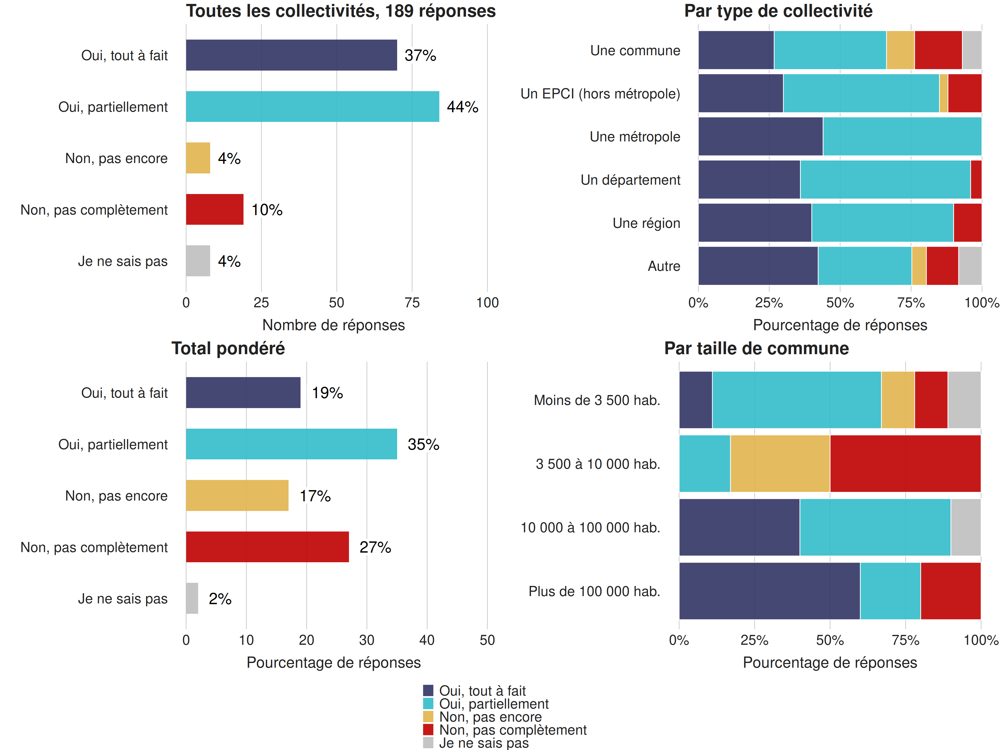
- Comparaison 2022 / 2023

2.2 Avez-vous nommé un(e) Délégué(e) à la Protection des Données (DPO) ?
- Statistiques
| Avez-vous nommé un(e) Délégué(e) à la Protection des Données (DPO) ? | Je ne sais pas | Non, pas encore | Oui, en interne | Oui, externalisé auprès d’une autre collectivité (mutualisation) | Oui, externalisé auprès d’un prestataire | Sans réponse |
|---|---|---|---|---|---|---|
| Total (184 réponses) | 3% | 8% | 63% | 8% | 15% | 4% |
| Total pondéré | 1% | 19% | 30% | 24% | 26% | 0% |
| Une commune | 3% | 20% | 33% | 20% | 23% | 0% |
| Communes de moins de 3 500 hab. | 0% | 33% | 11% | 22% | 33% | 0% |
| Communes de 3 500 à 10 000 hab. | 0% | 33% | 0% | 33% | 33% | 0% |
| Communes de 10 000 à 100 000 hab. | 0% | 10% | 50% | 20% | 20% | 0% |
| Communes de plus de 100 000 hab. | 20% | 0% | 80% | 0% | 0% | 0% |
| Une métropole | 0% | 0% | 94% | 0% | 6% | 0% |
| Un EPCI (hors métropole) | 3% | 3% | 58% | 15% | 21% | 0% |
| Un département | 0% | 0% | 84% | 0% | 16% | 0% |
| Une région | 0% | 10% | 80% | 0% | 10% | 0% |
| Autre | 4% | 9% | 60% | 7% | 11% | 9% |
- Visualisation
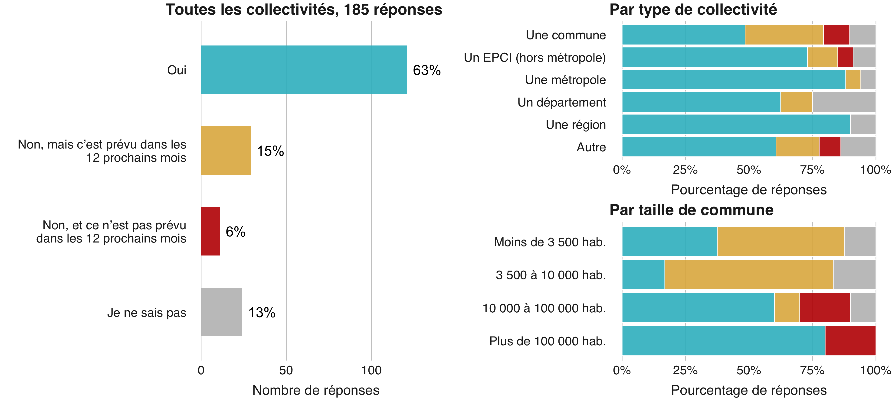
- Comparaison 2022 / 2023
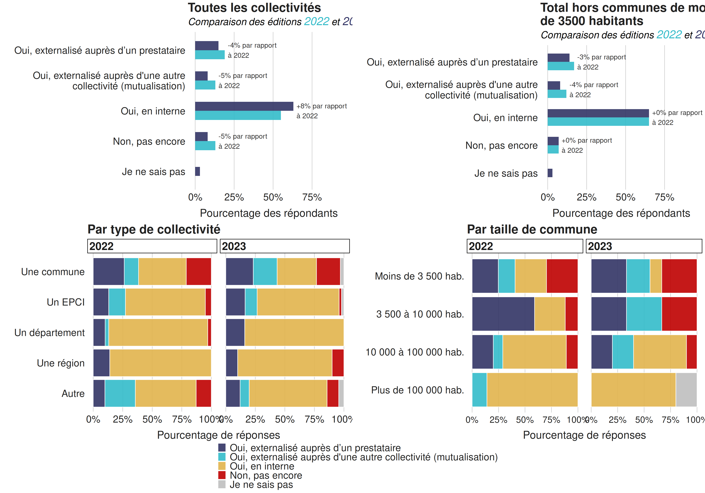
2.3 Afin de respecter le RGPD, avez-vous modifié des processus de gestion des données au sein de l’organisation ?
- Statistiques
| Afin de respecter le RGPD, avez-vous modifié des processus de gestion des données au sein de l’organisation ? | Je ne sais pas | Non, et ce n’est pas prévu dans les 12 prochains mois | Non, mais c’est prévu dans les 12 prochains mois | Oui | Sans réponse |
|---|---|---|---|---|---|
| Total (185 réponses) | 13% | 6% | 15% | 63% | 3% |
| Total pondéré | 13% | 6% | 37% | 43% | 0% |
| Une commune | 10% | 10% | 30% | 47% | 3% |
| Communes de moins de 3 500 hab. | 11% | 0% | 44% | 33% | 11% |
| Communes de 3 500 à 10 000 hab. | 17% | 0% | 67% | 17% | 0% |
| Communes de 10 000 à 100 000 hab. | 10% | 20% | 10% | 60% | 0% |
| Communes de plus de 100 000 hab. | 0% | 20% | 0% | 80% | 0% |
| Une métropole | 6% | 0% | 6% | 89% | 0% |
| Un EPCI (hors métropole) | 9% | 6% | 12% | 73% | 0% |
| Un département | 24% | 0% | 12% | 60% | 4% |
| Une région | 10% | 0% | 0% | 90% | 0% |
| Autre | 13% | 8% | 16% | 57% | 5% |
- Visualisation

- Comparaison 2022 / 2023
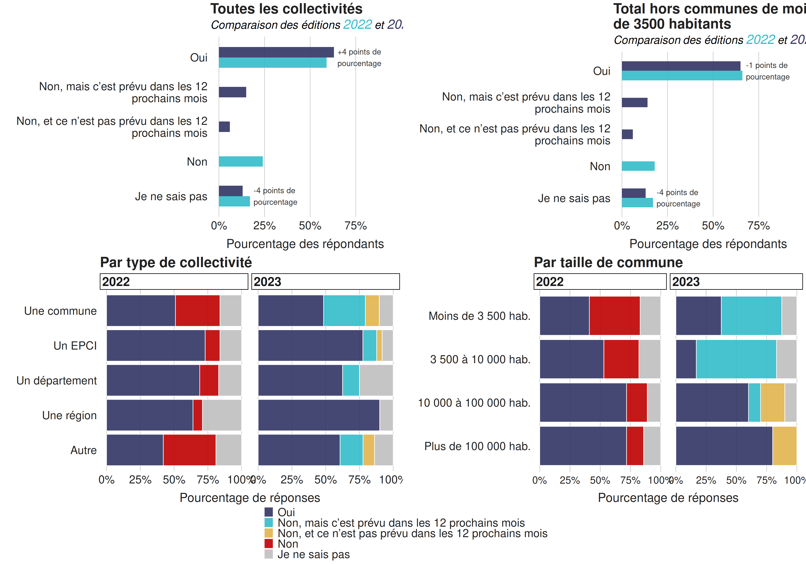
2.4 De manière générale, avez-vous mis en place des clauses juridiques sur la gestion des données dans les contrats de délégation et dans les marchés publics ?
- Statistiques
| De manière générale, avez-vous mis en place des clauses juridiques sur la gestion des données dans les contrats de délégation et dans les marchés publics ? | Je ne sais pas | Non, et ce n’est pas prévu dans les 12 prochains mois | Non, mais c’est prévu dans les 12 prochains mois | Oui | Sans réponse |
|---|---|---|---|---|---|
| Total (177 réponses) | 17% | 11% | 13% | 52% | 7% |
| Total pondéré | 9% | 30% | 29% | 30% | 2% |
| Une commune | 20% | 30% | 20% | 27% | 3% |
| Communes de moins de 3 500 hab. | 33% | 33% | 11% | 22% | 0% |
| Communes de 3 500 à 10 000 hab. | 0% | 50% | 50% | 0% | 0% |
| Communes de 10 000 à 100 000 hab. | 20% | 20% | 10% | 40% | 10% |
| Communes de plus de 100 000 hab. | 20% | 20% | 20% | 40% | 0% |
| Une métropole | 0% | 0% | 17% | 83% | 0% |
| Un EPCI (hors métropole) | 15% | 6% | 9% | 70% | 0% |
| Un département | 8% | 8% | 4% | 72% | 8% |
| Une région | 0% | 0% | 40% | 60% | 0% |
| Autre | 25% | 11% | 9% | 40% | 15% |
- Visualisation
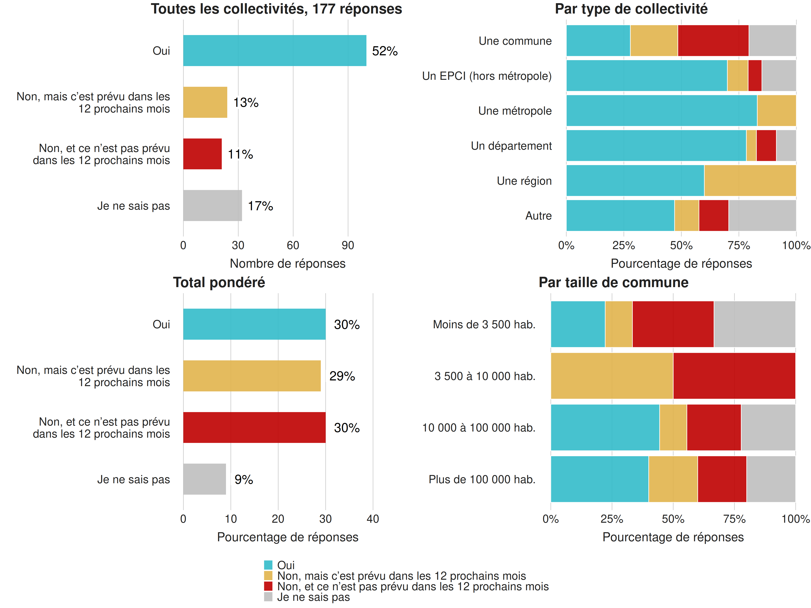
- Comparaison 2022 / 2023
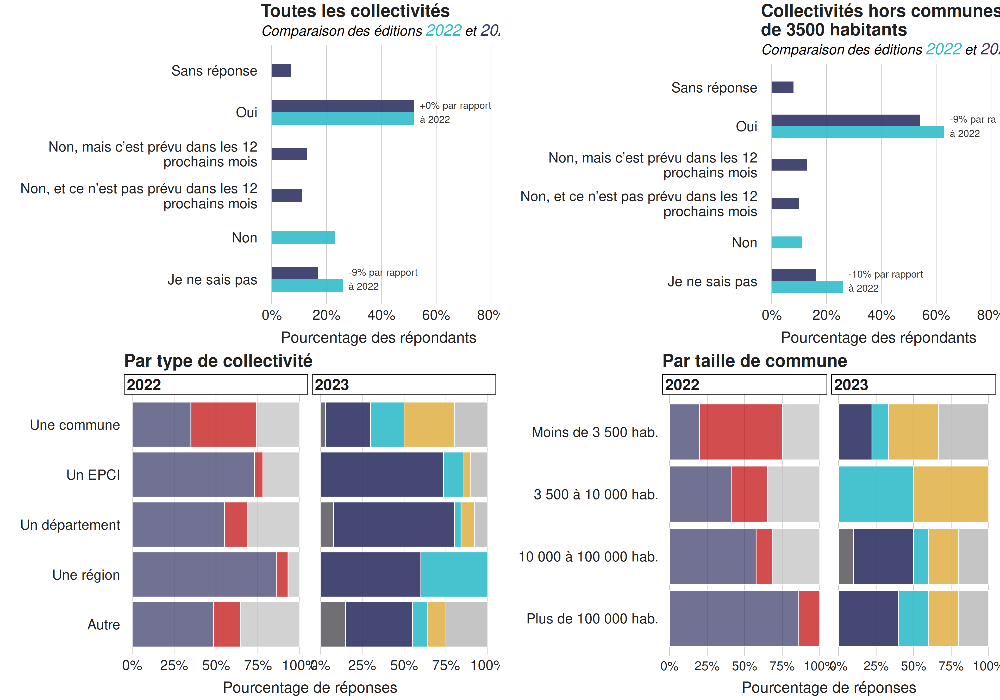
2.5 Quels sont le ou les domaines concernés par ces clauses ?
- Statistiques
| Quels sont le ou les domaines concernés par ces clauses ? | La propriété des données publiques | La publication des données (open data) | Le respect de standards ou de formats de données | Le respect du RGPD | Sans réponse |
|---|---|---|---|---|---|
| Total (100 réponses) | 38% | 27% | 31% | 49% | 48% |
| Total pondéré | 23% | 18% | 24% | 35% | 0% |
| Une commune | 17% | 17% | 17% | 23% | 73% |
| Communes de moins de 3 500 hab. | 11% | 22% | 22% | 11% | 78% |
| Communes de 3 500 à 10 000 hab. | 0% | 0% | 0% | 0% | 100% |
| Communes de 10 000 à 100 000 hab. | 20% | 20% | 20% | 40% | 60% |
| Communes de plus de 100 000 hab. | 40% | 20% | 20% | 40% | 60% |
| Une métropole | 72% | 67% | 39% | 78% | 17% |
| Un EPCI (hors métropole) | 52% | 39% | 55% | 70% | 30% |
| Un département | 44% | 20% | 36% | 72% | 28% |
| Une région | 40% | 10% | 20% | 50% | 40% |
| Autre | 29% | 20% | 24% | 36% | 60% |
- Visualisation
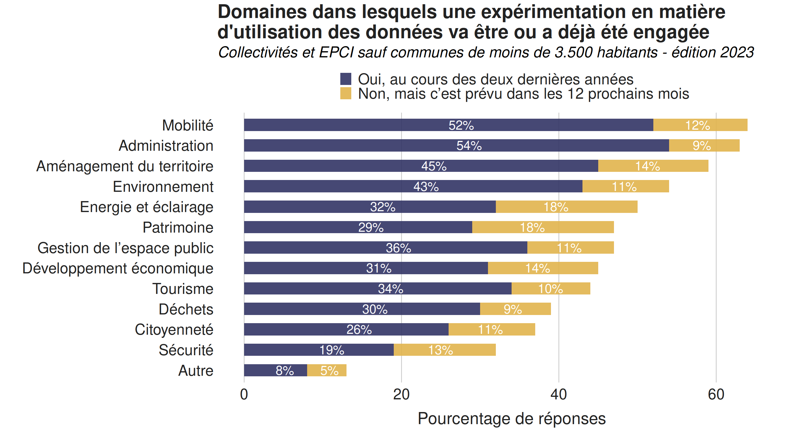
- Comparaison 2022 / 2023
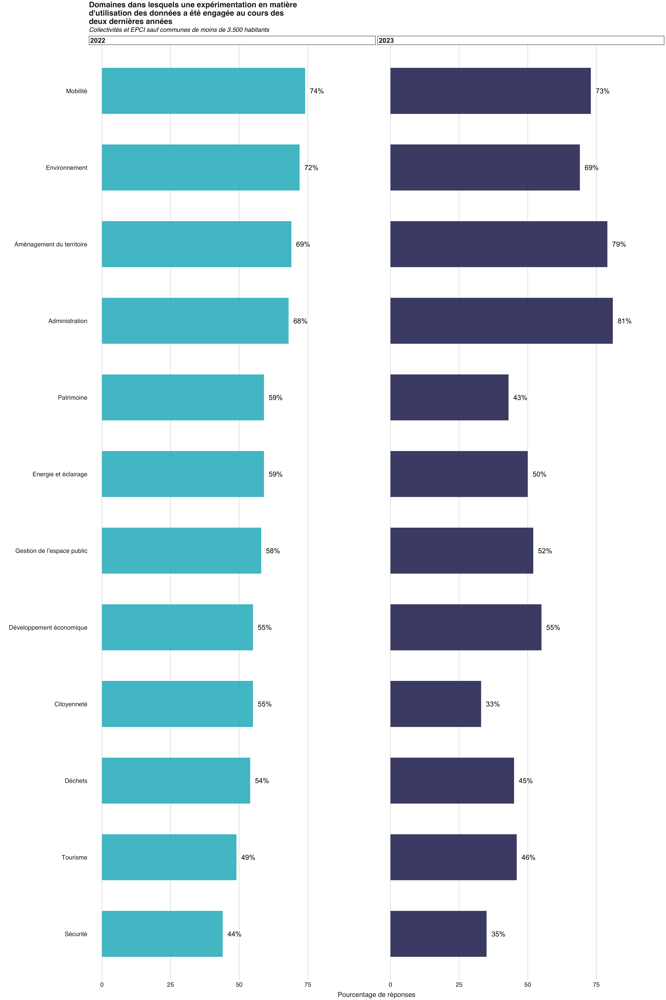
2.6 La question de la souveraineté numérique préoccupe de plus en plus d’acteurs publics : choix des éditeurs de logiciels, hébergement des données en Europe ou en France, maîtrise des données par la collectivité… Votre organisation a-t-elle défini une politique en matière de souveraineté publique sur les données ?
- Statistiques
| La question de la souveraineté numérique préoccupe de plus en plus d’acteurs publics : choix des éditeurs de logiciels, hébergement des données en Europe ou en France, maîtrise des données par la collectivité… Votre organisation a-t-elle défini une politique en matière de souveraineté publique sur les données ? | Je ne sais pas | Non, et ce n’est pas prévu dans les 12 prochains mois | Non, mais c’est prévu dans les 12 prochains mois | Oui | Sans réponse |
|---|---|---|---|---|---|
| Total (180 réponses) | 20% | 23% | 24% | 27% | 6% |
| Total pondéré | 17% | 43% | 23% | 15% | 2% |
| Une commune | 20% | 33% | 17% | 23% | 7% |
| Communes de moins de 3 500 hab. | 22% | 33% | 11% | 22% | 11% |
| Communes de 3 500 à 10 000 hab. | 17% | 50% | 33% | 0% | 0% |
| Communes de 10 000 à 100 000 hab. | 20% | 30% | 10% | 30% | 10% |
| Communes de plus de 100 000 hab. | 20% | 20% | 20% | 40% | 0% |
| Une métropole | 6% | 11% | 33% | 33% | 17% |
| Un EPCI (hors métropole) | 15% | 42% | 15% | 27% | 0% |
| Un département | 12% | 32% | 20% | 28% | 8% |
| Une région | 30% | 0% | 50% | 20% | 0% |
| Autre | 28% | 13% | 25% | 28% | 5% |
- Visualisation
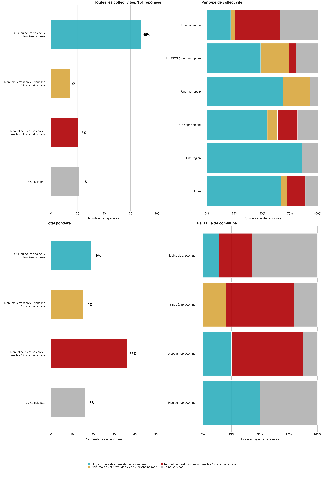
- Comparaison 2022 / 2023
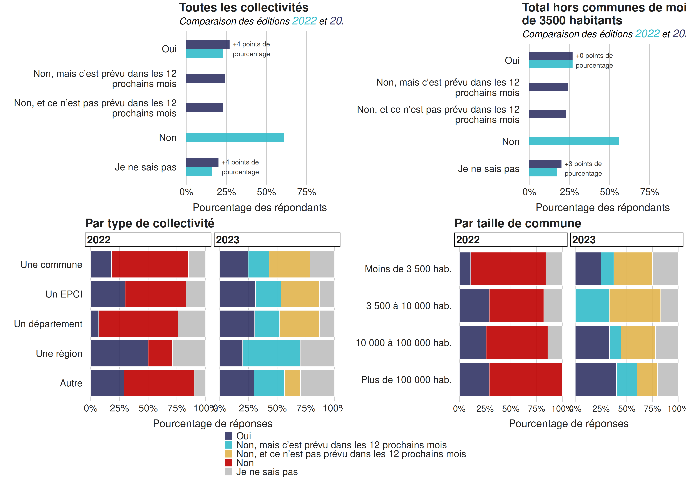
3 Les objectifs et les priorités pour l’utilisation des données
3.1 Pour chacun de ces domaines, pouvez-vous préciser si votre structure a engagé ces deux dernières années un ou plusieurs projets ou expérimentations en matière d’utilisation des données, ou prévoit d’en engager au cours des douze prochains mois ?
En résumé
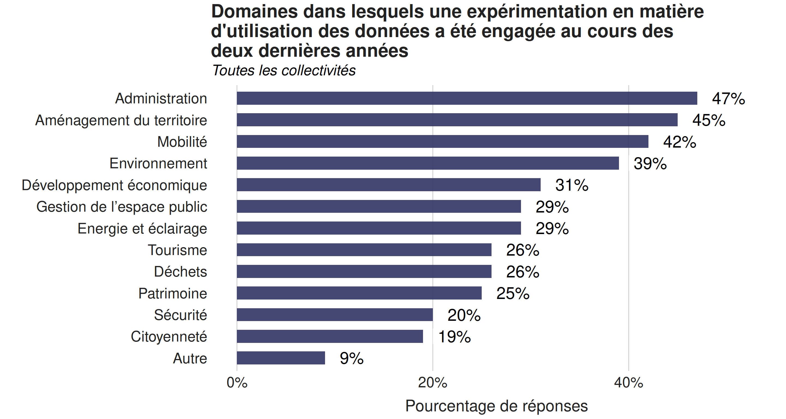
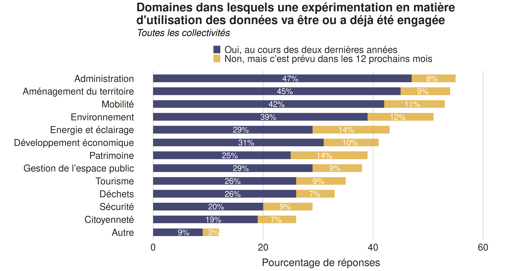
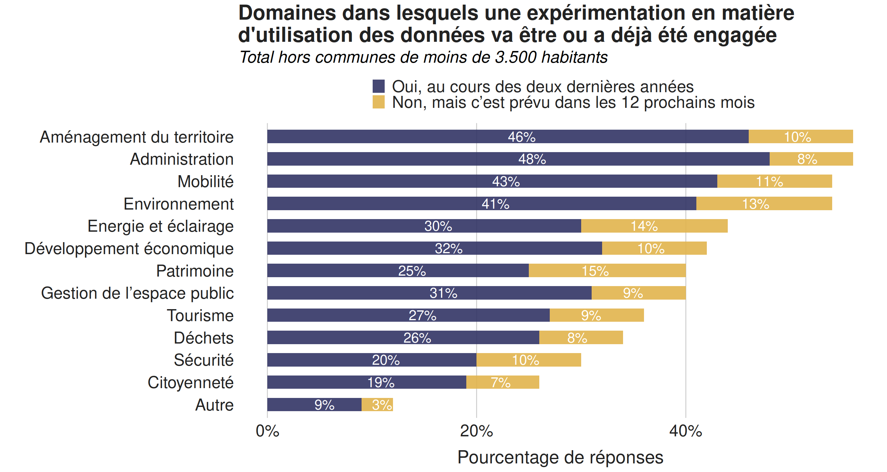
Comparaison avec l’édition 2022 de l’enquête, sans les communes de moins de 3500 habitants
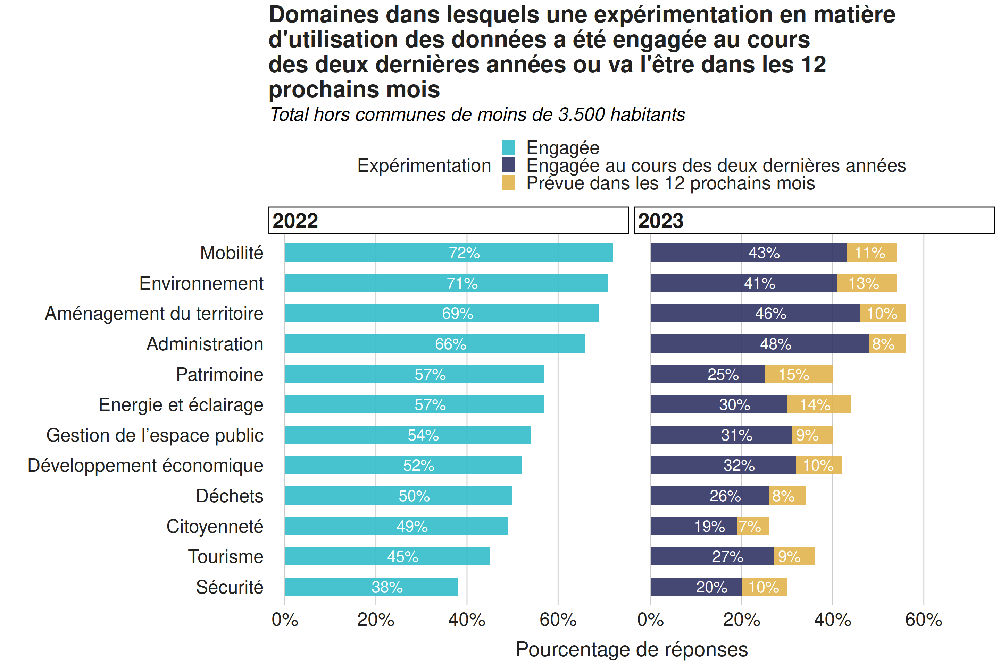
Aménagement du territoire
- Statistiques
| Pour chacun de ces domaines, pouvez-vous préciser si votre structure a engagé ces deux dernières années un ou plusieurs projets ou expérimentations en matière d’utilisation des données, ou prévoit d’en engager au cours des douze prochains mois ? [Aménagement du territoire] | Je ne sais pas | Non, et ce n’est pas prévu dans les 12 prochains mois | Non, mais c’est prévu dans les 12 prochains mois | Oui, au cours des deux dernières années | Sans réponse |
|---|---|---|---|---|---|
| Total (154 réponses) | 14% | 13% | 9% | 45% | 19% |
| Total pondéré | 16% | 36% | 15% | 19% | 14% |
| Une commune | 27% | 33% | 3% | 17% | 20% |
| Communes de moins de 3 500 hab. | 44% | 22% | 0% | 11% | 22% |
| Communes de 3 500 à 10 000 hab. | 17% | 50% | 17% | 0% | 17% |
| Communes de 10 000 à 100 000 hab. | 10% | 50% | 0% | 20% | 20% |
| Communes de plus de 100 000 hab. | 40% | 0% | 0% | 40% | 20% |
| Une métropole | 6% | 0% | 22% | 61% | 11% |
| Un EPCI (hors métropole) | 18% | 6% | 24% | 45% | 6% |
| Un département | 16% | 16% | 8% | 48% | 12% |
| Une région | 10% | 0% | 0% | 60% | 30% |
| Autre | 8% | 12% | 4% | 48% | 28% |
- Visualisation
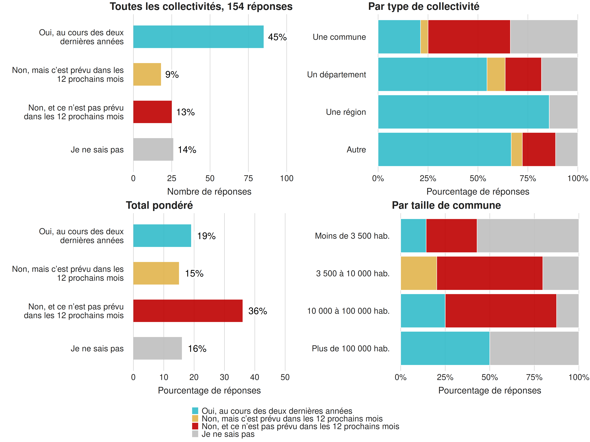
- Comparaison 2022 / 2023
Mobilité
- Statistiques
| Pour chacun de ces domaines, pouvez-vous préciser si votre structure a engagé ces deux dernières années un ou plusieurs projets ou expérimentations en matière d’utilisation des données, ou prévoit d’en engager au cours des douze prochains mois ? [Mobilité] | Je ne sais pas | Non, et ce n’est pas prévu dans les 12 prochains mois | Non, mais c’est prévu dans les 12 prochains mois | Oui, au cours des deux dernières années | Sans réponse |
|---|---|---|---|---|---|
| Total (155 réponses) | 11% | 17% | 11% | 42% | 19% |
| Total pondéré | 15% | 31% | 13% | 28% | 13% |
| Une commune | 17% | 33% | 7% | 20% | 23% |
| Communes de moins de 3 500 hab. | 22% | 11% | 11% | 22% | 33% |
| Communes de 3 500 à 10 000 hab. | 17% | 33% | 17% | 17% | 17% |
| Communes de 10 000 à 100 000 hab. | 10% | 60% | 0% | 10% | 20% |
| Communes de plus de 100 000 hab. | 20% | 20% | 0% | 40% | 20% |
| Une métropole | 0% | 0% | 11% | 89% | 0% |
| Un EPCI (hors métropole) | 15% | 6% | 18% | 61% | 0% |
| Un département | 16% | 20% | 16% | 32% | 16% |
| Une région | 0% | 0% | 0% | 80% | 20% |
| Autre | 9% | 21% | 9% | 29% | 31% |
- Visualisation
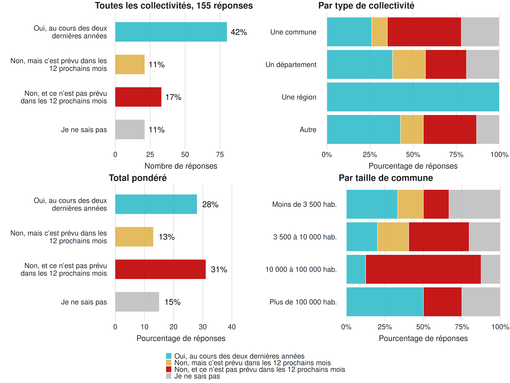
Administration
- Statistiques
| Pour chacun de ces domaines, pouvez-vous préciser si votre structure a engagé ces deux dernières années un ou plusieurs projets ou expérimentations en matière d’utilisation des données, ou prévoit d’en engager au cours des douze prochains mois ? [Administration] | Je ne sais pas | Non, et ce n’est pas prévu dans les 12 prochains mois | Non, mais c’est prévu dans les 12 prochains mois | Oui, au cours des deux dernières années | Sans réponse |
|---|---|---|---|---|---|
| Total (159 réponses) | 17% | 11% | 8% | 47% | 17% |
| Total pondéré | 17% | 22% | 20% | 37% | 4% |
| Une commune | 20% | 17% | 13% | 43% | 7% |
| Communes de moins de 3 500 hab. | 33% | 11% | 11% | 22% | 22% |
| Communes de 3 500 à 10 000 hab. | 17% | 33% | 33% | 17% | 0% |
| Communes de 10 000 à 100 000 hab. | 10% | 20% | 10% | 60% | 0% |
| Communes de plus de 100 000 hab. | 20% | 0% | 0% | 80% | 0% |
| Une métropole | 22% | 0% | 11% | 56% | 11% |
| Un EPCI (hors métropole) | 21% | 6% | 6% | 52% | 15% |
| Un département | 16% | 8% | 8% | 56% | 12% |
| Une région | 20% | 0% | 10% | 60% | 10% |
| Autre | 13% | 16% | 7% | 39% | 25% |
- Visualisation
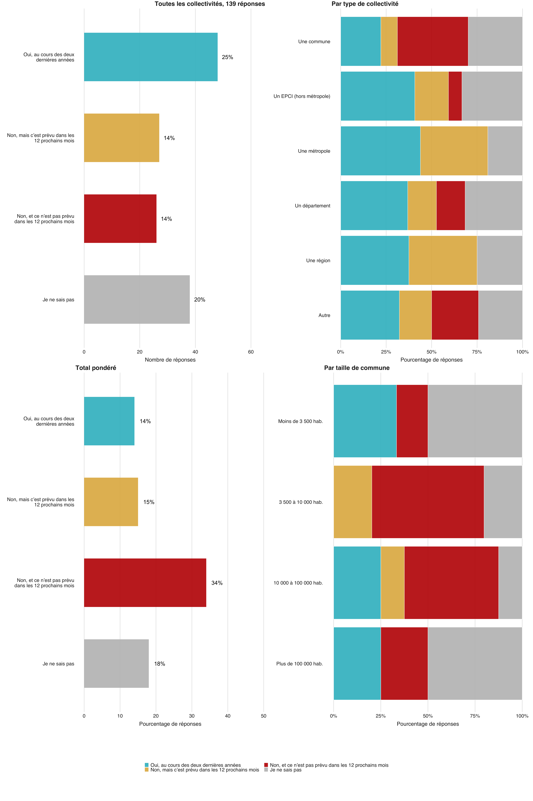
Développement économique
- Statistiques
| Pour chacun de ces domaines, pouvez-vous préciser si votre structure a engagé ces deux dernières années un ou plusieurs projets ou expérimentations en matière d’utilisation des données, ou prévoit d’en engager au cours des douze prochains mois ? [Développement économique] | Je ne sais pas | Non, et ce n’est pas prévu dans les 12 prochains mois | Non, mais c’est prévu dans les 12 prochains mois | Oui, au cours des deux dernières années | Sans réponse |
|---|---|---|---|---|---|
| Total (145 réponses) | 16% | 19% | 10% | 31% | 24% |
| Total pondéré | 16% | 44% | 8% | 15% | 17% |
| Une commune | 27% | 37% | 3% | 3% | 30% |
| Communes de moins de 3 500 hab. | 44% | 22% | 0% | 0% | 33% |
| Communes de 3 500 à 10 000 hab. | 17% | 67% | 0% | 0% | 17% |
| Communes de 10 000 à 100 000 hab. | 10% | 40% | 10% | 10% | 30% |
| Communes de plus de 100 000 hab. | 40% | 20% | 0% | 0% | 40% |
| Une métropole | 17% | 0% | 28% | 39% | 17% |
| Un EPCI (hors métropole) | 18% | 12% | 21% | 45% | 3% |
| Un département | 20% | 24% | 4% | 12% | 40% |
| Une région | 0% | 0% | 10% | 70% | 20% |
| Autre | 11% | 21% | 5% | 35% | 28% |
- Visualisation
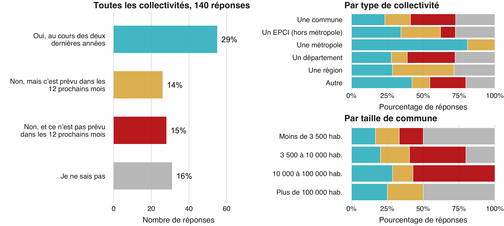
Gestion de l’espace public
- Statistiques
| Pour chacun de ces domaines, pouvez-vous préciser si votre structure a engagé ces deux dernières années un ou plusieurs projets ou expérimentations en matière d’utilisation des données, ou prévoit d’en engager au cours des douze prochains mois ? [Gestion de l’espace public] | Je ne sais pas | Non, et ce n’est pas prévu dans les 12 prochains mois | Non, mais c’est prévu dans les 12 prochains mois | Oui, au cours des deux dernières années | Sans réponse |
|---|---|---|---|---|---|
| Total (138 réponses) | 17% | 17% | 9% | 29% | 28% |
| Total pondéré | 18% | 25% | 15% | 26% | 15% |
| Une commune | 23% | 27% | 10% | 20% | 20% |
| Communes de moins de 3 500 hab. | 33% | 33% | 0% | 0% | 33% |
| Communes de 3 500 à 10 000 hab. | 17% | 33% | 17% | 17% | 17% |
| Communes de 10 000 à 100 000 hab. | 20% | 30% | 20% | 20% | 10% |
| Communes de plus de 100 000 hab. | 20% | 0% | 0% | 60% | 20% |
| Une métropole | 6% | 0% | 17% | 56% | 22% |
| Un EPCI (hors métropole) | 18% | 9% | 9% | 48% | 15% |
| Un département | 24% | 24% | 8% | 8% | 36% |
| Une région | 20% | 0% | 10% | 40% | 30% |
| Autre | 15% | 20% | 7% | 24% | 35% |
- Visualisation
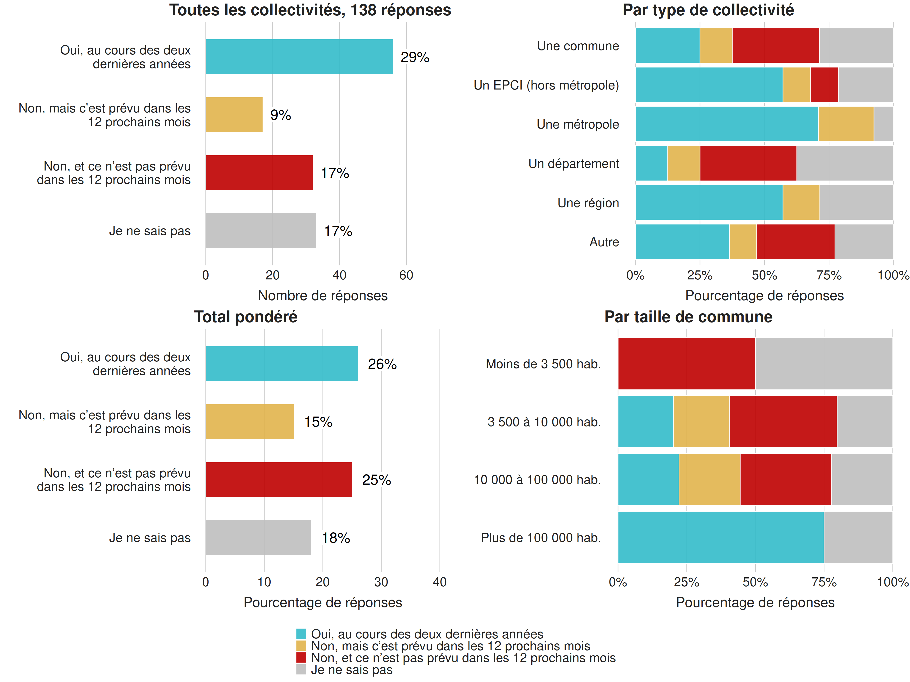
Sécurité
- Statistiques
| Pour chacun de ces domaines, pouvez-vous préciser si votre structure a engagé ces deux dernières années un ou plusieurs projets ou expérimentations en matière d’utilisation des données, ou prévoit d’en engager au cours des douze prochains mois ? [Sécurité] | Je ne sais pas | Non, et ce n’est pas prévu dans les 12 prochains mois | Non, mais c’est prévu dans les 12 prochains mois | Oui, au cours des deux dernières années | Sans réponse |
|---|---|---|---|---|---|
| Total (134 réponses) | 20% | 21% | 9% | 20% | 30% |
| Total pondéré | 19% | 35% | 12% | 20% | 14% |
| Une commune | 20% | 37% | 3% | 27% | 13% |
| Communes de moins de 3 500 hab. | 33% | 22% | 0% | 11% | 33% |
| Communes de 3 500 à 10 000 hab. | 17% | 33% | 17% | 17% | 17% |
| Communes de 10 000 à 100 000 hab. | 0% | 70% | 0% | 30% | 0% |
| Communes de plus de 100 000 hab. | 40% | 0% | 0% | 60% | 0% |
| Une métropole | 22% | 11% | 28% | 11% | 28% |
| Un EPCI (hors métropole) | 36% | 12% | 15% | 18% | 18% |
| Un département | 16% | 16% | 12% | 16% | 40% |
| Une région | 40% | 10% | 0% | 10% | 40% |
| Autre | 11% | 24% | 5% | 23% | 37% |
- Visualisation
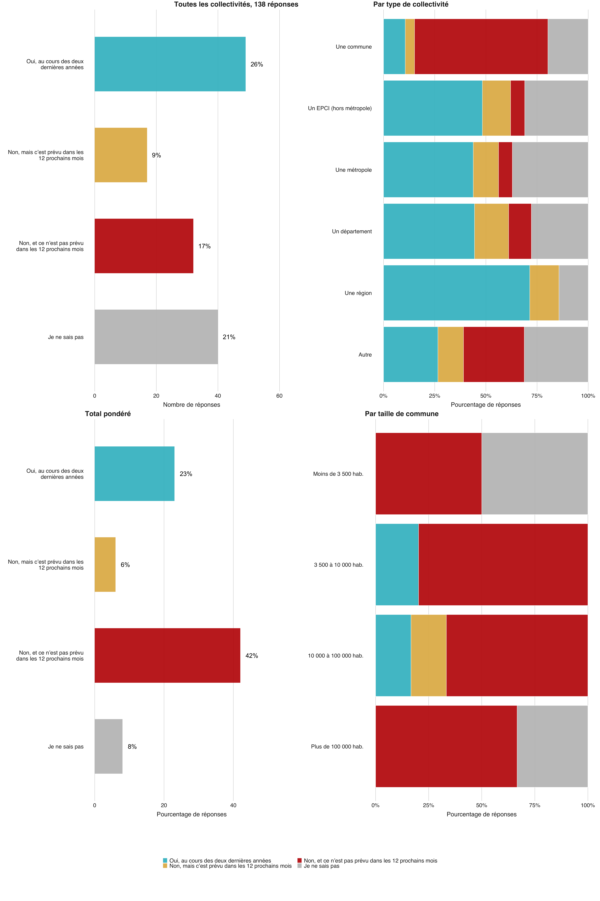
Patrimoine
- Statistiques
| Pour chacun de ces domaines, pouvez-vous préciser si votre structure a engagé ces deux dernières années un ou plusieurs projets ou expérimentations en matière d’utilisation des données, ou prévoit d’en engager au cours des douze prochains mois ? [Patrimoine] | Je ne sais pas | Non, et ce n’est pas prévu dans les 12 prochains mois | Non, mais c’est prévu dans les 12 prochains mois | Oui, au cours des deux dernières années | Sans réponse |
|---|---|---|---|---|---|
| Total (139 réponses) | 20% | 14% | 14% | 25% | 27% |
| Total pondéré | 18% | 34% | 15% | 14% | 18% |
| Une commune | 23% | 30% | 7% | 17% | 23% |
| Communes de moins de 3 500 hab. | 33% | 11% | 0% | 22% | 33% |
| Communes de 3 500 à 10 000 hab. | 17% | 50% | 17% | 0% | 17% |
| Communes de 10 000 à 100 000 hab. | 10% | 40% | 10% | 20% | 20% |
| Communes de plus de 100 000 hab. | 40% | 20% | 0% | 20% | 20% |
| Une métropole | 17% | 0% | 33% | 39% | 11% |
| Un EPCI (hors métropole) | 27% | 6% | 15% | 33% | 18% |
| Un département | 24% | 12% | 12% | 28% | 24% |
| Une région | 20% | 0% | 30% | 30% | 20% |
| Autre | 15% | 16% | 11% | 20% | 39% |
- Visualisation
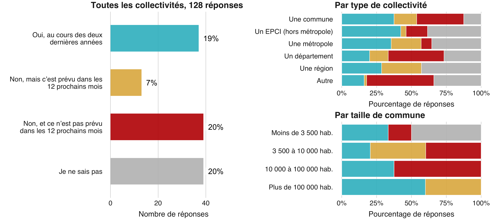
Energie et éclairage
- Statistiques
| Pour chacun de ces domaines, pouvez-vous préciser si votre structure a engagé ces deux dernières années un ou plusieurs projets ou expérimentations en matière d’utilisation des données, ou prévoit d’en engager au cours des douze prochains mois ? [Energie et éclairage] | Je ne sais pas | Non, et ce n’est pas prévu dans les 12 prochains mois | Non, mais c’est prévu dans les 12 prochains mois | Oui, au cours des deux dernières années | Sans réponse |
|---|---|---|---|---|---|
| Total (134 réponses) | 16% | 21% | 7% | 26% | 30% |
| Total pondéré | 15% | 38% | 9% | 18% | 20% |
| Une commune | 17% | 40% | 3% | 10% | 30% |
| Communes de moins de 3 500 hab. | 33% | 22% | 0% | 11% | 33% |
| Communes de 3 500 à 10 000 hab. | 17% | 50% | 17% | 0% | 17% |
| Communes de 10 000 à 100 000 hab. | 0% | 50% | 0% | 20% | 30% |
| Communes de plus de 100 000 hab. | 20% | 40% | 0% | 0% | 40% |
| Une métropole | 6% | 0% | 22% | 56% | 17% |
| Un EPCI (hors métropole) | 24% | 9% | 3% | 48% | 15% |
| Un département | 24% | 24% | 8% | 8% | 36% |
| Une région | 20% | 10% | 20% | 20% | 30% |
| Autre | 12% | 24% | 5% | 21% | 37% |
- Visualisation
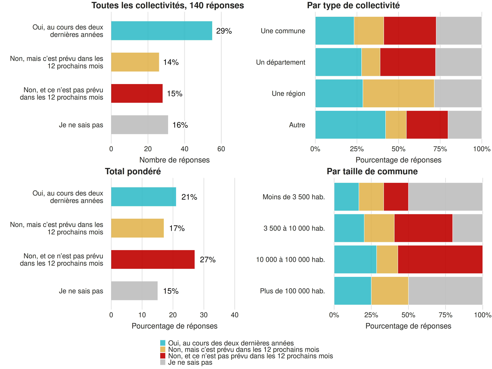
Déchets
- Statistiques
| Pour chacun de ces domaines, pouvez-vous préciser si votre structure a engagé ces deux dernières années un ou plusieurs projets ou expérimentations en matière d’utilisation des données, ou prévoit d’en engager au cours des douze prochains mois ? [Déchets] | Je ne sais pas | Non, et ce n’est pas prévu dans les 12 prochains mois | Non, mais c’est prévu dans les 12 prochains mois | Oui, au cours des deux dernières années | Sans réponse |
|---|---|---|---|---|---|
| Total (69 réponses) | 15% | 9% | 3% | 9% | 64% |
| Total pondéré | 16% | 33% | 0% | 4% | 46% |
| Une commune | 17% | 27% | 3% | 7% | 47% |
| Communes de moins de 3 500 hab. | 22% | 11% | 0% | 11% | 56% |
| Communes de 3 500 à 10 000 hab. | 17% | 50% | 0% | 0% | 33% |
| Communes de 10 000 à 100 000 hab. | 10% | 40% | 0% | 10% | 40% |
| Communes de plus de 100 000 hab. | 20% | 0% | 20% | 0% | 60% |
| Une métropole | 11% | 0% | 6% | 11% | 72% |
| Un EPCI (hors métropole) | 21% | 3% | 0% | 6% | 70% |
| Un département | 16% | 4% | 8% | 8% | 64% |
| Une région | 20% | 0% | 10% | 20% | 50% |
| Autre | 11% | 9% | 1% | 11% | 68% |
- Visualisation
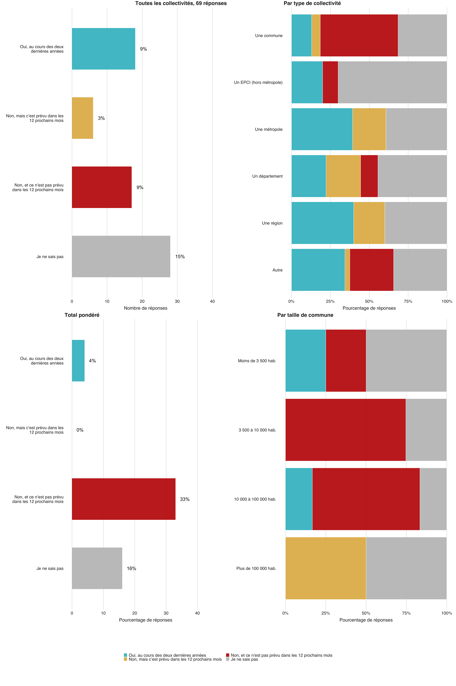
Tourisme
- Statistiques
| Pour chacun de ces domaines, pouvez-vous préciser si votre structure a engagé ces deux dernières années un ou plusieurs projets ou expérimentations en matière d’utilisation des données, ou prévoit d’en engager au cours des douze prochains mois ? [Tourisme] | Je ne sais pas | Non, et ce n’est pas prévu dans les 12 prochains mois | Non, mais c’est prévu dans les 12 prochains mois | Oui, au cours des deux dernières années | Sans réponse |
|---|---|---|---|---|---|
| Total (140 réponses) | 16% | 15% | 14% | 29% | 27% |
| Total pondéré | 15% | 27% | 17% | 21% | 19% |
| Une commune | 20% | 23% | 13% | 17% | 27% |
| Communes de moins de 3 500 hab. | 33% | 11% | 11% | 11% | 33% |
| Communes de 3 500 à 10 000 hab. | 17% | 33% | 17% | 17% | 17% |
| Communes de 10 000 à 100 000 hab. | 0% | 40% | 10% | 20% | 30% |
| Communes de plus de 100 000 hab. | 40% | 0% | 20% | 20% | 20% |
| Une métropole | 0% | 0% | 17% | 72% | 11% |
| Un EPCI (hors métropole) | 24% | 9% | 24% | 30% | 12% |
| Un département | 20% | 24% | 8% | 20% | 28% |
| Une région | 20% | 0% | 30% | 20% | 30% |
| Autre | 13% | 16% | 8% | 27% | 36% |
- Visualisation
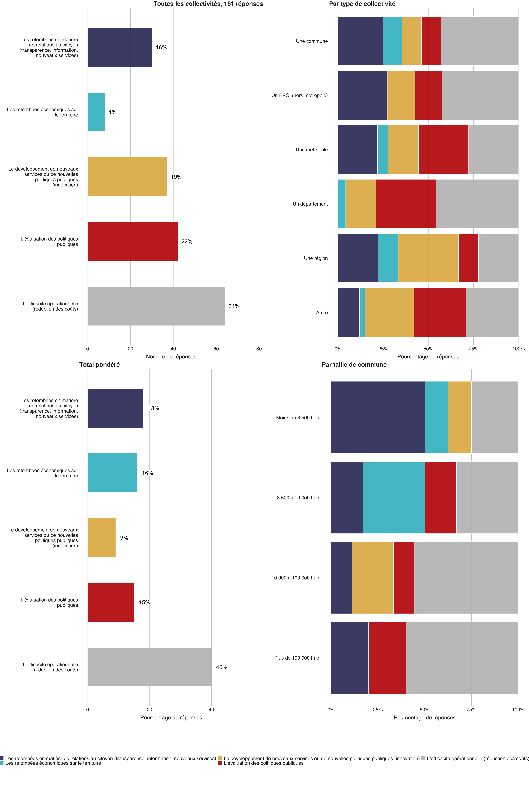
Citoyenneté
- Statistiques
| Pour chacun de ces domaines, pouvez-vous préciser si votre structure a engagé ces deux dernières années un ou plusieurs projets ou expérimentations en matière d’utilisation des données, ou prévoit d’en engager au cours des douze prochains mois ? [Citoyenneté] | Je ne sais pas | Non, et ce n’est pas prévu dans les 12 prochains mois | Non, mais c’est prévu dans les 12 prochains mois | Oui, au cours des deux dernières années | Sans réponse |
|---|---|---|---|---|---|
| Total (138 réponses) | 21% | 17% | 9% | 26% | 28% |
| Total pondéré | 8% | 42% | 6% | 23% | 21% |
| Une commune | 13% | 43% | 3% | 7% | 33% |
| Communes de moins de 3 500 hab. | 33% | 33% | 0% | 0% | 33% |
| Communes de 3 500 à 10 000 hab. | 0% | 67% | 0% | 17% | 17% |
| Communes de 10 000 à 100 000 hab. | 0% | 40% | 10% | 10% | 40% |
| Communes de plus de 100 000 hab. | 20% | 40% | 0% | 0% | 40% |
| Une métropole | 33% | 6% | 11% | 39% | 11% |
| Un EPCI (hors métropole) | 27% | 6% | 12% | 42% | 12% |
| Un département | 20% | 8% | 12% | 32% | 28% |
| Une région | 10% | 0% | 10% | 50% | 30% |
| Autre | 20% | 19% | 8% | 17% | 36% |
- Visualisation
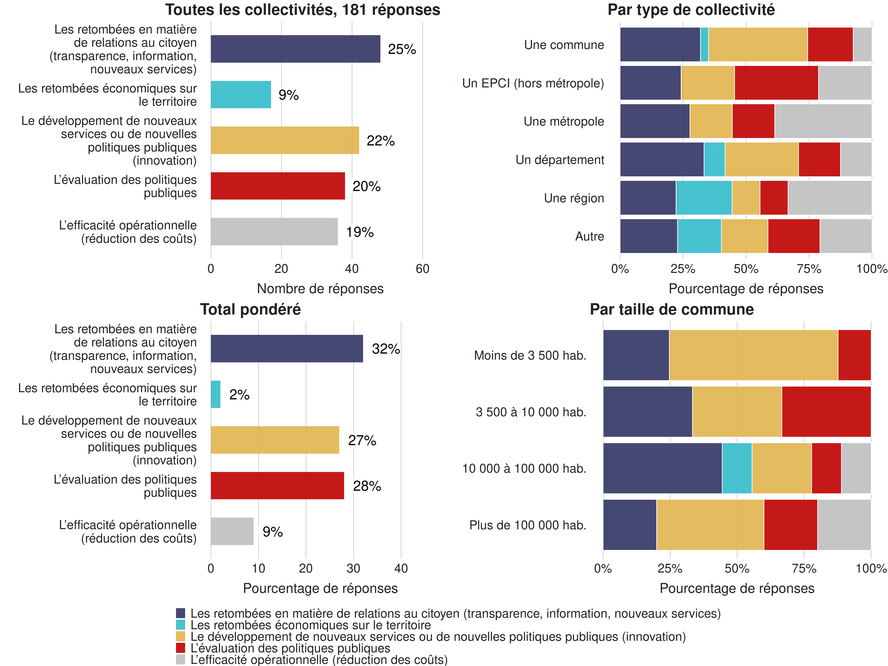
Environnement
- Statistiques
| Pour chacun de ces domaines, pouvez-vous préciser si votre structure a engagé ces deux dernières années un ou plusieurs projets ou expérimentations en matière d’utilisation des données, ou prévoit d’en engager au cours des douze prochains mois ? [Environnement] | Je ne sais pas | Non, et ce n’est pas prévu dans les 12 prochains mois | Non, mais c’est prévu dans les 12 prochains mois | Oui, au cours des deux dernières années | Sans réponse |
|---|---|---|---|---|---|
| Total (128 réponses) | 20% | 20% | 7% | 19% | 33% |
| Total pondéré | 9% | 30% | 17% | 24% | 19% |
| Une commune | 10% | 27% | 13% | 30% | 20% |
| Communes de moins de 3 500 hab. | 33% | 11% | 0% | 22% | 33% |
| Communes de 3 500 à 10 000 hab. | 0% | 33% | 33% | 17% | 17% |
| Communes de 10 000 à 100 000 hab. | 0% | 50% | 0% | 30% | 20% |
| Communes de plus de 100 000 hab. | 0% | 0% | 40% | 60% | 0% |
| Une métropole | 28% | 6% | 17% | 28% | 22% |
| Un EPCI (hors métropole) | 30% | 12% | 3% | 33% | 21% |
| Un département | 16% | 24% | 8% | 12% | 40% |
| Une région | 30% | 0% | 20% | 20% | 30% |
| Autre | 19% | 27% | 1% | 9% | 44% |
- Visualisation
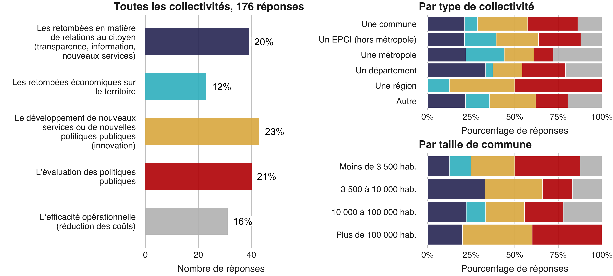
Autre
- Statistiques
| Pour chacun de ces domaines, pouvez-vous préciser si votre structure a engagé ces deux dernières années un ou plusieurs projets ou expérimentations en matière d’utilisation des données, ou prévoit d’en engager au cours des douze prochains mois ? [Autre] | Je ne sais pas | Non, et ce n’est pas prévu dans les 12 prochains mois | Non, mais c’est prévu dans les 12 prochains mois | Oui, au cours des deux dernières années | Sans réponse |
|---|---|---|---|---|---|
| Total (147 réponses) | 14% | 12% | 12% | 39% | 23% |
| Total pondéré | 17% | 35% | 2% | 28% | 18% |
| Une commune | 23% | 33% | 0% | 17% | 27% |
| Communes de moins de 3 500 hab. | 44% | 22% | 0% | 0% | 33% |
| Communes de 3 500 à 10 000 hab. | 17% | 50% | 0% | 17% | 17% |
| Communes de 10 000 à 100 000 hab. | 10% | 40% | 0% | 20% | 30% |
| Communes de plus de 100 000 hab. | 20% | 20% | 0% | 40% | 20% |
| Une métropole | 6% | 0% | 28% | 56% | 11% |
| Un EPCI (hors métropole) | 24% | 9% | 6% | 52% | 9% |
| Un département | 16% | 12% | 16% | 32% | 24% |
| Une région | 10% | 0% | 10% | 60% | 20% |
| Autre | 8% | 9% | 15% | 37% | 31% |
- Visualisation
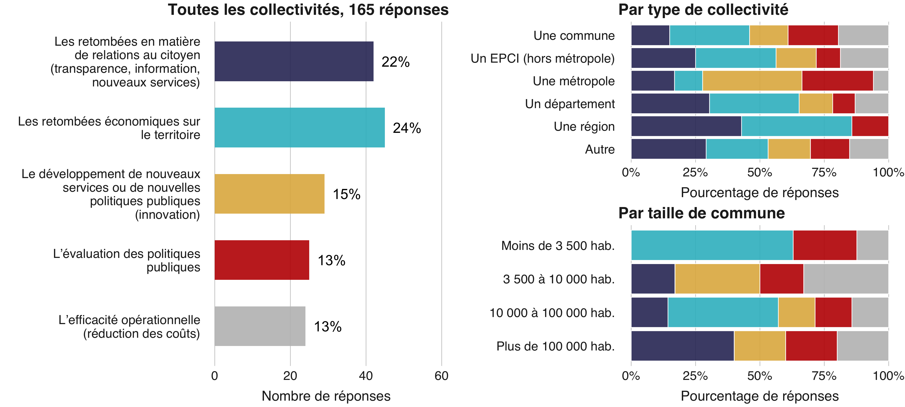
3.2 Quelles sont, selon vous, les priorités qui justifient (ou justifieraient) une utilisation plus importante des données au sein de votre organisation ? Classez du plus important au moins important (de haut en bas)
Classement 1
- Statistiques
| Quelles sont, selon vous, les priorités qui justifient (ou justifieraient) une utilisation plus importante des données au sein de votre organisation ? Classez du plus important au moins important (de haut en bas) [Classement 1] | L’efficacité opérationnelle (réduction des coûts) | L’évaluation des politiques publiques | Le développement de nouveaux services ou de nouvelles politiques publiques (innovation) | Les retombées économiques sur le territoire | Les retombées en matière de relations au citoyen (transparence, information, nouveaux services) | Sans réponse |
|---|---|---|---|---|---|---|
| Total (181 réponses) | 34% | 22% | 19% | 4% | 16% | 5% |
| Total pondéré | 40% | 15% | 9% | 16% | 18% | 2% |
| Une commune | 40% | 10% | 10% | 10% | 23% | 7% |
| Communes de moins de 3 500 hab. | 22% | 0% | 11% | 11% | 44% | 11% |
| Communes de 3 500 à 10 000 hab. | 33% | 17% | 0% | 33% | 17% | 0% |
| Communes de 10 000 à 100 000 hab. | 50% | 10% | 20% | 0% | 10% | 10% |
| Communes de plus de 100 000 hab. | 60% | 20% | 0% | 0% | 20% | 0% |
| Une métropole | 28% | 28% | 17% | 6% | 22% | 0% |
| Un EPCI (hors métropole) | 42% | 15% | 15% | 0% | 27% | 0% |
| Un département | 44% | 32% | 16% | 4% | 0% | 4% |
| Une région | 20% | 10% | 30% | 10% | 20% | 10% |
| Autre | 27% | 27% | 25% | 3% | 11% | 8% |
- Visualisation
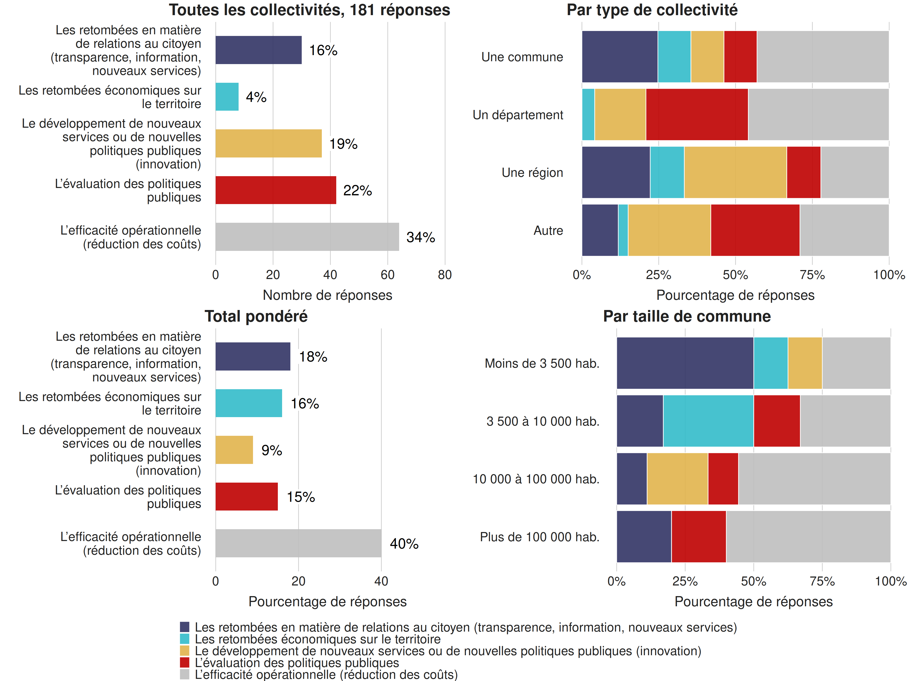
Classement 2
- Statistiques
| Quelles sont, selon vous, les priorités qui justifient (ou justifieraient) une utilisation plus importante des données au sein de votre organisation ? Classez du plus important au moins important (de haut en bas) [Classement 2] | L’efficacité opérationnelle (réduction des coûts) | L’évaluation des politiques publiques | Le développement de nouveaux services ou de nouvelles politiques publiques (innovation) | Les retombées économiques sur le territoire | Les retombées en matière de relations au citoyen (transparence, information, nouveaux services) | Sans réponse |
|---|---|---|---|---|---|---|
| Total (181 réponses) | 19% | 20% | 22% | 9% | 25% | 5% |
| Total pondéré | 9% | 28% | 27% | 2% | 32% | 2% |
| Une commune | 7% | 17% | 37% | 3% | 30% | 7% |
| Communes de moins de 3 500 hab. | 0% | 11% | 56% | 0% | 22% | 11% |
| Communes de 3 500 à 10 000 hab. | 0% | 33% | 33% | 0% | 33% | 0% |
| Communes de 10 000 à 100 000 hab. | 10% | 10% | 20% | 10% | 40% | 10% |
| Communes de plus de 100 000 hab. | 20% | 20% | 40% | 0% | 20% | 0% |
| Une métropole | 39% | 17% | 17% | 0% | 28% | 0% |
| Un EPCI (hors métropole) | 21% | 33% | 21% | 0% | 24% | 0% |
| Un département | 12% | 16% | 28% | 8% | 32% | 4% |
| Une région | 30% | 10% | 10% | 20% | 20% | 10% |
| Autre | 19% | 19% | 17% | 16% | 21% | 8% |
- Visualisation
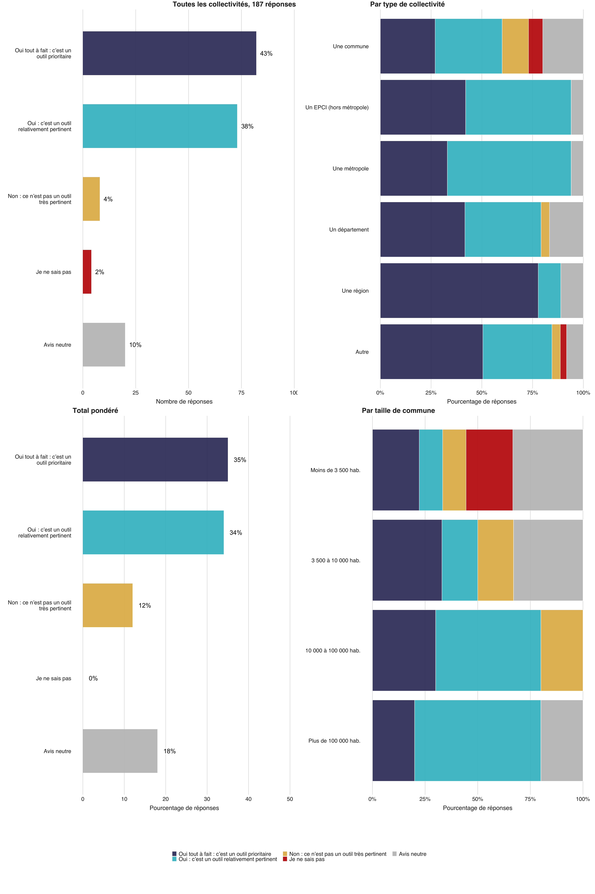
Classement 3
- Statistiques
| Quelles sont, selon vous, les priorités qui justifient (ou justifieraient) une utilisation plus importante des données au sein de votre organisation ? Classez du plus important au moins important (de haut en bas) [Classement 3] | L’efficacité opérationnelle (réduction des coûts) | L’évaluation des politiques publiques | Le développement de nouveaux services ou de nouvelles politiques publiques (innovation) | Les retombées économiques sur le territoire | Les retombées en matière de relations au citoyen (transparence, information, nouveaux services) | Sans réponse |
|---|---|---|---|---|---|---|
| Total (176 réponses) | 16% | 21% | 23% | 12% | 20% | 8% |
| Total pondéré | 16% | 20% | 28% | 7% | 27% | 2% |
| Une commune | 13% | 27% | 27% | 7% | 20% | 7% |
| Communes de moins de 3 500 hab. | 11% | 33% | 22% | 11% | 11% | 11% |
| Communes de 3 500 à 10 000 hab. | 17% | 17% | 33% | 0% | 33% | 0% |
| Communes de 10 000 à 100 000 hab. | 20% | 20% | 20% | 10% | 20% | 10% |
| Communes de plus de 100 000 hab. | 0% | 40% | 40% | 0% | 20% | 0% |
| Une métropole | 28% | 11% | 17% | 22% | 22% | 0% |
| Un EPCI (hors métropole) | 12% | 24% | 24% | 18% | 21% | 0% |
| Un département | 20% | 24% | 16% | 4% | 32% | 4% |
| Une région | 0% | 40% | 30% | 10% | 0% | 20% |
| Autre | 17% | 16% | 23% | 12% | 19% | 13% |
- Visualisation

Classement 4
- Statistiques
| Quelles sont, selon vous, les priorités qui justifient (ou justifieraient) une utilisation plus importante des données au sein de votre organisation ? Classez du plus important au moins important (de haut en bas) [Classement 4] | L’efficacité opérationnelle (réduction des coûts) | L’évaluation des politiques publiques | Le développement de nouveaux services ou de nouvelles politiques publiques (innovation) | Les retombées économiques sur le territoire | Les retombées en matière de relations au citoyen (transparence, information, nouveaux services) | Sans réponse |
|---|---|---|---|---|---|---|
| Total (165 réponses) | 13% | 13% | 15% | 24% | 22% | 14% |
| Total pondéré | 23% | 13% | 23% | 16% | 18% | 8% |
| Une commune | 17% | 17% | 13% | 27% | 13% | 13% |
| Communes de moins de 3 500 hab. | 11% | 22% | 0% | 56% | 0% | 11% |
| Communes de 3 500 à 10 000 hab. | 33% | 17% | 33% | 0% | 17% | 0% |
| Communes de 10 000 à 100 000 hab. | 10% | 10% | 10% | 30% | 10% | 30% |
| Communes de plus de 100 000 hab. | 20% | 20% | 20% | 0% | 40% | 0% |
| Une métropole | 6% | 28% | 39% | 11% | 17% | 0% |
| Un EPCI (hors métropole) | 18% | 9% | 15% | 30% | 24% | 3% |
| Un département | 12% | 8% | 12% | 32% | 28% | 8% |
| Une région | 0% | 10% | 0% | 30% | 30% | 30% |
| Autre | 12% | 12% | 13% | 19% | 23% | 21% |
- Visualisation
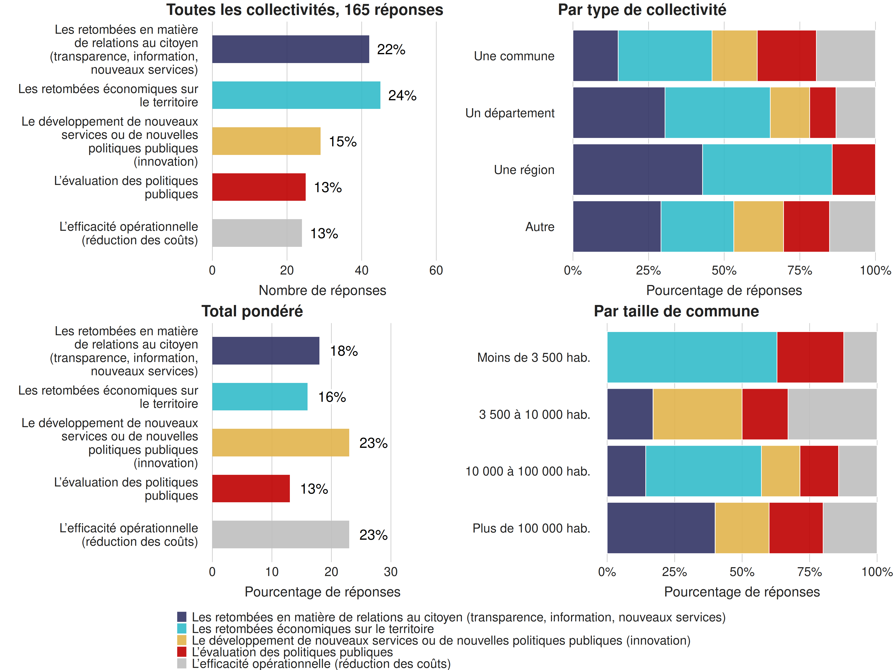
Classement 5
- Statistiques
| Quelles sont, selon vous, les priorités qui justifient (ou justifieraient) une utilisation plus importante des données au sein de votre organisation ? Classez du plus important au moins important (de haut en bas) [Classement 5] | L’efficacité opérationnelle (réduction des coûts) | L’évaluation des politiques publiques | Le développement de nouveaux services ou de nouvelles politiques publiques (innovation) | Les retombées économiques sur le territoire | Les retombées en matière de relations au citoyen (transparence, information, nouveaux services) | Sans réponse |
|---|---|---|---|---|---|---|
| Total (161 réponses) | 10% | 15% | 10% | 39% | 9% | 16% |
| Total pondéré | 10% | 20% | 8% | 51% | 3% | 8% |
| Une commune | 17% | 20% | 3% | 40% | 7% | 13% |
| Communes de moins de 3 500 hab. | 44% | 22% | 0% | 11% | 11% | 11% |
| Communes de 3 500 à 10 000 hab. | 17% | 17% | 0% | 67% | 0% | 0% |
| Communes de 10 000 à 100 000 hab. | 0% | 30% | 10% | 20% | 10% | 30% |
| Communes de plus de 100 000 hab. | 0% | 0% | 0% | 100% | 0% | 0% |
| Une métropole | 0% | 17% | 11% | 61% | 11% | 0% |
| Un EPCI (hors métropole) | 6% | 18% | 18% | 48% | 3% | 6% |
| Un département | 8% | 16% | 20% | 40% | 4% | 12% |
| Une région | 30% | 10% | 0% | 10% | 20% | 30% |
| Autre | 11% | 12% | 8% | 32% | 13% | 24% |
- Visualisation
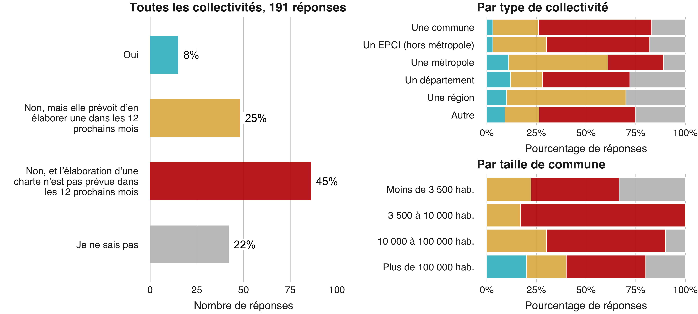
3.3 Selon-vous, la maîtrise de la donnée constitue-t-elle un outil pertinent pour répondre aux enjeux environnementaux de votre territoire ?
- Statistiques
| Selon-vous, la maîtrise de la donnée constitue-t-elle un outil pertinent pour répondre aux enjeux environnementaux de votre territoire ? | Avis neutre | Je ne sais pas | Non : ce n’est pas un outil très pertinent | Oui : c’est un outil relativement pertinent | Oui tout à fait : c’est un outil prioritaire | Sans réponse |
|---|---|---|---|---|---|---|
| Total (187 réponses) | 10% | 2% | 4% | 38% | 43% | 2% |
| Total pondéré | 18% | 0% | 12% | 34% | 35% | 0% |
| Une commune | 20% | 7% | 13% | 33% | 27% | 0% |
| Communes de moins de 3 500 hab. | 33% | 22% | 11% | 11% | 22% | 0% |
| Communes de 3 500 à 10 000 hab. | 33% | 0% | 17% | 17% | 33% | 0% |
| Communes de 10 000 à 100 000 hab. | 0% | 0% | 20% | 50% | 30% | 0% |
| Communes de plus de 100 000 hab. | 20% | 0% | 0% | 60% | 20% | 0% |
| Une métropole | 6% | 0% | 0% | 61% | 33% | 0% |
| Un EPCI (hors métropole) | 6% | 0% | 0% | 52% | 42% | 0% |
| Un département | 16% | 0% | 4% | 36% | 40% | 4% |
| Une région | 10% | 0% | 0% | 10% | 70% | 10% |
| Autre | 8% | 3% | 4% | 33% | 49% | 3% |
- Visualisation
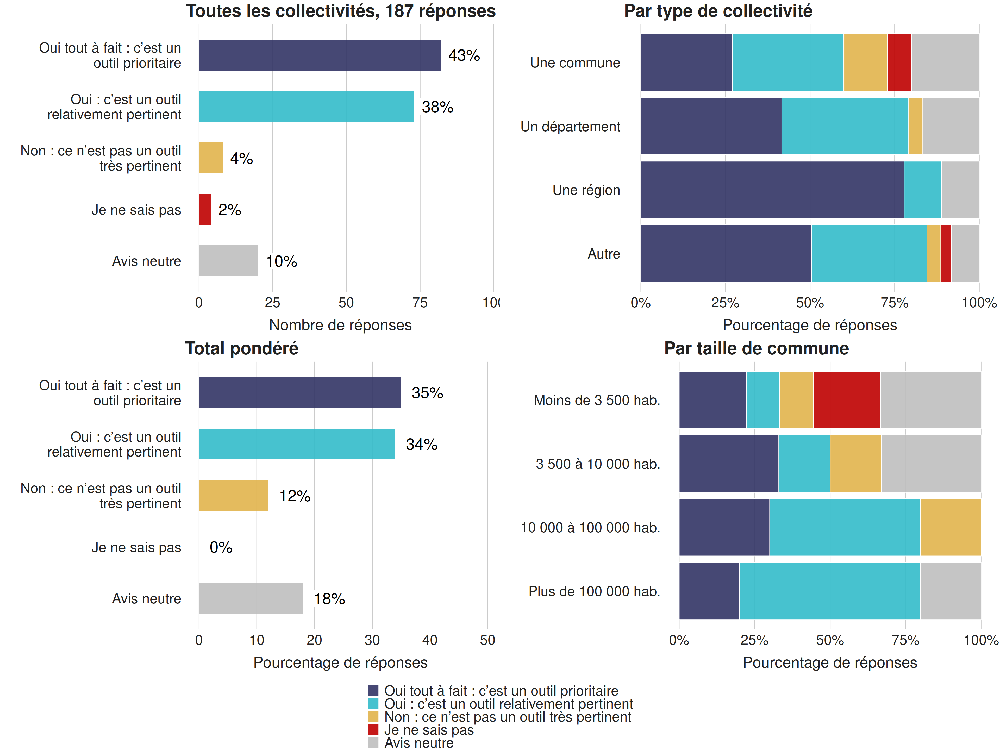
4 La gouvernance des données
4.1 Votre structure a-t-elle défini des règles de gouvernance de la donnée (internes ou externes) ?
- Statistiques
| Votre structure a-t-elle défini des règles de gouvernance de la donnée (internes ou externes) ? | Je ne sais pas | Non, et ce n’est pas prévu dans les 12 prochains mois | Non, mais c’est prévu dans les 12 prochains mois | Oui | Sans réponse |
|---|---|---|---|---|---|
| Total (191 réponses) | 10% | 18% | 34% | 38% | 0% |
| Total pondéré | 4% | 29% | 51% | 15% | 0% |
| Une commune | 13% | 27% | 33% | 27% | 0% |
| Communes de moins de 3 500 hab. | 22% | 33% | 22% | 22% | 0% |
| Communes de 3 500 à 10 000 hab. | 0% | 33% | 67% | 0% | 0% |
| Communes de 10 000 à 100 000 hab. | 10% | 30% | 30% | 30% | 0% |
| Communes de plus de 100 000 hab. | 20% | 0% | 20% | 60% | 0% |
| Une métropole | 0% | 0% | 61% | 39% | 0% |
| Un EPCI (hors métropole) | 6% | 24% | 42% | 27% | 0% |
| Un département | 12% | 24% | 44% | 20% | 0% |
| Une région | 10% | 0% | 40% | 50% | 0% |
| Autre | 13% | 16% | 19% | 52% | 0% |
- Visualisation
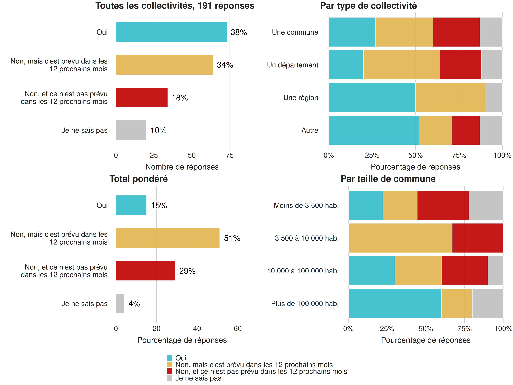
4.2 Pouvez-vous préciser quelles sont ces règles ?
- Statistiques
| Pouvez-vous préciser quelles sont ces règles ? | Charte de la donnée | Clauses contractuelles data avec les prestataires | Convention(s) partenariale(s) | Politique de gestion interne | Sans réponse |
|---|---|---|---|---|---|
| Total (73 réponses) | 13% | 22% | 19% | 25% | 62% |
| Total pondéré | 16% | 29% | 12% | 43% | 0% |
| Une commune | 3% | 3% | 3% | 27% | 73% |
| Communes de moins de 3 500 hab. | 11% | 0% | 0% | 22% | 78% |
| Communes de 3 500 à 10 000 hab. | 0% | 0% | 0% | 0% | 100% |
| Communes de 10 000 à 100 000 hab. | 0% | 10% | 0% | 30% | 70% |
| Communes de plus de 100 000 hab. | 0% | 0% | 20% | 60% | 40% |
| Une métropole | 17% | 33% | 28% | 33% | 61% |
| Un EPCI (hors métropole) | 15% | 18% | 9% | 15% | 73% |
| Un département | 0% | 12% | 12% | 8% | 80% |
| Une région | 20% | 50% | 50% | 10% | 50% |
| Autre | 17% | 28% | 25% | 33% | 48% |
- Visualisation
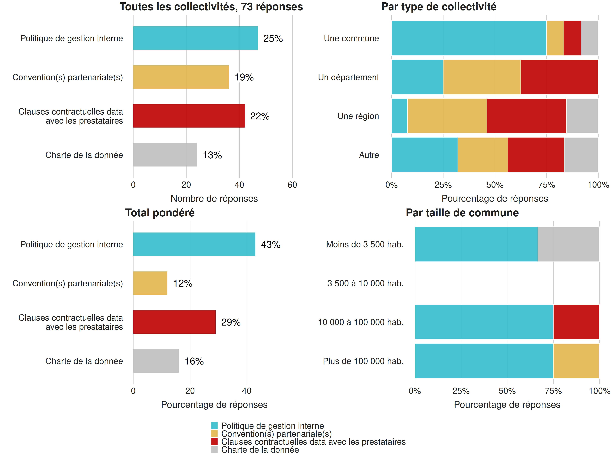
4.3 Votre structure a-t-elle adopté une charte éthique de la donnée ?
- Statistiques
| Votre structure a-t-elle adopté une charte éthique de la donnée ? | Je ne sais pas | Non, et l’élaboration d’une charte n’est pas prévue dans les 12 prochains mois | Non, mais elle prévoit d’en élaborer une dans les 12 prochains mois | Oui | Sans réponse |
|---|---|---|---|---|---|
| Total (191 réponses) | 22% | 45% | 25% | 8% | 0% |
| Total pondéré | 8% | 68% | 23% | 1% | 0% |
| Une commune | 17% | 57% | 23% | 3% | 0% |
| Communes de moins de 3 500 hab. | 33% | 44% | 22% | 0% | 0% |
| Communes de 3 500 à 10 000 hab. | 0% | 83% | 17% | 0% | 0% |
| Communes de 10 000 à 100 000 hab. | 10% | 60% | 30% | 0% | 0% |
| Communes de plus de 100 000 hab. | 20% | 40% | 20% | 20% | 0% |
| Une métropole | 11% | 28% | 50% | 11% | 0% |
| Un EPCI (hors métropole) | 18% | 52% | 27% | 3% | 0% |
| Un département | 28% | 44% | 16% | 12% | 0% |
| Une région | 30% | 0% | 60% | 10% | 0% |
| Autre | 25% | 48% | 17% | 9% | 0% |
- Visualisation
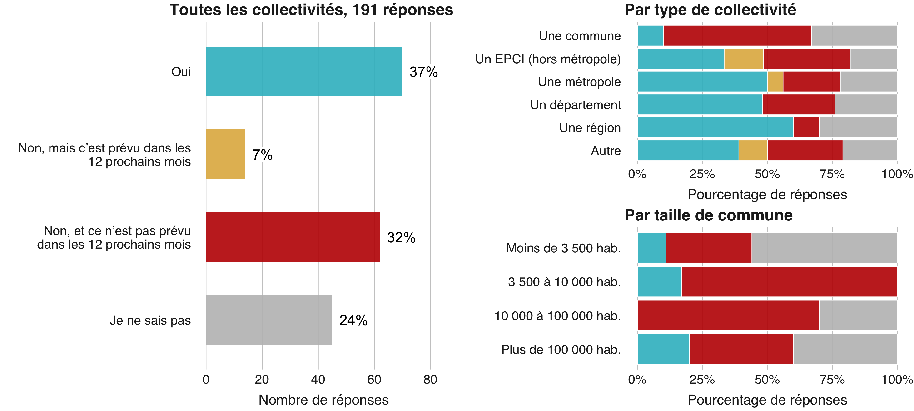
4.4 La structure a-t-elle associé des acteurs externes à la définition de ces règles de gouvernance ?
- Statistiques
| La structure a-t-elle associé des acteurs externes à la définition de ces règles de gouvernance ? | D’autres acteurs publics | Des acteurs privés | Des associations | Des citoyens | Je ne sais pas | Non | Sans réponse |
|---|---|---|---|---|---|---|---|
| Total (73 réponses) | 10% | 6% | 4% | 1% | 9% | 15% | 62% |
| Total pondéré | 2% | 15% | 1% | 0% | 34% | 49% | 0% |
| Une commune | 0% | 3% | 0% | 0% | 10% | 10% | 73% |
| Communes de moins de 3 500 hab. | 0% | 0% | 0% | 0% | 0% | 11% | 78% |
| Communes de 3 500 à 10 000 hab. | 0% | 0% | 0% | 0% | 0% | 0% | 100% |
| Communes de 10 000 à 100 000 hab. | 0% | 10% | 0% | 0% | 10% | 10% | 70% |
| Communes de plus de 100 000 hab. | 0% | 0% | 0% | 0% | 40% | 20% | 40% |
| Une métropole | 28% | 22% | 22% | 11% | 0% | 6% | 61% |
| Un EPCI (hors métropole) | 0% | 0% | 0% | 0% | 9% | 18% | 73% |
| Un département | 0% | 0% | 0% | 0% | 4% | 12% | 80% |
| Une région | 30% | 0% | 0% | 0% | 30% | 0% | 50% |
| Autre | 16% | 9% | 4% | 0% | 9% | 21% | 48% |
- Visualisation
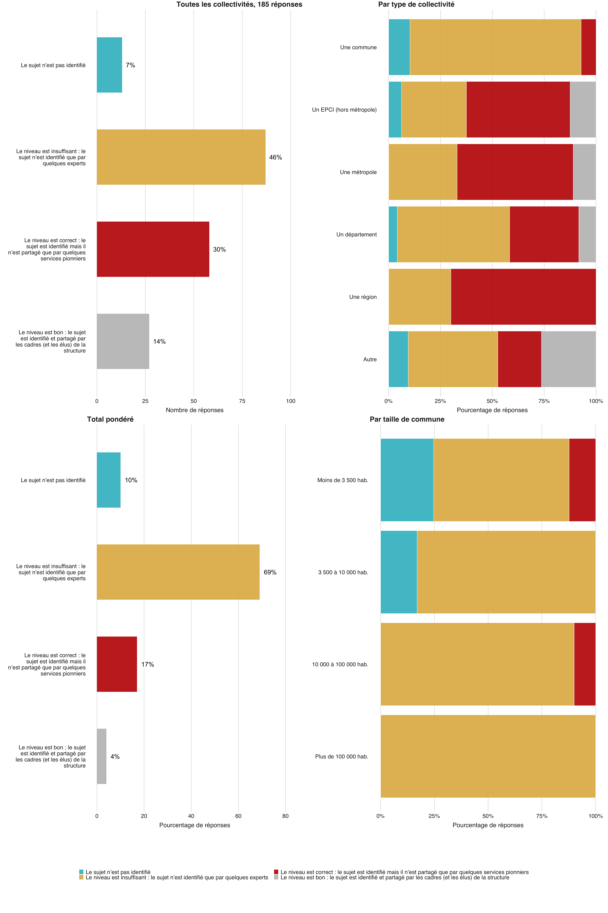
4.5 Votre structure a-t-elle mis en place des systèmes d’échanges et de partage de données avec des acteurs privés du territoire, ou prévoit-elle d’en mettre en place dans les douze prochains mois ?
Des plateformes générales de partage et d’accès aux données locales (ex : plateforme OpenDataSoft avec accès privés, plateforme Dawex…)
- Statistiques
| Votre structure a-t-elle mis en place des systèmes d’échanges et de partage de données avec des acteurs privés du territoire, ou prévoit-elle d’en mettre en place dans les douze prochains mois ? [Des plateformes générales de partage et d’accès aux données locales (ex : plateforme OpenDataSoft avec accès privés, plateforme Dawex…)] | Je ne sais pas | Non, et ce n’est pas prévu dans les 12 prochains mois | Non, mais c’est prévu dans les 12 prochains mois | Oui | Sans réponse |
|---|---|---|---|---|---|
| Total (191 réponses) | 15% | 31% | 10% | 44% | 0% |
| Total pondéré | 10% | 58% | 3% | 29% | 0% |
| Une commune | 30% | 47% | 3% | 20% | 0% |
| Communes de moins de 3 500 hab. | 56% | 33% | 11% | 0% | 0% |
| Communes de 3 500 à 10 000 hab. | 0% | 83% | 0% | 17% | 0% |
| Communes de 10 000 à 100 000 hab. | 30% | 50% | 0% | 20% | 0% |
| Communes de plus de 100 000 hab. | 20% | 20% | 0% | 60% | 0% |
| Une métropole | 0% | 11% | 28% | 61% | 0% |
| Un EPCI (hors métropole) | 12% | 24% | 9% | 55% | 0% |
| Un département | 16% | 20% | 8% | 56% | 0% |
| Une région | 0% | 10% | 30% | 60% | 0% |
| Autre | 16% | 39% | 7% | 39% | 0% |
- Visualisation
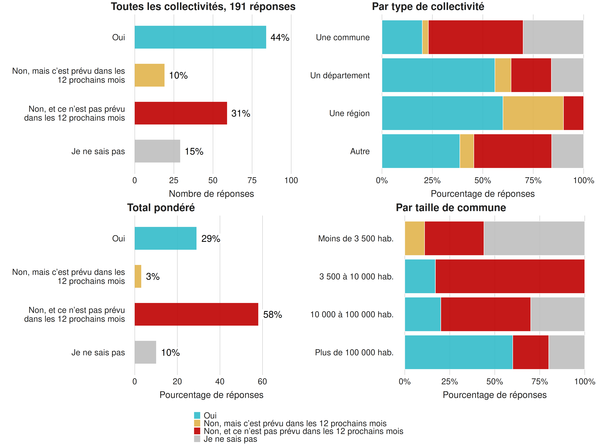
Des communications ponctuelles de données avec des partenaires/prestataires (par exemple communication de données foncières dans le cadre de la réalisation d’une étude ou d’une AMO)
- Statistiques
| Votre structure a-t-elle mis en place des systèmes d’échanges et de partage de données avec des acteurs privés du territoire, ou prévoit-elle d’en mettre en place dans les douze prochains mois ? [Des communications ponctuelles de données avec des partenaires/prestataires (par exemple communication de données foncières dans le cadre de la réalisation d’une étude ou d’une AMO) ] | Je ne sais pas | Non, et ce n’est pas prévu dans les 12 prochains mois | Non, mais c’est prévu dans les 12 prochains mois | Oui | Sans réponse |
|---|---|---|---|---|---|
| Total (191 réponses) | 15% | 21% | 6% | 58% | 0% |
| Total pondéré | 9% | 49% | 2% | 40% | 0% |
| Une commune | 23% | 40% | 7% | 30% | 0% |
| Communes de moins de 3 500 hab. | 44% | 22% | 11% | 22% | 0% |
| Communes de 3 500 à 10 000 hab. | 0% | 67% | 0% | 33% | 0% |
| Communes de 10 000 à 100 000 hab. | 30% | 50% | 10% | 10% | 0% |
| Communes de plus de 100 000 hab. | 0% | 20% | 0% | 80% | 0% |
| Une métropole | 6% | 6% | 6% | 83% | 0% |
| Un EPCI (hors métropole) | 9% | 21% | 0% | 70% | 0% |
| Un département | 16% | 16% | 0% | 68% | 0% |
| Une région | 20% | 0% | 10% | 70% | 0% |
| Autre | 15% | 23% | 9% | 53% | 0% |
- Visualisation
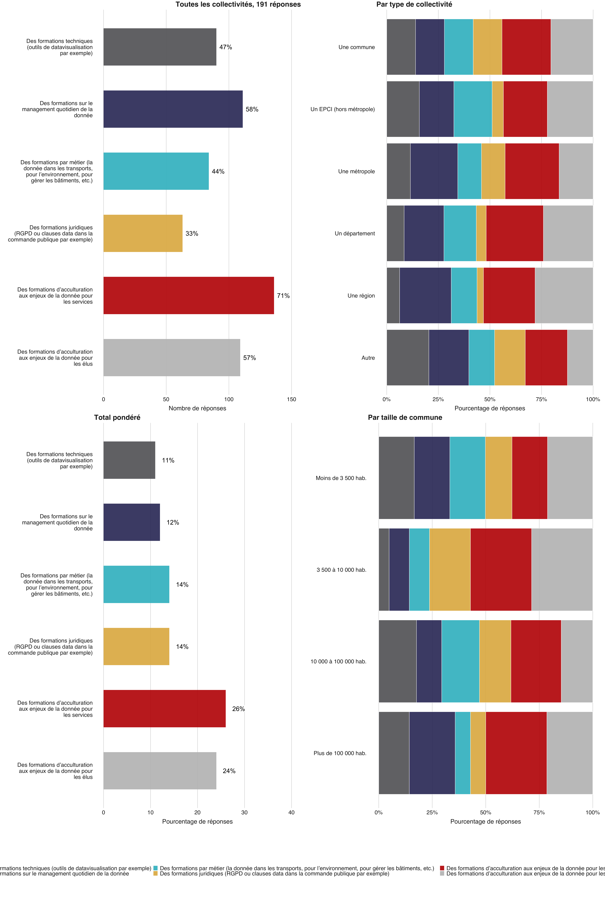
Des échanges de cas d’usage/bonnes pratiques concernant la gestion et la valorisation des données ou algorithmes
- Statistiques
| Votre structure a-t-elle mis en place des systèmes d’échanges et de partage de données avec des acteurs privés du territoire, ou prévoit-elle d’en mettre en place dans les douze prochains mois ? [Des échanges de cas d’usage/bonnes pratiques concernant la gestion et la valorisation des données ou algorithmes ] | Je ne sais pas | Non, et ce n’est pas prévu dans les 12 prochains mois | Non, mais c’est prévu dans les 12 prochains mois | Oui | Sans réponse |
|---|---|---|---|---|---|
| Total (191 réponses) | 24% | 32% | 7% | 37% | 0% |
| Total pondéré | 13% | 65% | 4% | 19% | 0% |
| Une commune | 33% | 57% | 0% | 10% | 0% |
| Communes de moins de 3 500 hab. | 56% | 33% | 0% | 11% | 0% |
| Communes de 3 500 à 10 000 hab. | 0% | 83% | 0% | 17% | 0% |
| Communes de 10 000 à 100 000 hab. | 30% | 70% | 0% | 0% | 0% |
| Communes de plus de 100 000 hab. | 40% | 40% | 0% | 20% | 0% |
| Une métropole | 22% | 22% | 6% | 50% | 0% |
| Un EPCI (hors métropole) | 18% | 33% | 15% | 33% | 0% |
| Un département | 24% | 28% | 0% | 48% | 0% |
| Une région | 30% | 10% | 0% | 60% | 0% |
| Autre | 21% | 29% | 11% | 39% | 0% |
- Visualisation
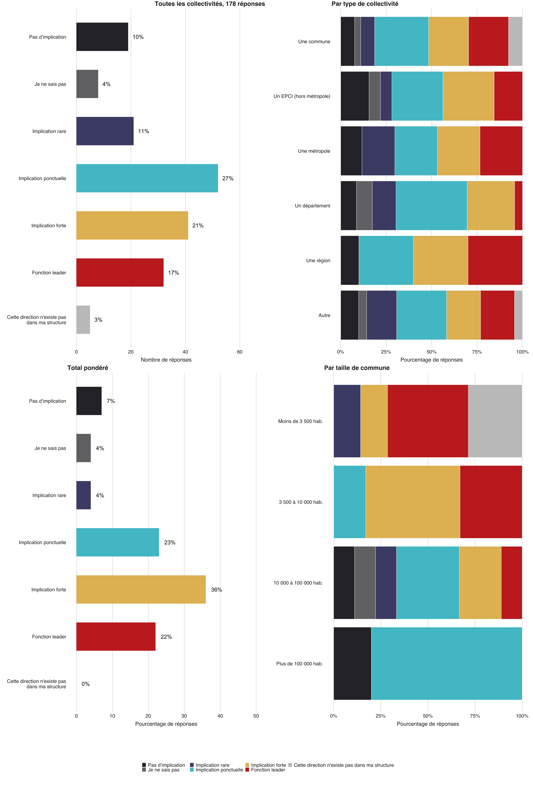
5 Le management de la donnée
5.2 Quels sont, selon vous, les principaux obstacles à la diffusion d’outils innovants en matière de gestion des données ?
- Statistiques
| Quels sont, selon vous, les principaux obstacles à la diffusion d’outils innovants en matière de gestion des données ? | Le manque de compétences | Le manque de moyens financiers | Le manque de temps | Le peu de formations disponibles | Les difficultés de recrutement | Sans réponse |
|---|---|---|---|---|---|---|
| Total (191 réponses) | 64% | 41% | 61% | 29% | 24% | 0% |
| Total pondéré | 30% | 17% | 25% | 15% | 13% | 0% |
| Une commune | 70% | 37% | 60% | 30% | 17% | 0% |
| Communes de moins de 3 500 hab. | 56% | 22% | 67% | 22% | 0% | 0% |
| Communes de 3 500 à 10 000 hab. | 83% | 33% | 67% | 33% | 33% | 0% |
| Communes de 10 000 à 100 000 hab. | 80% | 50% | 50% | 50% | 30% | 0% |
| Communes de plus de 100 000 hab. | 60% | 40% | 60% | 0% | 0% | 0% |
| Une métropole | 72% | 17% | 89% | 39% | 44% | 0% |
| Un EPCI (hors métropole) | 58% | 48% | 58% | 39% | 33% | 0% |
| Un département | 52% | 36% | 64% | 16% | 24% | 0% |
| Une région | 90% | 10% | 40% | 40% | 20% | 0% |
| Autre | 63% | 51% | 57% | 25% | 19% | 0% |
- Visualisation
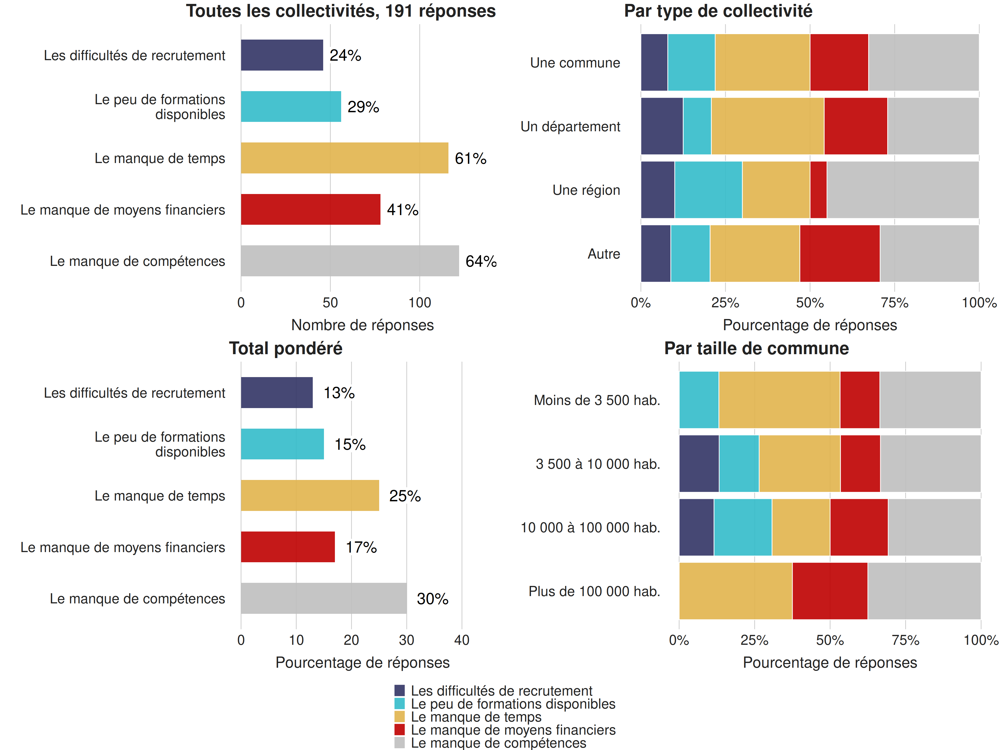
5.3 En matière de formation sur la gestion des données, quels sont, selon vous, les besoins prioritaires pour votre structure ?
- Statistiques
| En matière de formation sur la gestion des données, quels sont, selon vous, les besoins prioritaires pour votre structure ? | Des formations d’acculturation aux enjeux de la donnée pour les élus | Des formations d’acculturation aux enjeux de la donnée pour les services | Des formations juridiques (RGPD ou clauses data dans la commande publique par exemple) | Des formations par métier (la donnée dans les transports, pour l’environnement, pour gérer les bâtiments, etc.) | Des formations sur le management quotidien de la donnée | Des formations techniques (outils de datavisualisation par exemple) | Sans réponse |
|---|---|---|---|---|---|---|---|
| Total (191 réponses) | 57% | 71% | 33% | 44% | 58% | 47% | 0% |
| Total pondéré | 24% | 26% | 14% | 14% | 12% | 11% | 0% |
| Une commune | 63% | 73% | 43% | 43% | 43% | 43% | 0% |
| Communes de moins de 3 500 hab. | 56% | 44% | 33% | 44% | 44% | 44% | 0% |
| Communes de 3 500 à 10 000 hab. | 100% | 100% | 67% | 33% | 33% | 17% | 0% |
| Communes de 10 000 à 100 000 hab. | 50% | 80% | 50% | 60% | 40% | 60% | 0% |
| Communes de plus de 100 000 hab. | 60% | 80% | 20% | 20% | 60% | 40% | 0% |
| Une métropole | 56% | 89% | 39% | 39% | 78% | 39% | 0% |
| Un EPCI (hors métropole) | 73% | 70% | 18% | 61% | 55% | 52% | 0% |
| Un département | 80% | 92% | 16% | 52% | 64% | 28% | 0% |
| Une région | 90% | 80% | 10% | 40% | 80% | 20% | 0% |
| Autre | 36% | 59% | 43% | 36% | 56% | 59% | 0% |
- Visualisation
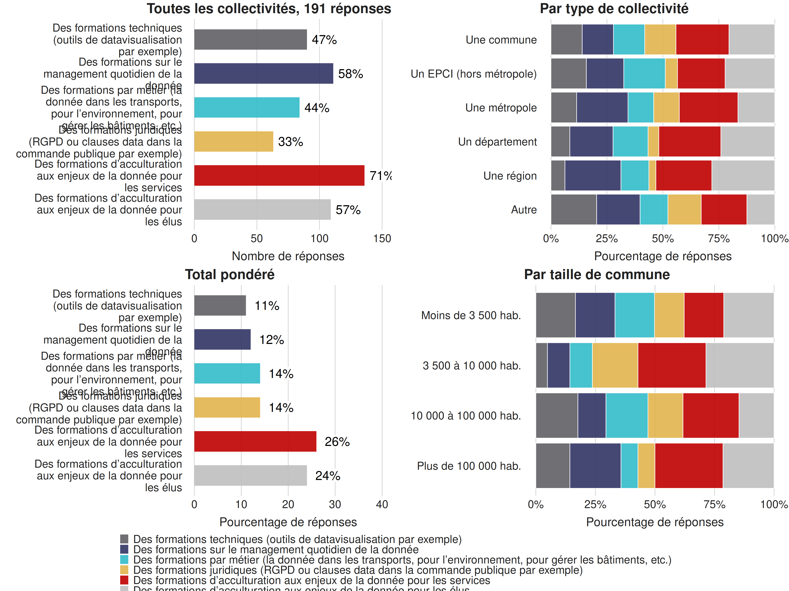
5.4 Pour chacune des directions suivantes, pouvez-vous nous dire si leur implication en matière de gestion des données est
Direction générale
- Statistiques
| Pour chacune des directions suivantes, pouvez-vous nous dire si leur implication en matière de gestion des données est : [Direction générale] | Cette direction n’existe pas dans ma structure | Fonction leader | Implication forte | Implication ponctuelle | Implication rare | Je ne sais pas | Pas d’implication | Sans réponse |
|---|---|---|---|---|---|---|---|---|
| Total (178 réponses) | 3% | 17% | 21% | 27% | 11% | 4% | 10% | 7% |
| Total pondéré | 0% | 22% | 36% | 23% | 4% | 4% | 7% | 3% |
| Une commune | 7% | 20% | 20% | 27% | 7% | 3% | 7% | 10% |
| Communes de moins de 3 500 hab. | 22% | 33% | 11% | 0% | 11% | 0% | 0% | 22% |
| Communes de 3 500 à 10 000 hab. | 0% | 33% | 50% | 17% | 0% | 0% | 0% | 0% |
| Communes de 10 000 à 100 000 hab. | 0% | 10% | 20% | 30% | 10% | 10% | 10% | 10% |
| Communes de plus de 100 000 hab. | 0% | 0% | 0% | 80% | 0% | 0% | 20% | 0% |
| Une métropole | 0% | 22% | 22% | 22% | 17% | 0% | 11% | 6% |
| Un EPCI (hors métropole) | 0% | 15% | 27% | 27% | 6% | 6% | 15% | 3% |
| Un département | 0% | 4% | 24% | 36% | 12% | 8% | 8% | 8% |
| Une région | 0% | 30% | 30% | 30% | 0% | 0% | 10% | 0% |
| Autre | 4% | 17% | 17% | 25% | 15% | 4% | 9% | 8% |
- Visualisation
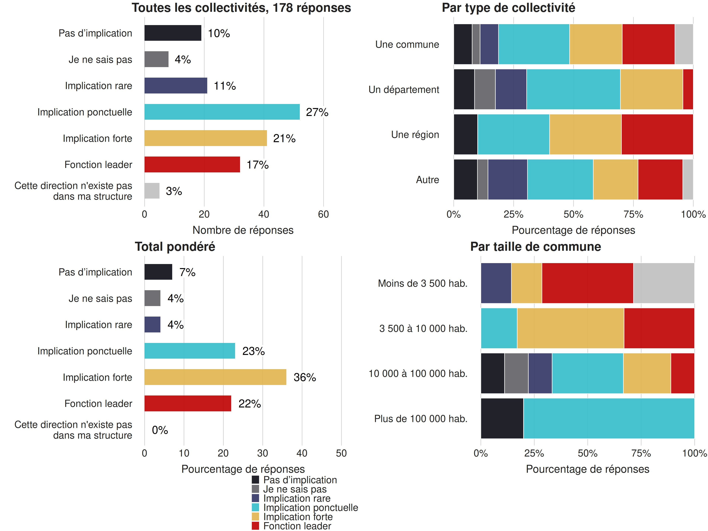
Direction Informatique
- Statistiques
| Pour chacune des directions suivantes, pouvez-vous nous dire si leur implication en matière de gestion des données est : [Direction Informatique] | Cette direction n’existe pas dans ma structure | Fonction leader | Implication forte | Implication ponctuelle | Implication rare | Je ne sais pas | Pas d’implication | Sans réponse |
|---|---|---|---|---|---|---|---|---|
| Total (175 réponses) | 10% | 29% | 31% | 13% | 5% | 1% | 2% | 8% |
| Total pondéré | 20% | 20% | 35% | 11% | 1% | 2% | 1% | 11% |
| Une commune | 23% | 23% | 33% | 7% | 7% | 0% | 0% | 7% |
| Communes de moins de 3 500 hab. | 44% | 33% | 11% | 0% | 0% | 0% | 0% | 11% |
| Communes de 3 500 à 10 000 hab. | 33% | 17% | 33% | 0% | 0% | 0% | 0% | 17% |
| Communes de 10 000 à 100 000 hab. | 10% | 20% | 50% | 20% | 0% | 0% | 0% | 0% |
| Communes de plus de 100 000 hab. | 0% | 20% | 40% | 0% | 40% | 0% | 0% | 0% |
| Une métropole | 0% | 50% | 28% | 17% | 0% | 0% | 0% | 6% |
| Un EPCI (hors métropole) | 6% | 24% | 24% | 24% | 3% | 6% | 3% | 9% |
| Un département | 0% | 32% | 52% | 12% | 0% | 0% | 0% | 4% |
| Une région | 0% | 30% | 20% | 40% | 0% | 0% | 0% | 10% |
| Autre | 15% | 28% | 28% | 7% | 8% | 0% | 4% | 11% |
- Visualisation
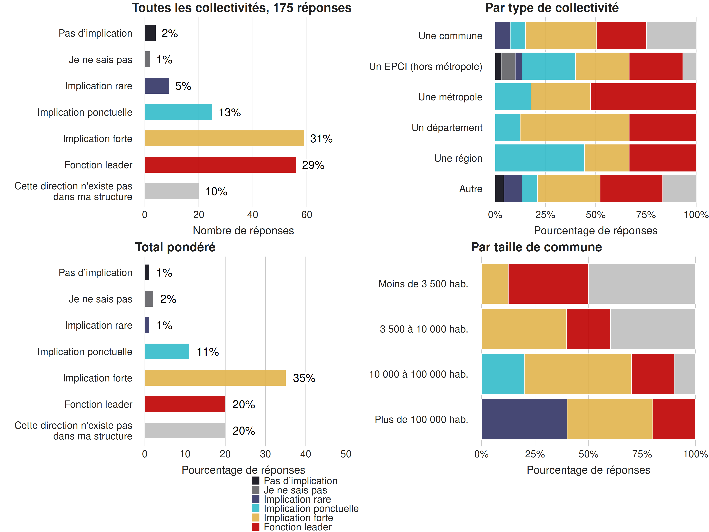
Service d’information géographique (SIG)]
- Statistiques
| Pour chacune des directions suivantes, pouvez-vous nous dire si leur implication en matière de gestion des données est : [Service d’information géographique (SIG) | Cette direction n’existe pas dans ma structure | Fonction leader | Implication forte | Implication ponctuelle | Implication rare | Je ne sais pas | Pas d’implication | Sans réponse |
|---|---|---|---|---|---|---|---|---|
| Total (173 réponses) | 15% | 34% | 30% | 7% | 2% | 2% | 1% | 9% |
| Total pondéré | 35% | 13% | 17% | 16% | 1% | 3% | 4% | 10% |
| Une commune | 30% | 13% | 17% | 10% | 3% | 3% | 7% | 17% |
| Communes de moins de 3 500 hab. | 22% | 22% | 11% | 0% | 0% | 0% | 0% | 44% |
| Communes de 3 500 à 10 000 hab. | 50% | 0% | 17% | 17% | 0% | 0% | 0% | 17% |
| Communes de 10 000 à 100 000 hab. | 40% | 10% | 0% | 20% | 0% | 10% | 20% | 0% |
| Communes de plus de 100 000 hab. | 0% | 20% | 60% | 0% | 20% | 0% | 0% | 0% |
| Une métropole | 0% | 56% | 33% | 6% | 0% | 0% | 0% | 6% |
| Un EPCI (hors métropole) | 9% | 36% | 27% | 15% | 3% | 3% | 0% | 6% |
| Un département | 4% | 32% | 56% | 4% | 4% | 0% | 0% | 0% |
| Une région | 0% | 70% | 30% | 0% | 0% | 0% | 0% | 0% |
| Autre | 21% | 32% | 27% | 4% | 0% | 3% | 0% | 13% |
- Visualisation
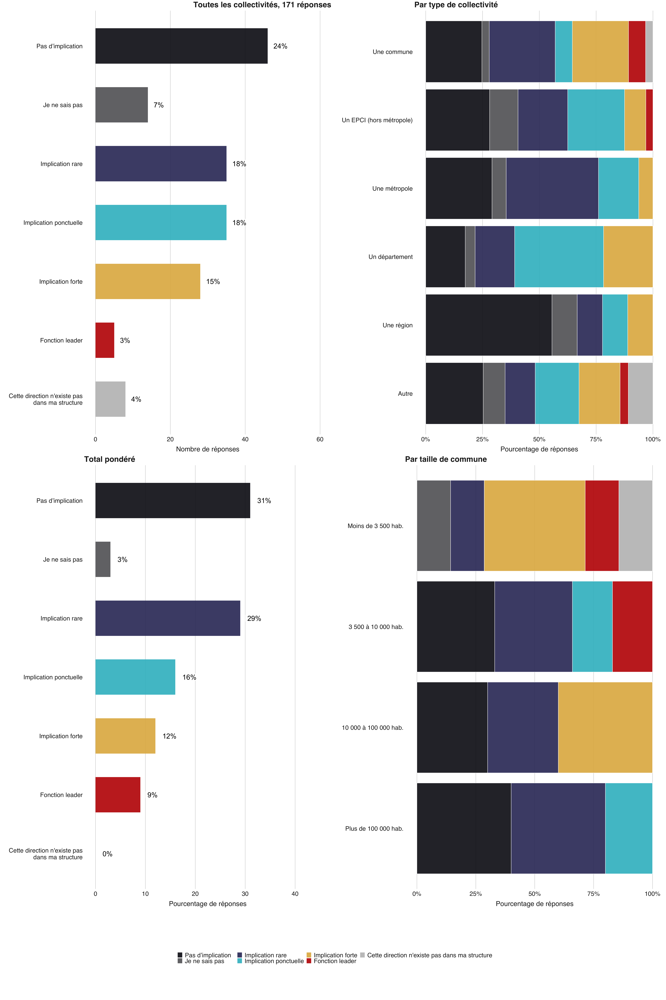
Archives
- Statistiques
| Pour chacune des directions suivantes, pouvez-vous nous dire si leur implication en matière de gestion des données est : [Archives] | Cette direction n’existe pas dans ma structure | Fonction leader | Implication forte | Implication ponctuelle | Implication rare | Je ne sais pas | Pas d’implication | Sans réponse |
|---|---|---|---|---|---|---|---|---|
| Total (156 réponses) | 18% | 5% | 18% | 11% | 10% | 8% | 12% | 18% |
| Total pondéré | 30% | 3% | 13% | 3% | 2% | 6% | 22% | 22% |
| Une commune | 23% | 7% | 17% | 3% | 0% | 10% | 17% | 23% |
| Communes de moins de 3 500 hab. | 22% | 11% | 22% | 0% | 0% | 0% | 0% | 44% |
| Communes de 3 500 à 10 000 hab. | 50% | 0% | 0% | 0% | 0% | 0% | 17% | 33% |
| Communes de 10 000 à 100 000 hab. | 20% | 0% | 10% | 0% | 0% | 20% | 40% | 10% |
| Communes de plus de 100 000 hab. | 0% | 20% | 40% | 20% | 0% | 20% | 0% | 0% |
| Une métropole | 0% | 6% | 28% | 11% | 33% | 6% | 11% | 6% |
| Un EPCI (hors métropole) | 6% | 9% | 33% | 9% | 6% | 6% | 18% | 12% |
| Un département | 0% | 8% | 36% | 16% | 12% | 8% | 4% | 16% |
| Une région | 0% | 0% | 10% | 20% | 20% | 20% | 20% | 10% |
| Autre | 33% | 3% | 4% | 12% | 8% | 7% | 9% | 24% |
- Visualisation
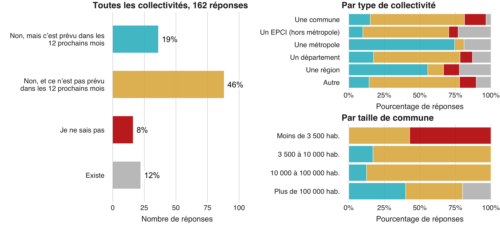
Communication
- Statistiques
| Pour chacune des directions suivantes, pouvez-vous nous dire si leur implication en matière de gestion des données est : [Communication] | Cette direction n’existe pas dans ma structure | Fonction leader | Implication forte | Implication ponctuelle | Implication rare | Je ne sais pas | Pas d’implication | Sans réponse |
|---|---|---|---|---|---|---|---|---|
| Total (170 réponses) | 6% | 4% | 9% | 29% | 9% | 11% | 20% | 11% |
| Total pondéré | 0% | 2% | 35% | 11% | 15% | 4% | 23% | 11% |
| Une commune | 7% | 3% | 30% | 17% | 10% | 7% | 17% | 10% |
| Communes de moins de 3 500 hab. | 22% | 11% | 22% | 11% | 0% | 11% | 0% | 22% |
| Communes de 3 500 à 10 000 hab. | 0% | 0% | 50% | 0% | 17% | 0% | 17% | 17% |
| Communes de 10 000 à 100 000 hab. | 0% | 0% | 40% | 20% | 10% | 0% | 30% | 0% |
| Communes de plus de 100 000 hab. | 0% | 0% | 0% | 40% | 20% | 20% | 20% | 0% |
| Une métropole | 0% | 0% | 6% | 44% | 11% | 17% | 17% | 6% |
| Un EPCI (hors métropole) | 0% | 6% | 9% | 21% | 15% | 12% | 27% | 9% |
| Un département | 0% | 0% | 4% | 28% | 12% | 16% | 24% | 16% |
| Une région | 0% | 10% | 0% | 30% | 20% | 10% | 20% | 10% |
| Autre | 13% | 4% | 5% | 33% | 4% | 9% | 19% | 12% |
- Visualisation
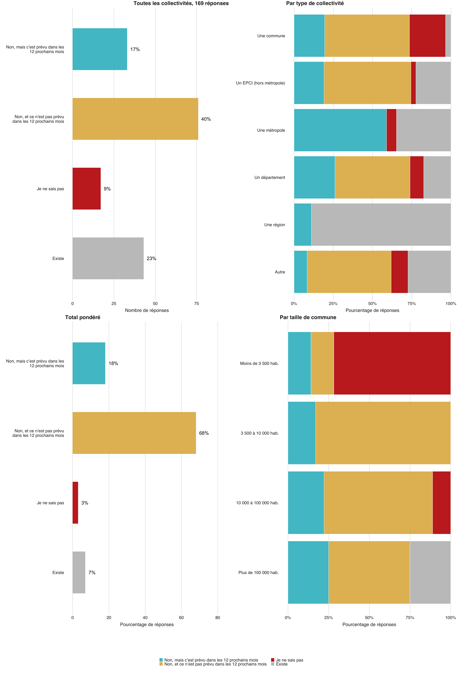
Services techniques
- Statistiques
| Pour chacune des directions suivantes, pouvez-vous nous dire si leur implication en matière de gestion des données est : [Services techniques] | Cette direction n’existe pas dans ma structure | Fonction leader | Implication forte | Implication ponctuelle | Implication rare | Je ne sais pas | Pas d’implication | Sans réponse |
|---|---|---|---|---|---|---|---|---|
| Total (167 réponses) | 8% | 4% | 12% | 29% | 10% | 6% | 18% | 13% |
| Total pondéré | 0% | 9% | 5% | 40% | 15% | 2% | 25% | 3% |
| Une commune | 3% | 7% | 3% | 33% | 7% | 0% | 37% | 10% |
| Communes de moins de 3 500 hab. | 11% | 11% | 11% | 22% | 0% | 0% | 22% | 22% |
| Communes de 3 500 à 10 000 hab. | 0% | 17% | 0% | 50% | 17% | 0% | 17% | 0% |
| Communes de 10 000 à 100 000 hab. | 0% | 0% | 0% | 30% | 10% | 0% | 50% | 10% |
| Communes de plus de 100 000 hab. | 0% | 0% | 0% | 40% | 0% | 0% | 60% | 0% |
| Une métropole | 0% | 0% | 22% | 56% | 6% | 6% | 6% | 6% |
| Un EPCI (hors métropole) | 0% | 3% | 18% | 33% | 18% | 6% | 18% | 3% |
| Un département | 8% | 0% | 12% | 24% | 12% | 8% | 24% | 12% |
| Une région | 10% | 0% | 10% | 20% | 10% | 20% | 10% | 20% |
| Autre | 16% | 5% | 11% | 21% | 9% | 7% | 12% | 19% |
- Visualisation
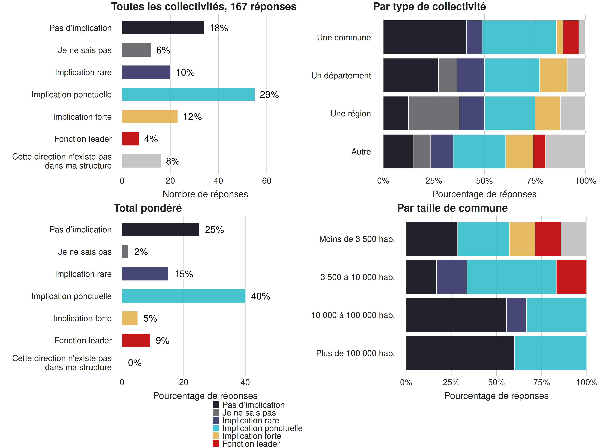
Ressources humaines
- Statistiques
| Pour chacune des directions suivantes, pouvez-vous nous dire si leur implication en matière de gestion des données est : [Ressources humaines] | Cette direction n’existe pas dans ma structure | Fonction leader | Implication forte | Implication ponctuelle | Implication rare | Je ne sais pas | Pas d’implication | Sans réponse |
|---|---|---|---|---|---|---|---|---|
| Total (171 réponses) | 4% | 3% | 15% | 18% | 18% | 7% | 24% | 10% |
| Total pondéré | 0% | 9% | 12% | 16% | 29% | 3% | 31% | 1% |
| Une commune | 3% | 7% | 23% | 7% | 27% | 3% | 23% | 7% |
| Communes de moins de 3 500 hab. | 11% | 11% | 33% | 0% | 11% | 11% | 0% | 22% |
| Communes de 3 500 à 10 000 hab. | 0% | 17% | 0% | 17% | 33% | 0% | 33% | 0% |
| Communes de 10 000 à 100 000 hab. | 0% | 0% | 40% | 0% | 30% | 0% | 30% | 0% |
| Communes de plus de 100 000 hab. | 0% | 0% | 0% | 20% | 40% | 0% | 40% | 0% |
| Une métropole | 0% | 0% | 6% | 17% | 39% | 6% | 28% | 6% |
| Un EPCI (hors métropole) | 0% | 3% | 9% | 24% | 21% | 12% | 27% | 3% |
| Un département | 0% | 0% | 20% | 36% | 16% | 4% | 16% | 8% |
| Une région | 0% | 0% | 10% | 10% | 10% | 10% | 50% | 10% |
| Autre | 9% | 3% | 15% | 16% | 11% | 8% | 21% | 17% |
- Visualisation
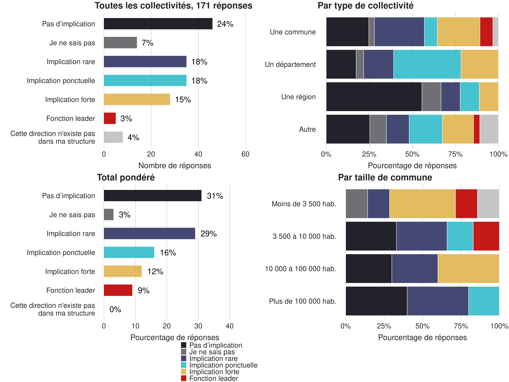
5.5 Dans votre organisation, ces fonctions consacrées à la donnée existent-elles ou seront-elles créées dans les douze prochains mois ?
Comité data
- Statistiques
| Dans votre organisation, ces fonctions consacrées à la donnée existent-elles ou seront-elles créées dans les douze prochains mois ? [Comité data] | Existe | Je ne sais pas | Non, et ce n’est pas prévu dans les 12 prochains mois | Non, mais c’est prévu dans les 12 prochains mois | Sans réponse |
|---|---|---|---|---|---|
| Total (162 réponses) | 12% | 8% | 46% | 19% | 15% |
| Total pondéré | 6% | 2% | 71% | 14% | 7% |
| Une commune | 3% | 13% | 57% | 13% | 13% |
| Communes de moins de 3 500 hab. | 0% | 44% | 33% | 0% | 22% |
| Communes de 3 500 à 10 000 hab. | 0% | 0% | 83% | 17% | 0% |
| Communes de 10 000 à 100 000 hab. | 0% | 0% | 70% | 10% | 20% |
| Communes de plus de 100 000 hab. | 20% | 0% | 40% | 40% | 0% |
| Une métropole | 17% | 0% | 6% | 67% | 11% |
| Un EPCI (hors métropole) | 21% | 6% | 55% | 9% | 9% |
| Un département | 12% | 8% | 56% | 16% | 8% |
| Une région | 20% | 10% | 10% | 50% | 10% |
| Autre | 8% | 9% | 49% | 11% | 23% |
- Visualisation
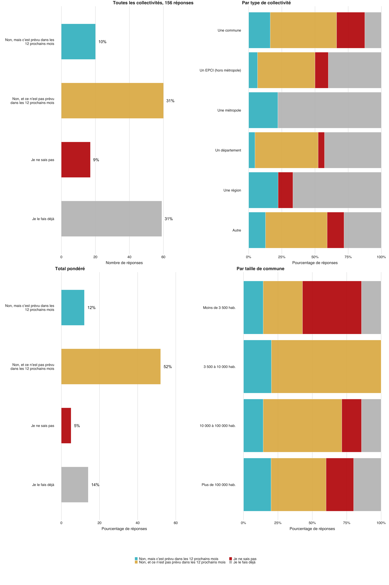
Réseau de référent(e)s data
- Statistiques
| Dans votre organisation, ces fonctions consacrées à la donnée existent-elles ou seront-elles créées dans les douze prochains mois ? [Réseau de référent(e)s data] | Existe | Je ne sais pas | Non, et ce n’est pas prévu dans les 12 prochains mois | Non, mais c’est prévu dans les 12 prochains mois | Sans réponse |
|---|---|---|---|---|---|
| Total (169 réponses) | 23% | 9% | 40% | 17% | 12% |
| Total pondéré | 7% | 3% | 68% | 18% | 4% |
| Une commune | 3% | 20% | 47% | 17% | 13% |
| Communes de moins de 3 500 hab. | 0% | 56% | 11% | 11% | 22% |
| Communes de 3 500 à 10 000 hab. | 0% | 0% | 83% | 17% | 0% |
| Communes de 10 000 à 100 000 hab. | 0% | 10% | 60% | 20% | 10% |
| Communes de plus de 100 000 hab. | 20% | 0% | 40% | 20% | 20% |
| Une métropole | 33% | 6% | 0% | 56% | 6% |
| Un EPCI (hors métropole) | 21% | 3% | 52% | 18% | 6% |
| Un département | 16% | 8% | 44% | 24% | 8% |
| Une région | 80% | 0% | 0% | 10% | 10% |
| Autre | 23% | 9% | 45% | 7% | 16% |
- Visualisation
Direction de la donnée
- Statistiques
| Dans votre organisation, ces fonctions consacrées à la donnée existent-elles ou seront-elles créées dans les douze prochains mois ? [Direction de la donnée] | Existe | Je ne sais pas | Non, et ce n’est pas prévu dans les 12 prochains mois | Non, mais c’est prévu dans les 12 prochains mois | Sans réponse |
|---|---|---|---|---|---|
| Total (161 réponses) | 13% | 10% | 51% | 10% | 16% |
| Total pondéré | 3% | 3% | 75% | 15% | 4% |
| Une commune | 0% | 13% | 57% | 17% | 13% |
| Communes de moins de 3 500 hab. | 0% | 44% | 22% | 0% | 33% |
| Communes de 3 500 à 10 000 hab. | 0% | 0% | 83% | 17% | 0% |
| Communes de 10 000 à 100 000 hab. | 0% | 0% | 70% | 20% | 10% |
| Communes de plus de 100 000 hab. | 0% | 0% | 60% | 40% | 0% |
| Une métropole | 22% | 11% | 28% | 22% | 17% |
| Un EPCI (hors métropole) | 9% | 9% | 67% | 9% | 6% |
| Un département | 8% | 8% | 72% | 4% | 8% |
| Une région | 30% | 10% | 30% | 30% | 0% |
| Autre | 17% | 9% | 43% | 5% | 25% |
- Visualisation
Chief data officer / administrateur général des données
- Statistiques
| Dans votre organisation, ces fonctions consacrées à la donnée existent-elles ou seront-elles créées dans les douze prochains mois ? [Chief data officer / administrateur général des données] | Existe | Je ne sais pas | Non, et ce n’est pas prévu dans les 12 prochains mois | Non, mais c’est prévu dans les 12 prochains mois | Sans réponse |
|---|---|---|---|---|---|
| Total (165 réponses) | 24% | 10% | 42% | 10% | 14% |
| Total pondéré | 8% | 5% | 66% | 15% | 6% |
| Une commune | 13% | 17% | 43% | 7% | 20% |
| Communes de moins de 3 500 hab. | 0% | 44% | 22% | 0% | 33% |
| Communes de 3 500 à 10 000 hab. | 0% | 0% | 83% | 17% | 0% |
| Communes de 10 000 à 100 000 hab. | 10% | 10% | 50% | 10% | 20% |
| Communes de plus de 100 000 hab. | 60% | 0% | 20% | 0% | 20% |
| Une métropole | 33% | 6% | 33% | 17% | 11% |
| Un EPCI (hors métropole) | 18% | 9% | 52% | 18% | 3% |
| Un département | 24% | 8% | 56% | 4% | 8% |
| Une région | 20% | 10% | 40% | 30% | 0% |
| Autre | 28% | 9% | 36% | 7% | 20% |
- Visualisation
5.6 Avec lesquels de ces partenaires potentiels collaborez-vous, ou prévoyez-vous de le faire, au sujet des données ?
Un Assistant à la maîtrise d’ouvrage (AMO)
- Statistiques
| Avec lesquels de ces partenaires potentiels collaborez-vous, ou prévoyez-vous de le faire, au sujet des données ? [Un Assistant à la maîtrise d’ouvrage (AMO) ] | Je le fais déjà | Je ne sais pas | Non, et ce n’est pas prévu dans les 12 prochains mois | Non, mais c’est prévu dans les 12 prochains mois | Sans réponse |
|---|---|---|---|---|---|
| Total (156 réponses) | 31% | 9% | 31% | 10% | 18% |
| Total pondéré | 14% | 5% | 52% | 12% | 17% |
| Une commune | 10% | 17% | 40% | 13% | 20% |
| Communes de moins de 3 500 hab. | 11% | 33% | 22% | 11% | 22% |
| Communes de 3 500 à 10 000 hab. | 0% | 0% | 67% | 17% | 17% |
| Communes de 10 000 à 100 000 hab. | 10% | 10% | 40% | 10% | 30% |
| Communes de plus de 100 000 hab. | 20% | 20% | 40% | 20% | 0% |
| Une métropole | 78% | 0% | 0% | 22% | 0% |
| Un EPCI (hors métropole) | 36% | 9% | 39% | 6% | 9% |
| Un département | 36% | 4% | 40% | 4% | 16% |
| Une région | 60% | 10% | 0% | 20% | 10% |
| Autre | 20% | 9% | 33% | 9% | 28% |
- Visualisation
Un prestataire informatique
- Statistiques
| Avec lesquels de ces partenaires potentiels collaborez-vous, ou prévoyez-vous de le faire, au sujet des données ? [Un prestataire informatique] | Je le fais déjà | Je ne sais pas | Non, et ce n’est pas prévu dans les 12 prochains mois | Non, mais c’est prévu dans les 12 prochains mois | Sans réponse |
|---|---|---|---|---|---|
| Total (157 réponses) | 45% | 8% | 26% | 4% | 18% |
| Total pondéré | 40% | 5% | 37% | 10% | 8% |
| Une commune | 40% | 13% | 23% | 3% | 20% |
| Communes de moins de 3 500 hab. | 33% | 22% | 11% | 0% | 33% |
| Communes de 3 500 à 10 000 hab. | 33% | 0% | 50% | 17% | 0% |
| Communes de 10 000 à 100 000 hab. | 50% | 10% | 20% | 0% | 20% |
| Communes de plus de 100 000 hab. | 40% | 20% | 20% | 0% | 20% |
| Une métropole | 61% | 0% | 28% | 0% | 11% |
| Un EPCI (hors métropole) | 42% | 9% | 30% | 6% | 12% |
| Un département | 36% | 8% | 32% | 4% | 20% |
| Une région | 80% | 10% | 0% | 0% | 10% |
| Autre | 43% | 7% | 25% | 4% | 21% |
- Visualisation
Un délégataire de service public
- Statistiques
| Avec lesquels de ces partenaires potentiels collaborez-vous, ou prévoyez-vous de le faire, au sujet des données ? [Un délégataire de service public] | Je le fais déjà | Je ne sais pas | Non, et ce n’est pas prévu dans les 12 prochains mois | Non, mais c’est prévu dans les 12 prochains mois | Sans réponse |
|---|---|---|---|---|---|
| Total (145 réponses) | 24% | 12% | 38% | 2% | 24% |
| Total pondéré | 13% | 7% | 58% | 0% | 22% |
| Une commune | 10% | 17% | 40% | 0% | 33% |
| Communes de moins de 3 500 hab. | 11% | 22% | 33% | 0% | 33% |
| Communes de 3 500 à 10 000 hab. | 0% | 0% | 83% | 0% | 17% |
| Communes de 10 000 à 100 000 hab. | 10% | 20% | 20% | 0% | 50% |
| Communes de plus de 100 000 hab. | 20% | 20% | 40% | 0% | 20% |
| Une métropole | 72% | 6% | 11% | 0% | 11% |
| Un EPCI (hors métropole) | 36% | 6% | 48% | 0% | 9% |
| Un département | 12% | 16% | 48% | 0% | 24% |
| Une région | 10% | 30% | 20% | 10% | 30% |
| Autre | 19% | 9% | 39% | 4% | 29% |
- Visualisation

Un opérateur public de service numérique (OPSN)
- Statistiques
| Avec lesquels de ces partenaires potentiels collaborez-vous, ou prévoyez-vous de le faire, au sujet des données ? [Un opérateur public de service numérique (OPSN)] | Je le fais déjà | Je ne sais pas | Non, et ce n’est pas prévu dans les 12 prochains mois | Non, mais c’est prévu dans les 12 prochains mois | Sans réponse |
|---|---|---|---|---|---|
| Total (135 réponses) | 10% | 17% | 40% | 3% | 29% |
| Total pondéré | 4% | 9% | 64% | 2% | 22% |
| Une commune | 3% | 23% | 47% | 0% | 27% |
| Communes de moins de 3 500 hab. | 11% | 33% | 33% | 0% | 22% |
| Communes de 3 500 à 10 000 hab. | 0% | 0% | 83% | 0% | 17% |
| Communes de 10 000 à 100 000 hab. | 0% | 20% | 40% | 0% | 40% |
| Communes de plus de 100 000 hab. | 0% | 40% | 40% | 0% | 20% |
| Une métropole | 6% | 22% | 33% | 6% | 33% |
| Un EPCI (hors métropole) | 12% | 15% | 52% | 6% | 15% |
| Un département | 12% | 16% | 48% | 0% | 24% |
| Une région | 0% | 40% | 10% | 0% | 50% |
| Autre | 15% | 12% | 36% | 3% | 35% |
- Visualisation
Une plateforme régionale d’information géographique
- Statistiques
| Avec lesquels de ces partenaires potentiels collaborez-vous, ou prévoyez-vous de le faire, au sujet des données ? [Une plateforme régionale d’information géographique] | Je le fais déjà | Je ne sais pas | Non, et ce n’est pas prévu dans les 12 prochains mois | Non, mais c’est prévu dans les 12 prochains mois | Sans réponse |
|---|---|---|---|---|---|
| Total (157 réponses) | 47% | 11% | 19% | 6% | 18% |
| Total pondéré | 26% | 18% | 28% | 9% | 19% |
| Une commune | 20% | 33% | 17% | 7% | 23% |
| Communes de moins de 3 500 hab. | 11% | 56% | 11% | 0% | 22% |
| Communes de 3 500 à 10 000 hab. | 17% | 17% | 33% | 17% | 17% |
| Communes de 10 000 à 100 000 hab. | 20% | 30% | 10% | 0% | 40% |
| Communes de plus de 100 000 hab. | 40% | 20% | 20% | 20% | 0% |
| Une métropole | 78% | 0% | 6% | 11% | 6% |
| Un EPCI (hors métropole) | 42% | 12% | 33% | 3% | 9% |
| Un département | 60% | 0% | 16% | 4% | 20% |
| Une région | 90% | 0% | 0% | 0% | 10% |
| Autre | 41% | 9% | 20% | 7% | 23% |
- Visualisation
Un opérateur numérique
- Statistiques
| Avec lesquels de ces partenaires potentiels collaborez-vous, ou prévoyez-vous de le faire, au sujet des données ? [Un opérateur numérique] | Je le fais déjà | Je ne sais pas | Non, et ce n’est pas prévu dans les 12 prochains mois | Non, mais c’est prévu dans les 12 prochains mois | Sans réponse |
|---|---|---|---|---|---|
| Total (126 réponses) | 15% | 14% | 35% | 3% | 34% |
| Total pondéré | 10% | 7% | 57% | 3% | 23% |
| Une commune | 7% | 17% | 40% | 3% | 33% |
| Communes de moins de 3 500 hab. | 11% | 22% | 33% | 0% | 33% |
| Communes de 3 500 à 10 000 hab. | 0% | 0% | 83% | 0% | 17% |
| Communes de 10 000 à 100 000 hab. | 10% | 20% | 20% | 10% | 40% |
| Communes de plus de 100 000 hab. | 0% | 20% | 40% | 0% | 40% |
| Une métropole | 17% | 22% | 22% | 0% | 39% |
| Un EPCI (hors métropole) | 27% | 9% | 42% | 3% | 18% |
| Un département | 4% | 16% | 44% | 4% | 32% |
| Une région | 40% | 20% | 0% | 0% | 40% |
| Autre | 13% | 11% | 33% | 3% | 40% |
- Visualisation

Une collectivité territoriale plus grande (ex : EPCI, métropole, région)
- Statistiques
| Avec lesquels de ces partenaires potentiels collaborez-vous, ou prévoyez-vous de le faire, au sujet des données ? [Une collectivité territoriale plus grande (ex : EPCI, métropole, région)] | Je le fais déjà | Je ne sais pas | Non, et ce n’est pas prévu dans les 12 prochains mois | Non, mais c’est prévu dans les 12 prochains mois | Sans réponse |
|---|---|---|---|---|---|
| Total (153 réponses) | 38% | 8% | 25% | 9% | 20% |
| Total pondéré | 26% | 2% | 44% | 14% | 13% |
| Une commune | 37% | 13% | 23% | 10% | 17% |
| Communes de moins de 3 500 hab. | 11% | 33% | 22% | 11% | 22% |
| Communes de 3 500 à 10 000 hab. | 0% | 0% | 67% | 17% | 17% |
| Communes de 10 000 à 100 000 hab. | 70% | 0% | 10% | 10% | 10% |
| Communes de plus de 100 000 hab. | 60% | 20% | 0% | 0% | 20% |
| Une métropole | 67% | 6% | 17% | 6% | 6% |
| Un EPCI (hors métropole) | 33% | 6% | 36% | 15% | 9% |
| Un département | 44% | 4% | 24% | 4% | 24% |
| Une région | 30% | 10% | 20% | 0% | 40% |
| Autre | 33% | 8% | 24% | 9% | 25% |
- Visualisation
Une association de collectivités (ex : OpenData France, FNCCR…)
- Statistiques
| Avec lesquels de ces partenaires potentiels collaborez-vous, ou prévoyez-vous de le faire, au sujet des données ? [Une association de collectivités (ex : OpenData France, FNCCR…)] | Je le fais déjà | Je ne sais pas | Non, et ce n’est pas prévu dans les 12 prochains mois | Non, mais c’est prévu dans les 12 prochains mois | Sans réponse |
|---|---|---|---|---|---|
| Total (152 réponses) | 38% | 9% | 27% | 5% | 20% |
| Total pondéré | 25% | 8% | 54% | 3% | 10% |
| Une commune | 17% | 23% | 30% | 3% | 27% |
| Communes de moins de 3 500 hab. | 0% | 33% | 22% | 11% | 33% |
| Communes de 3 500 à 10 000 hab. | 17% | 0% | 83% | 0% | 0% |
| Communes de 10 000 à 100 000 hab. | 10% | 30% | 20% | 0% | 40% |
| Communes de plus de 100 000 hab. | 60% | 20% | 0% | 0% | 20% |
| Une métropole | 83% | 0% | 0% | 6% | 11% |
| Un EPCI (hors métropole) | 48% | 3% | 36% | 9% | 3% |
| Un département | 44% | 12% | 24% | 4% | 16% |
| Une région | 80% | 0% | 0% | 0% | 20% |
| Autre | 24% | 9% | 33% | 4% | 29% |
- Visualisation
Un service de l’Etat (ex : ANCT, SGAR…)
- Statistiques
| Avec lesquels de ces partenaires potentiels collaborez-vous, ou prévoyez-vous de le faire, au sujet des données ? [Un service de l’Etat (ex : ANCT, SGAR…)] | Je le fais déjà | Je ne sais pas | Non, et ce n’est pas prévu dans les 12 prochains mois | Non, mais c’est prévu dans les 12 prochains mois | Sans réponse |
|---|---|---|---|---|---|
| Total (146 réponses) | 38% | 12% | 21% | 5% | 24% |
| Total pondéré | 15% | 8% | 45% | 13% | 19% |
| Une commune | 13% | 20% | 30% | 7% | 30% |
| Communes de moins de 3 500 hab. | 11% | 33% | 22% | 0% | 33% |
| Communes de 3 500 à 10 000 hab. | 0% | 0% | 67% | 17% | 17% |
| Communes de 10 000 à 100 000 hab. | 20% | 20% | 20% | 10% | 30% |
| Communes de plus de 100 000 hab. | 20% | 20% | 20% | 0% | 40% |
| Une métropole | 50% | 11% | 6% | 11% | 22% |
| Un EPCI (hors métropole) | 33% | 12% | 30% | 9% | 15% |
| Un département | 40% | 16% | 28% | 0% | 16% |
| Une région | 60% | 10% | 0% | 0% | 30% |
| Autre | 44% | 7% | 19% | 4% | 27% |
- Visualisation
Autres
- Statistiques
| Avec lesquels de ces partenaires potentiels collaborez-vous, ou prévoyez-vous de le faire, au sujet des données ? [Autres] | Je le fais déjà | Je ne sais pas | Non, et ce n’est pas prévu dans les 12 prochains mois | Non, mais c’est prévu dans les 12 prochains mois | Sans réponse |
|---|---|---|---|---|---|
| Total (44 réponses) | 4% | 8% | 10% | 1% | 77% |
| Total pondéré | 2% | 11% | 33% | 0% | 54% |
| Une commune | 0% | 13% | 17% | 0% | 70% |
| Communes de moins de 3 500 hab. | 0% | 11% | 0% | 0% | 89% |
| Communes de 3 500 à 10 000 hab. | 0% | 17% | 50% | 0% | 33% |
| Communes de 10 000 à 100 000 hab. | 0% | 10% | 20% | 0% | 70% |
| Communes de plus de 100 000 hab. | 0% | 20% | 0% | 0% | 80% |
| Une métropole | 0% | 17% | 0% | 0% | 83% |
| Un EPCI (hors métropole) | 6% | 3% | 18% | 0% | 73% |
| Un département | 4% | 0% | 4% | 0% | 92% |
| Une région | 10% | 10% | 0% | 0% | 80% |
| Autre | 5% | 9% | 9% | 1% | 75% |
- Visualisation
6 L’ouverture et la transparence
6.1 Pensez-vous que les services de votre structure sont bien informés des obligations d’open data applicables depuis 2018 à toutes les administrations publiques de plus de 50 ETP, et notamment les collectivités de plus de 3 500 habitants ?
- Statistiques
| Pensez-vous que les services de votre structure sont bien informés des obligations d’open data applicables depuis 2018 à toutes les administrations publiques de plus de 50 ETP, et notamment les collectivités de plus de 3 500 habitants ? | Je ne sais pas | Ma structure n’est pas concernée par cette obligation | Non | Oui | Sans réponse |
|---|---|---|---|---|---|
| Total (184 réponses) | 7% | 14% | 38% | 38% | 4% |
| Total pondéré | 4% | 8% | 66% | 21% | 1% |
| Une commune | 7% | 23% | 57% | 13% | 0% |
| Communes de moins de 3 500 hab. | 0% | 67% | 22% | 11% | 0% |
| Communes de 3 500 à 10 000 hab. | 0% | 17% | 83% | 0% | 0% |
| Communes de 10 000 à 100 000 hab. | 20% | 0% | 60% | 20% | 0% |
| Communes de plus de 100 000 hab. | 0% | 0% | 80% | 20% | 0% |
| Une métropole | 0% | 0% | 28% | 72% | 0% |
| Un EPCI (hors métropole) | 0% | 0% | 42% | 55% | 3% |
| Un département | 0% | 0% | 44% | 52% | 4% |
| Une région | 10% | 0% | 30% | 60% | 0% |
| Autre | 13% | 25% | 29% | 25% | 7% |
- Visualisation
6.2 Depuis le 1er juillet 2020, les collectivités sont également soumises à une obligation de « transparence algorithmique ». Pensez-vous que les services de votre structure sont bien informés de cette obligation légale ?
- Statistiques
| Depuis le 1er juillet 2020, les collectivités sont également soumises à une obligation de « transparence algorithmique ». Pensez-vous que les services de votre structure sont bien informés de cette obligation légale ? | Je ne sais pas | Non | Oui | Sans réponse |
|---|---|---|---|---|
| Total (175 réponses) | 14% | 70% | 8% | 8% |
| Total pondéré | 10% | 85% | 3% | 2% |
| Une commune | 13% | 83% | 3% | 0% |
| Communes de moins de 3 500 hab. | 11% | 78% | 11% | 0% |
| Communes de 3 500 à 10 000 hab. | 0% | 100% | 0% | 0% |
| Communes de 10 000 à 100 000 hab. | 30% | 70% | 0% | 0% |
| Communes de plus de 100 000 hab. | 0% | 100% | 0% | 0% |
| Une métropole | 0% | 89% | 6% | 6% |
| Un EPCI (hors métropole) | 12% | 70% | 12% | 6% |
| Un département | 4% | 88% | 4% | 4% |
| Une région | 20% | 70% | 10% | 0% |
| Autre | 21% | 53% | 9% | 16% |
- Visualisation
6.3 Votre structure a-t-elle conduit des actions pour mettre en œuvre les obligations de transparence algorithmique ?
- Statistiques
| Votre structure a-t-elle conduit des actions pour mettre en œuvre les obligations de transparence algorithmique ? | Je ne sais pas | Non | Oui | Sans réponse |
|---|---|---|---|---|
| Total (177 réponses) | 23% | 58% | 12% | 7% |
| Total pondéré | 15% | 83% | 2% | 0% |
| Une commune | 17% | 73% | 7% | 3% |
| Communes de moins de 3 500 hab. | 22% | 56% | 11% | 11% |
| Communes de 3 500 à 10 000 hab. | 0% | 100% | 0% | 0% |
| Communes de 10 000 à 100 000 hab. | 30% | 70% | 0% | 0% |
| Communes de plus de 100 000 hab. | 0% | 80% | 20% | 0% |
| Une métropole | 22% | 56% | 22% | 0% |
| Un EPCI (hors métropole) | 27% | 67% | 6% | 0% |
| Un département | 28% | 60% | 8% | 4% |
| Une région | 20% | 50% | 30% | 0% |
| Autre | 23% | 48% | 13% | 16% |
- Visualisation
7 L’intelligence artificielle
7.1 Votre structure a-t-elle déjà mis en place des projets ou expérimentations ayant recours à l’intelligence artificielle ?
- Statistiques
| Votre structure a-t-elle déjà mis en place des projets ou expérimentations ayant recours à l’intelligence artificielle ? | Je ne sais pas | Non | Oui | Sans réponse |
|---|---|---|---|---|
| Total (181 réponses) | 9% | 59% | 27% | 5% |
| Total pondéré | 7% | 82% | 9% | 2% |
| Une commune | 7% | 87% | 7% | 0% |
| Communes de moins de 3 500 hab. | 0% | 100% | 0% | 0% |
| Communes de 3 500 à 10 000 hab. | 0% | 100% | 0% | 0% |
| Communes de 10 000 à 100 000 hab. | 10% | 90% | 0% | 0% |
| Communes de plus de 100 000 hab. | 20% | 40% | 40% | 0% |
| Une métropole | 6% | 44% | 44% | 6% |
| Un EPCI (hors métropole) | 18% | 48% | 27% | 6% |
| Un département | 4% | 56% | 36% | 4% |
| Une région | 10% | 50% | 30% | 10% |
| Autre | 8% | 59% | 27% | 7% |
- Visualisation
7.2 À quel type de technique d’intelligence artificielle votre (vos) projet (s) ou expérimentation(s) recoure(nt)-elle(s) ?
- Statistiques
| À quel type de technique d’intelligence artificielle votre (vos) projet (s) ou expérimentation(s) recoure(nt)-elle(s) ? | Computer vision (traitement automatique des images) | Je ne sais pas | Modèle conversationnel (chatbot) | Modèles prédictifs | Traitement automatique du langage | Traitement automatique du son (text-to-speech, speech-to-text…) | Sans réponse |
|---|---|---|---|---|---|---|---|
| Total (51 réponses) | 7% | 2% | 11% | 12% | 6% | 1% | 73% |
| Total pondéré | 17% | 2% | 43% | 34% | 3% | 0% | 0% |
| Une commune | 0% | 3% | 0% | 3% | 3% | 0% | 93% |
| Communes de moins de 3 500 hab. | 0% | 0% | 0% | 0% | 0% | 0% | 100% |
| Communes de 3 500 à 10 000 hab. | 0% | 0% | 0% | 0% | 0% | 0% | 100% |
| Communes de 10 000 à 100 000 hab. | 0% | 0% | 0% | 0% | 0% | 0% | 100% |
| Communes de plus de 100 000 hab. | 0% | 20% | 0% | 20% | 20% | 0% | 60% |
| Une métropole | 11% | 0% | 22% | 28% | 11% | 0% | 56% |
| Un EPCI (hors métropole) | 6% | 0% | 15% | 12% | 0% | 0% | 73% |
| Un département | 8% | 4% | 24% | 8% | 0% | 0% | 64% |
| Une région | 10% | 0% | 10% | 0% | 20% | 0% | 70% |
| Autre | 8% | 1% | 7% | 15% | 9% | 3% | 73% |
- Visualisation
7.3 Quel(s) est (sont) le(s) domaine(s) concerné(s) ?
- Statistiques
| Quel(s) est (sont) le(s) domaine(s) concerné(s) ? | Administration | Aménagement du territoire | Citoyenneté | Déchets | Développement économique | Eau | Energie et éclairage | Environnement | Gestion de l’espace public | Je ne sais pas | Mobilité | Patrimoine | Sécurité | Tourisme | Sans réponse |
|---|---|---|---|---|---|---|---|---|---|---|---|---|---|---|---|
| Total (51 réponses) | 7% | 6% | 3% | 2% | 5% | 2% | 3% | 3% | 3% | 2% | 8% | 2% | 2% | 1% | 73% |
| Total pondéré | 13% | 4% | 8% | 8% | 4% | 4% | 1% | 4% | 8% | 5% | 27% | 4% | 7% | 4% | 0% |
| Une commune | 0% | 0% | 0% | 0% | 0% | 0% | 0% | 0% | 3% | 3% | 0% | 0% | 0% | 0% | 93% |
| Communes de moins de 3 500 hab. | 0% | 0% | 0% | 0% | 0% | 0% | 0% | 0% | 0% | 0% | 0% | 0% | 0% | 0% | 100% |
| Communes de 3 500 à 10 000 hab. | 0% | 0% | 0% | 0% | 0% | 0% | 0% | 0% | 0% | 0% | 0% | 0% | 0% | 0% | 100% |
| Communes de 10 000 à 100 000 hab. | 0% | 0% | 0% | 0% | 0% | 0% | 0% | 0% | 0% | 0% | 0% | 0% | 0% | 0% | 100% |
| Communes de plus de 100 000 hab. | 0% | 0% | 0% | 0% | 0% | 0% | 0% | 0% | 20% | 20% | 0% | 0% | 0% | 0% | 60% |
| Une métropole | 17% | 6% | 17% | 6% | 0% | 6% | 6% | 6% | 6% | 0% | 22% | 6% | 0% | 6% | 56% |
| Un EPCI (hors métropole) | 9% | 3% | 6% | 6% | 3% | 3% | 0% | 3% | 6% | 3% | 21% | 3% | 6% | 3% | 73% |
| Un département | 16% | 4% | 0% | 0% | 0% | 0% | 4% | 0% | 0% | 4% | 4% | 0% | 0% | 0% | 64% |
| Une région | 10% | 0% | 0% | 0% | 0% | 0% | 0% | 0% | 0% | 0% | 0% | 0% | 0% | 0% | 70% |
| Autre | 3% | 11% | 1% | 1% | 11% | 3% | 4% | 4% | 1% | 0% | 5% | 1% | 3% | 0% | 73% |
- Visualisation
7.4 Envisagez-vous de déployer des projets ou expérimentations recourant à de l’IA dans les 12 prochains mois ?
- Statistiques
| Envisagez-vous de déployer des projets ou expérimentations recourant à de l’IA dans les 12 prochains mois ? | Je ne sais pas | Non | Oui | Sans réponse |
|---|---|---|---|---|
| Total (182 réponses) | 29% | 36% | 30% | 5% |
| Total pondéré | 17% | 72% | 8% | 2% |
| Une commune | 27% | 57% | 13% | 3% |
| Communes de moins de 3 500 hab. | 44% | 56% | 0% | 0% |
| Communes de 3 500 à 10 000 hab. | 0% | 100% | 0% | 0% |
| Communes de 10 000 à 100 000 hab. | 30% | 50% | 10% | 10% |
| Communes de plus de 100 000 hab. | 20% | 20% | 60% | 0% |
| Une métropole | 17% | 11% | 72% | 0% |
| Un EPCI (hors métropole) | 36% | 48% | 15% | 0% |
| Un département | 20% | 24% | 44% | 12% |
| Une région | 50% | 0% | 50% | 0% |
| Autre | 29% | 37% | 27% | 7% |
- Visualisation
7.5 À quel type de technique d’intelligence artificielle votre (vos) projet(s) ou expérimentation(s) recourera(ont)-elle(s) ?
- Statistiques
| À quel type de technique d’intelligence artificielle votre (vos) projet(s) ou expérimentation(s) recourera(ont)-elle(s) ? | Je ne sais pas | Modèle conversationnel (chatbot) | Modèles prédictifs | Traitement automatique des images (computer vision) | Traitement automatique du langage | Traitement automatique du son (text-to-speech, speech-to-text…) | Sans réponse |
|---|---|---|---|---|---|---|---|
| Total (58 réponses) | 2% | 10% | 18% | 8% | 8% | 1% | 70% |
| Total pondéré | 28% | 9% | 47% | 12% | 4% | 0% | 0% |
| Une commune | 10% | 0% | 0% | 0% | 0% | 0% | 87% |
| Communes de moins de 3 500 hab. | 0% | 0% | 0% | 0% | 0% | 0% | 100% |
| Communes de 3 500 à 10 000 hab. | 0% | 0% | 0% | 0% | 0% | 0% | 100% |
| Communes de 10 000 à 100 000 hab. | 10% | 0% | 0% | 0% | 0% | 0% | 90% |
| Communes de plus de 100 000 hab. | 40% | 0% | 0% | 0% | 0% | 0% | 40% |
| Une métropole | 6% | 11% | 56% | 28% | 17% | 6% | 28% |
| Un EPCI (hors métropole) | 0% | 0% | 12% | 3% | 0% | 0% | 85% |
| Un département | 0% | 24% | 24% | 4% | 8% | 0% | 56% |
| Une région | 0% | 50% | 30% | 0% | 30% | 0% | 50% |
| Autre | 0% | 9% | 15% | 11% | 11% | 1% | 73% |
- Visualisation
7.6 Quel(s) sera (seront) le(s) domaine(s) concerné(s) ?
- Statistiques
| Quel(s) sera (seront) le(s) domaine(s) concerné(s) ? | Administration | Aménagement du territoire | Citoyenneté | Déchets | Développement économique | Eau | Energie et éclairage | Environnement | Gestion de l’espace public | Je ne sais pas | Mobilité | Patrimoine | Sécurité | Tourisme | Sans réponse |
|---|---|---|---|---|---|---|---|---|---|---|---|---|---|---|---|
| Total (58 réponses) | 7% | 9% | 2% | 4% | 3% | 8% | 7% | 9% | 6% | 4% | 7% | 4% | 2% | 3% | 70% |
| Total pondéré | 4% | 7% | 0% | 6% | 1% | 17% | 11% | 22% | 2% | 18% | 2% | 10% | 1% | 0% | 0% |
| Une commune | 0% | 0% | 0% | 0% | 0% | 0% | 0% | 0% | 0% | 13% | 0% | 0% | 0% | 0% | 87% |
| Communes de moins de 3 500 hab. | 0% | 0% | 0% | 0% | 0% | 0% | 0% | 0% | 0% | 0% | 0% | 0% | 0% | 0% | 100% |
| Communes de 3 500 à 10 000 hab. | 0% | 0% | 0% | 0% | 0% | 0% | 0% | 0% | 0% | 0% | 0% | 0% | 0% | 0% | 100% |
| Communes de 10 000 à 100 000 hab. | 0% | 0% | 0% | 0% | 0% | 0% | 0% | 0% | 0% | 10% | 0% | 0% | 0% | 0% | 90% |
| Communes de plus de 100 000 hab. | 0% | 0% | 0% | 0% | 0% | 0% | 0% | 0% | 0% | 60% | 0% | 0% | 0% | 0% | 40% |
| Une métropole | 11% | 17% | 0% | 6% | 6% | 11% | 28% | 17% | 28% | 6% | 22% | 0% | 0% | 0% | 28% |
| Un EPCI (hors métropole) | 0% | 3% | 0% | 3% | 0% | 9% | 6% | 12% | 0% | 0% | 0% | 6% | 0% | 0% | 85% |
| Un département | 20% | 4% | 0% | 0% | 0% | 8% | 0% | 8% | 4% | 8% | 4% | 0% | 4% | 0% | 56% |
| Une région | 40% | 40% | 20% | 20% | 20% | 20% | 20% | 20% | 10% | 0% | 30% | 20% | 20% | 20% | 50% |
| Autre | 3% | 12% | 1% | 5% | 4% | 8% | 7% | 9% | 5% | 0% | 8% | 4% | 1% | 4% | 73% |
- Visualisation
8 Les enjeux techniques de la gestion des données
8.1 Aujourd’hui, les données de votre structure sont majoritairement hébergées
- Statistiques
| Aujourd’hui, les données de votre structure sont majoritairement hébergées | Chez des éditeurs de logiciels (SaaS) | Dans un cloud certifié SecNum (cloud de confiance certifié par l’Etat) | Dans un cloud non certifié SecNum | Dans un data center public local | Je ne sais pas | Sur des serveurs internes | Sans réponse |
|---|---|---|---|---|---|---|---|
| Total (186 réponses) | 11% | 9% | 3% | 8% | 8% | 58% | 3% |
| Total pondéré | 16% | 3% | 1% | 10% | 3% | 65% | 1% |
| Une commune | 17% | 0% | 0% | 13% | 10% | 57% | 3% |
| Communes de moins de 3 500 hab. | 22% | 0% | 0% | 0% | 22% | 56% | 0% |
| Communes de 3 500 à 10 000 hab. | 17% | 0% | 0% | 0% | 0% | 83% | 0% |
| Communes de 10 000 à 100 000 hab. | 20% | 0% | 0% | 40% | 0% | 40% | 0% |
| Communes de plus de 100 000 hab. | 0% | 0% | 0% | 0% | 20% | 60% | 20% |
| Une métropole | 6% | 0% | 0% | 17% | 0% | 78% | 0% |
| Un EPCI (hors métropole) | 15% | 12% | 3% | 6% | 9% | 52% | 3% |
| Un département | 4% | 0% | 0% | 0% | 4% | 92% | 0% |
| Une région | 10% | 0% | 10% | 0% | 10% | 60% | 10% |
| Autre | 11% | 19% | 5% | 8% | 9% | 45% | 3% |
- Visualisation
8.2 Votre structure a-t-elle déployé les technologies suivantes, ou prévoit-elle de le faire dans les 12 prochains mois ?
Plateforme de données (ingestion, stockage, traitement, analyse et visualisation de données)
- Statistiques
| Votre structure a-t-elle déployé les technologies suivantes, ou prévoit-elle de le faire dans les 12 prochains mois ? [Plateforme de données (ingestion, stockage, traitement, analyse et visualisation de données)] | En place | Je ne sais pas | Non, et ce n’est pas prévu dans les 12 prochains mois | Non, mais c’est prévu dans les 12 prochains mois | Sans réponse |
|---|---|---|---|---|---|
| Total (175 réponses) | 47% | 10% | 18% | 17% | 8% |
| Total pondéré | 35% | 9% | 45% | 4% | 7% |
| Une commune | 27% | 23% | 30% | 7% | 13% |
| Communes de moins de 3 500 hab. | 0% | 44% | 22% | 11% | 22% |
| Communes de 3 500 à 10 000 hab. | 33% | 0% | 67% | 0% | 0% |
| Communes de 10 000 à 100 000 hab. | 10% | 30% | 30% | 10% | 20% |
| Communes de plus de 100 000 hab. | 100% | 0% | 0% | 0% | 0% |
| Une métropole | 61% | 0% | 0% | 39% | 0% |
| Un EPCI (hors métropole) | 52% | 9% | 24% | 6% | 9% |
| Un département | 56% | 8% | 16% | 16% | 4% |
| Une région | 80% | 0% | 0% | 20% | 0% |
| Autre | 41% | 11% | 17% | 20% | 11% |
- Visualisation
Outils de traitement et d’analyse de données
- Statistiques
| Votre structure a-t-elle déployé les technologies suivantes, ou prévoit-elle de le faire dans les 12 prochains mois ? [Outils de traitement et d’analyse de données] | En place | Je ne sais pas | Non, et ce n’est pas prévu dans les 12 prochains mois | Non, mais c’est prévu dans les 12 prochains mois | Sans réponse |
|---|---|---|---|---|---|
| Total (179 réponses) | 57% | 10% | 14% | 12% | 6% |
| Total pondéré | 26% | 6% | 55% | 8% | 4% |
| Une commune | 17% | 23% | 40% | 10% | 10% |
| Communes de moins de 3 500 hab. | 0% | 44% | 22% | 11% | 22% |
| Communes de 3 500 à 10 000 hab. | 17% | 0% | 83% | 0% | 0% |
| Communes de 10 000 à 100 000 hab. | 0% | 20% | 50% | 20% | 10% |
| Communes de plus de 100 000 hab. | 80% | 20% | 0% | 0% | 0% |
| Une métropole | 78% | 0% | 6% | 17% | 0% |
| Un EPCI (hors métropole) | 58% | 6% | 18% | 12% | 6% |
| Un département | 68% | 8% | 4% | 16% | 4% |
| Une région | 90% | 0% | 0% | 0% | 10% |
| Autre | 60% | 12% | 9% | 12% | 7% |
- Visualisation
Lac de données
- Statistiques
| Votre structure a-t-elle déployé les technologies suivantes, ou prévoit-elle de le faire dans les 12 prochains mois ? [Lac de données] | En place | Je ne sais pas | Non, et ce n’est pas prévu dans les 12 prochains mois | Non, mais c’est prévu dans les 12 prochains mois | Sans réponse |
|---|---|---|---|---|---|
| Total (157 réponses) | 10% | 29% | 32% | 10% | 18% |
| Total pondéré | 2% | 25% | 63% | 2% | 7% |
| Une commune | 3% | 37% | 43% | 0% | 17% |
| Communes de moins de 3 500 hab. | 0% | 56% | 22% | 0% | 22% |
| Communes de 3 500 à 10 000 hab. | 0% | 17% | 83% | 0% | 0% |
| Communes de 10 000 à 100 000 hab. | 0% | 30% | 50% | 0% | 20% |
| Communes de plus de 100 000 hab. | 20% | 40% | 20% | 0% | 20% |
| Une métropole | 22% | 22% | 17% | 22% | 17% |
| Un EPCI (hors métropole) | 6% | 33% | 45% | 6% | 9% |
| Un département | 8% | 36% | 28% | 16% | 12% |
| Une région | 20% | 0% | 0% | 50% | 30% |
| Autre | 11% | 28% | 32% | 7% | 23% |
- Visualisation
Capteurs et réseaux IoT
- Statistiques
| Votre structure a-t-elle déployé les technologies suivantes, ou prévoit-elle de le faire dans les 12 prochains mois ? [Capteurs et réseaux IoT] | En place | Je ne sais pas | Non, et ce n’est pas prévu dans les 12 prochains mois | Non, mais c’est prévu dans les 12 prochains mois | Sans réponse |
|---|---|---|---|---|---|
| Total (164 réponses) | 17% | 24% | 29% | 16% | 14% |
| Total pondéré | 17% | 16% | 52% | 7% | 8% |
| Une commune | 7% | 30% | 43% | 7% | 13% |
| Communes de moins de 3 500 hab. | 0% | 56% | 22% | 11% | 11% |
| Communes de 3 500 à 10 000 hab. | 17% | 17% | 67% | 0% | 0% |
| Communes de 10 000 à 100 000 hab. | 10% | 10% | 50% | 0% | 30% |
| Communes de plus de 100 000 hab. | 0% | 40% | 40% | 20% | 0% |
| Une métropole | 72% | 0% | 0% | 28% | 0% |
| Un EPCI (hors métropole) | 21% | 18% | 33% | 21% | 6% |
| Un département | 16% | 32% | 24% | 20% | 8% |
| Une région | 30% | 10% | 10% | 30% | 20% |
| Autre | 4% | 29% | 33% | 11% | 23% |
- Visualisation
Catalogue de données
- Statistiques
| Votre structure a-t-elle déployé les technologies suivantes, ou prévoit-elle de le faire dans les 12 prochains mois ? [Catalogue de données] | En place | Je ne sais pas | Non, et ce n’est pas prévu dans les 12 prochains mois | Non, mais c’est prévu dans les 12 prochains mois | Sans réponse |
|---|---|---|---|---|---|
| Total (172 réponses) | 29% | 16% | 23% | 23% | 10% |
| Total pondéré | 10% | 17% | 52% | 16% | 4% |
| Une commune | 3% | 37% | 37% | 13% | 10% |
| Communes de moins de 3 500 hab. | 0% | 56% | 22% | 0% | 22% |
| Communes de 3 500 à 10 000 hab. | 0% | 17% | 83% | 0% | 0% |
| Communes de 10 000 à 100 000 hab. | 0% | 30% | 30% | 30% | 10% |
| Communes de plus de 100 000 hab. | 20% | 40% | 20% | 20% | 0% |
| Une métropole | 61% | 0% | 11% | 17% | 11% |
| Un EPCI (hors métropole) | 33% | 9% | 21% | 30% | 6% |
| Un département | 16% | 12% | 24% | 36% | 12% |
| Une région | 50% | 0% | 0% | 40% | 10% |
| Autre | 31% | 17% | 24% | 17% | 11% |
- Visualisation
Jumeau numérique
- Statistiques
| Votre structure a-t-elle déployé les technologies suivantes, ou prévoit-elle de le faire dans les 12 prochains mois ? [Jumeau numérique] | En place | Je ne sais pas | Non, et ce n’est pas prévu dans les 12 prochains mois | Non, mais c’est prévu dans les 12 prochains mois | Sans réponse |
|---|---|---|---|---|---|
| Total (158 réponses) | 5% | 25% | 42% | 10% | 17% |
| Total pondéré | 9% | 21% | 60% | 3% | 7% |
| Une commune | 7% | 37% | 43% | 0% | 13% |
| Communes de moins de 3 500 hab. | 0% | 56% | 22% | 0% | 22% |
| Communes de 3 500 à 10 000 hab. | 17% | 17% | 67% | 0% | 0% |
| Communes de 10 000 à 100 000 hab. | 0% | 30% | 50% | 0% | 20% |
| Communes de plus de 100 000 hab. | 20% | 40% | 40% | 0% | 0% |
| Une métropole | 33% | 6% | 28% | 22% | 11% |
| Un EPCI (hors métropole) | 3% | 21% | 58% | 9% | 9% |
| Un département | 0% | 32% | 48% | 0% | 20% |
| Une région | 10% | 10% | 30% | 40% | 10% |
| Autre | 0% | 27% | 39% | 11% | 24% |
- Visualisation
Hyperviseur
- Statistiques
| Votre structure a-t-elle déployé les technologies suivantes, ou prévoit-elle de le faire dans les 12 prochains mois ? [Hyperviseur] | En place | Je ne sais pas | Non, et ce n’est pas prévu dans les 12 prochains mois | Non, mais c’est prévu dans les 12 prochains mois | Sans réponse |
|---|---|---|---|---|---|
| Total (157 réponses) | 13% | 25% | 35% | 10% | 18% |
| Total pondéré | 10% | 21% | 51% | 11% | 7% |
| Une commune | 7% | 33% | 43% | 7% | 10% |
| Communes de moins de 3 500 hab. | 0% | 56% | 22% | 11% | 11% |
| Communes de 3 500 à 10 000 hab. | 0% | 17% | 67% | 17% | 0% |
| Communes de 10 000 à 100 000 hab. | 20% | 30% | 30% | 0% | 20% |
| Communes de plus de 100 000 hab. | 0% | 20% | 80% | 0% | 0% |
| Une métropole | 11% | 11% | 28% | 39% | 11% |
| Un EPCI (hors métropole) | 18% | 21% | 42% | 9% | 9% |
| Un département | 12% | 36% | 28% | 4% | 20% |
| Une région | 20% | 10% | 20% | 20% | 30% |
| Autre | 12% | 24% | 33% | 7% | 24% |
- Visualisation
8.3 Votre structure a-t-elle mis en place des technologies mutualisées, ou prévoit-elle de le faire dans les douze prochains mois, avec les acteurs publics ou associatifs suivants
Une plateforme régionale d’information géographique
- Statistiques
| Votre structure a-t-elle mis en place des technologies mutualisées, ou prévoit-elle de le faire dans les douze prochains mois, avec les acteurs publics ou associatifs suivants : [Une plateforme régionale d’information géographique] | En place | Je ne sais pas | Non, et ce n’est pas prévu dans les 12 prochains mois | Non, mais c’est prévu dans les 12 prochains mois | Sans réponse |
|---|---|---|---|---|---|
| Total (162 réponses) | 38% | 15% | 23% | 9% | 15% |
| Total pondéré | 40% | 17% | 24% | 7% | 12% |
| Une commune | 27% | 27% | 27% | 3% | 17% |
| Communes de moins de 3 500 hab. | 11% | 44% | 11% | 0% | 33% |
| Communes de 3 500 à 10 000 hab. | 50% | 17% | 17% | 0% | 17% |
| Communes de 10 000 à 100 000 hab. | 20% | 20% | 40% | 10% | 10% |
| Communes de plus de 100 000 hab. | 40% | 20% | 40% | 0% | 0% |
| Une métropole | 50% | 6% | 22% | 0% | 22% |
| Un EPCI (hors métropole) | 36% | 15% | 24% | 18% | 6% |
| Un département | 52% | 12% | 16% | 16% | 4% |
| Une région | 90% | 0% | 0% | 0% | 10% |
| Autre | 29% | 16% | 25% | 8% | 21% |
- Visualisation
Un OPSN (opérateur public de services numériques)
- Statistiques
| Votre structure a-t-elle mis en place des technologies mutualisées, ou prévoit-elle de le faire dans les douze prochains mois, avec les acteurs publics ou associatifs suivants : [Un OPSN (opérateur public de services numériques)] | En place | Je ne sais pas | Non, et ce n’est pas prévu dans les 12 prochains mois | Non, mais c’est prévu dans les 12 prochains mois | Sans réponse |
|---|---|---|---|---|---|
| Total (140 réponses) | 9% | 23% | 40% | 2% | 27% |
| Total pondéré | 3% | 25% | 55% | 0% | 17% |
| Une commune | 0% | 27% | 47% | 0% | 27% |
| Communes de moins de 3 500 hab. | 0% | 33% | 22% | 0% | 44% |
| Communes de 3 500 à 10 000 hab. | 0% | 33% | 50% | 0% | 17% |
| Communes de 10 000 à 100 000 hab. | 0% | 10% | 70% | 0% | 20% |
| Communes de plus de 100 000 hab. | 0% | 40% | 40% | 0% | 20% |
| Une métropole | 11% | 17% | 28% | 0% | 44% |
| Un EPCI (hors métropole) | 9% | 21% | 55% | 0% | 15% |
| Un département | 12% | 20% | 52% | 0% | 16% |
| Une région | 20% | 20% | 10% | 20% | 30% |
| Autre | 9% | 25% | 33% | 1% | 31% |
- Visualisation
Une collectivité territoriale plus grande (ex : EPCI, métropole, région…)
- Statistiques
| Votre structure a-t-elle mis en place des technologies mutualisées, ou prévoit-elle de le faire dans les douze prochains mois, avec les acteurs publics ou associatifs suivants : [Une collectivité territoriale plus grande (ex : EPCI, métropole, région…)] | En place | Je ne sais pas | Non, et ce n’est pas prévu dans les 12 prochains mois | Non, mais c’est prévu dans les 12 prochains mois | Sans réponse |
|---|---|---|---|---|---|
| Total (150 réponses) | 25% | 13% | 34% | 6% | 21% |
| Total pondéré | 25% | 16% | 42% | 3% | 14% |
| Une commune | 33% | 17% | 27% | 3% | 20% |
| Communes de moins de 3 500 hab. | 11% | 22% | 22% | 11% | 33% |
| Communes de 3 500 à 10 000 hab. | 17% | 17% | 50% | 0% | 17% |
| Communes de 10 000 à 100 000 hab. | 40% | 20% | 20% | 0% | 20% |
| Communes de plus de 100 000 hab. | 80% | 0% | 20% | 0% | 0% |
| Une métropole | 33% | 6% | 22% | 11% | 28% |
| Un EPCI (hors métropole) | 24% | 12% | 48% | 12% | 3% |
| Un département | 28% | 4% | 40% | 4% | 24% |
| Une région | 20% | 10% | 30% | 0% | 40% |
| Autre | 20% | 17% | 32% | 5% | 25% |
- Visualisation

Une association de collectivités (ex : OpenData France, FNCCR…)
- Statistiques
| Votre structure a-t-elle mis en place des technologies mutualisées, ou prévoit-elle de le faire dans les douze prochains mois, avec les acteurs publics ou associatifs suivants : [Une association de collectivités (ex : OpenData France, FNCCR…)] | En place | Je ne sais pas | Non, et ce n’est pas prévu dans les 12 prochains mois | Non, mais c’est prévu dans les 12 prochains mois | Sans réponse |
|---|---|---|---|---|---|
| Total (140 réponses) | 17% | 19% | 35% | 3% | 27% |
| Total pondéré | 15% | 24% | 48% | 1% | 12% |
| Une commune | 17% | 27% | 33% | 0% | 23% |
| Communes de moins de 3 500 hab. | 0% | 33% | 22% | 0% | 44% |
| Communes de 3 500 à 10 000 hab. | 17% | 33% | 50% | 0% | 0% |
| Communes de 10 000 à 100 000 hab. | 10% | 20% | 40% | 0% | 30% |
| Communes de plus de 100 000 hab. | 60% | 20% | 20% | 0% | 0% |
| Une métropole | 11% | 11% | 22% | 0% | 56% |
| Un EPCI (hors métropole) | 15% | 12% | 52% | 3% | 18% |
| Un département | 20% | 8% | 48% | 4% | 20% |
| Une région | 40% | 30% | 0% | 10% | 20% |
| Autre | 15% | 23% | 32% | 3% | 28% |
- Visualisation
8.4 Certaines structures attachent une importance particulière au caractère « souverain » des outils et des logiciels qu’elles utilisent. Cela peut se traduire par le choix prioritaire de logiciels français ou européens, ou encore par le recours à des solutions dites « open source » (dont le code informatique est libre de droits et géré par des communautés d’utilisateurs). Pour le choix de ses outils et logiciels, votre structure :
- Statistiques
| Certaines structures attachent une importance particulière au caractère « souverain » des outils et des logiciels qu’elles utilisent. Cela peut se traduire par le choix prioritaire de logiciels français ou européens, ou encore par le recours à des solutions dites « open source » (dont le code informatique est libre de droits et géré par des communautés d’utilisateurs). Pour le choix de ses outils et logiciels, votre structure : | Choisit le logiciel qu’elle estime le meilleur quel que soit son origine | Fait le choix de logiciels français ou européen à chaque fois que c’est possible | Je ne sais pas | Sans réponse |
|---|---|---|---|---|
| Total (180 réponses) | 42% | 43% | 9% | 6% |
| Total pondéré | 46% | 38% | 7% | 9% |
| Une commune | 40% | 43% | 10% | 7% |
| Communes de moins de 3 500 hab. | 44% | 33% | 11% | 11% |
| Communes de 3 500 à 10 000 hab. | 50% | 33% | 0% | 17% |
| Communes de 10 000 à 100 000 hab. | 40% | 40% | 20% | 0% |
| Communes de plus de 100 000 hab. | 20% | 80% | 0% | 0% |
| Une métropole | 17% | 72% | 11% | 0% |
| Un EPCI (hors métropole) | 42% | 45% | 9% | 3% |
| Un département | 68% | 20% | 8% | 4% |
| Une région | 30% | 40% | 20% | 10% |
| Autre | 41% | 43% | 8% | 8% |
- Visualisation
8.5 Lorsqu’une alternative open source est identifiée :
- Statistiques
| Lorsqu’une alternative open source est identifiée | Je ne sais pas | La structure choisit le logiciel qu’elle estime le meilleur, l’open source n’est pas un critère de choix | La structure choisit parfois l’open source mais ce n’est pas systématique | La structure privilégie systématiquement l’open source | Sans réponse |
|---|---|---|---|---|---|
| Total (182 réponses) | 10% | 33% | 37% | 15% | 5% |
| Total pondéré | 10% | 50% | 35% | 4% | 1% |
| Une commune | 30% | 37% | 23% | 7% | 3% |
| Communes de moins de 3 500 hab. | 56% | 33% | 0% | 0% | 11% |
| Communes de 3 500 à 10 000 hab. | 0% | 67% | 33% | 0% | 0% |
| Communes de 10 000 à 100 000 hab. | 40% | 30% | 30% | 0% | 0% |
| Communes de plus de 100 000 hab. | 0% | 20% | 40% | 40% | 0% |
| Une métropole | 6% | 22% | 56% | 17% | 0% |
| Un EPCI (hors métropole) | 6% | 36% | 42% | 12% | 3% |
| Un département | 0% | 52% | 44% | 0% | 4% |
| Une région | 10% | 50% | 30% | 0% | 10% |
| Autre | 8% | 24% | 35% | 27% | 7% |
- Visualisation
8.6 Des critères de réversibilité (facilitation de la récupération de ses données) et d’interopérabilité (facilitation de l’échange de données) peuvent également être considérés lorsqu’une organisation fait le choix de ses solutions. La réversibilité est-elle un critère entrant en compte dans le choix des solutions de votre structure ?
- Statistiques
| Des critères de réversibilité (facilitation de la récupération de ses données) et d’interopérabilité (facilitation de l’échange de données) peuvent également être considérés lorsqu’une organisation fait le choix de ses solutions. La réversibilité est-elle un critère entrant en compte dans le choix des solutions de votre structure ? | Je ne sais pas | La structure choisit le logiciel qu’elle estime le meilleur, la réversibilité n’est pas un critère de choix | La structure privilégie des solutions dont elle pourrait confier l’exploitation à un nouveau titulaire, suite à une nouvelle procédure de mise en concurrence | La structure privilégie systématiquement les solutions qui garantissent la récupération des données | Sans réponse |
|---|---|---|---|---|---|
| Total (176 réponses) | 19% | 17% | 13% | 43% | 8% |
| Total pondéré | 14% | 32% | 14% | 39% | 2% |
| Une commune | 27% | 27% | 10% | 37% | 0% |
| Communes de moins de 3 500 hab. | 33% | 33% | 11% | 22% | 0% |
| Communes de 3 500 à 10 000 hab. | 0% | 50% | 17% | 33% | 0% |
| Communes de 10 000 à 100 000 hab. | 40% | 10% | 10% | 40% | 0% |
| Communes de plus de 100 000 hab. | 20% | 20% | 0% | 60% | 0% |
| Une métropole | 0% | 0% | 17% | 78% | 6% |
| Un EPCI (hors métropole) | 18% | 18% | 12% | 45% | 6% |
| Un département | 20% | 28% | 4% | 44% | 4% |
| Une région | 0% | 20% | 40% | 30% | 10% |
| Autre | 23% | 13% | 13% | 37% | 13% |
- Visualisation
8.7 L’interopérabilité est-elle un critère entrant en compte dans le choix des solutions de votre structure ?
- Statistiques
| L’interopérabilité est-elle un critère entrant en compte dans le choix des solutions de votre structure ? | Je ne sais pas | La structure choisit des solutions privilégiant une sémantique et des schémas de données standards | La structure choisit des solutions qui proposent des interfaces d’échange automatisé des données, en respectant des formats ouverts et standardisés | La structure choisit le logiciel qui propose des interfaces d’échange automatisé des données respectant des formats ouverts et standardisés | Sans réponse |
|---|---|---|---|---|---|
| Total (170 réponses) | 28% | 20% | 20% | 21% | 11% |
| Total pondéré | 23% | 23% | 23% | 25% | 6% |
| Une commune | 40% | 17% | 10% | 27% | 7% |
| Communes de moins de 3 500 hab. | 56% | 11% | 0% | 22% | 11% |
| Communes de 3 500 à 10 000 hab. | 17% | 33% | 33% | 17% | 0% |
| Communes de 10 000 à 100 000 hab. | 40% | 10% | 0% | 40% | 10% |
| Communes de plus de 100 000 hab. | 40% | 20% | 20% | 20% | 0% |
| Une métropole | 6% | 22% | 39% | 22% | 11% |
| Un EPCI (hors métropole) | 21% | 15% | 24% | 27% | 12% |
| Un département | 32% | 28% | 16% | 8% | 16% |
| Une région | 20% | 10% | 10% | 40% | 20% |
| Autre | 32% | 21% | 20% | 17% | 9% |
- Visualisation
9 La cybersécurité
9.1 Votre structure a-t-elle déjà dû faire face à une cyberattaque importante ?
- Statistiques
| Votre structure a-t-elle déjà dû faire face à une cyberattaque importante ? | Je ne sais pas | Non | Oui | Sans réponse |
|---|---|---|---|---|
| Total (184 réponses) | 13% | 62% | 21% | 4% |
| Total pondéré | 9% | 62% | 29% | 0% |
| Une commune | 3% | 73% | 23% | 0% |
| Communes de moins de 3 500 hab. | 0% | 100% | 0% | 0% |
| Communes de 3 500 à 10 000 hab. | 0% | 67% | 33% | 0% |
| Communes de 10 000 à 100 000 hab. | 10% | 60% | 30% | 0% |
| Communes de plus de 100 000 hab. | 0% | 60% | 40% | 0% |
| Une métropole | 6% | 67% | 22% | 6% |
| Un EPCI (hors métropole) | 24% | 55% | 21% | 0% |
| Un département | 4% | 64% | 24% | 8% |
| Une région | 20% | 60% | 20% | 0% |
| Autre | 15% | 60% | 20% | 5% |
- Visualisation
9.2 Pensez-vous que votre structure est exposée à des attaques cyber ?
- Statistiques
| Pensez-vous que votre structure est exposée à des attaques cyber ? | Je ne sais pas | Non, probablement pas | Oui, de façon continue | Oui, de façon fréquente | Oui, de temps en temps | Sans réponse |
|---|---|---|---|---|---|---|
| Total (188 réponses) | 7% | 6% | 37% | 21% | 28% | 2% |
| Total pondéré | 4% | 1% | 33% | 20% | 42% | 0% |
| Une commune | 3% | 10% | 33% | 23% | 30% | 0% |
| Communes de moins de 3 500 hab. | 11% | 33% | 11% | 33% | 11% | 0% |
| Communes de 3 500 à 10 000 hab. | 0% | 0% | 33% | 17% | 50% | 0% |
| Communes de 10 000 à 100 000 hab. | 0% | 0% | 30% | 20% | 50% | 0% |
| Communes de plus de 100 000 hab. | 0% | 0% | 80% | 20% | 0% | 0% |
| Une métropole | 0% | 0% | 67% | 22% | 11% | 0% |
| Un EPCI (hors métropole) | 15% | 3% | 30% | 24% | 27% | 0% |
| Un département | 4% | 0% | 32% | 44% | 16% | 4% |
| Une région | 0% | 0% | 80% | 10% | 10% | 0% |
| Autre | 8% | 9% | 31% | 12% | 37% | 3% |
- Visualisation
9.3 Comment estimez-vous le niveau de prise en compte du risque cyber par votre structure ?
- Statistiques
| Comment estimez-vous le niveau de prise en compte du risque cyber par votre structure ? | Je ne sais pas | Le niveau est bon : une stratégie est en place avec un budget dédié | Le niveau est correct : le sujet est identifié et partagé par les agents (et les élus) de la structure | Le niveau est insuffisant : le sujet n’est identifié que par quelques experts | Le sujet n’est pas identifié | Sans réponse |
|---|---|---|---|---|---|---|
| Total (186 réponses) | 5% | 40% | 30% | 18% | 4% | 3% |
| Total pondéré | 2% | 31% | 43% | 22% | 1% | 1% |
| Une commune | 3% | 20% | 47% | 30% | 0% | 0% |
| Communes de moins de 3 500 hab. | 11% | 0% | 33% | 56% | 0% | 0% |
| Communes de 3 500 à 10 000 hab. | 0% | 33% | 33% | 33% | 0% | 0% |
| Communes de 10 000 à 100 000 hab. | 0% | 10% | 80% | 10% | 0% | 0% |
| Communes de plus de 100 000 hab. | 0% | 60% | 20% | 20% | 0% | 0% |
| Une métropole | 0% | 56% | 39% | 6% | 0% | 0% |
| Un EPCI (hors métropole) | 9% | 39% | 33% | 12% | 3% | 3% |
| Un département | 0% | 60% | 16% | 20% | 0% | 4% |
| Une région | 10% | 50% | 10% | 30% | 0% | 0% |
| Autre | 5% | 37% | 27% | 17% | 9% | 4% |
- Visualisation
9.4 Quels sont, selon vous, les principaux obstacles à la mise en place d’outils de sécurité informatique dans votre structure ?
- Statistiques
| Quels sont, selon vous, les principaux obstacles à la mise en place d’outils de sécurité informatique dans votre structure ? | Je ne sais pas | Le manque de compétences | Le manque de moyens financiers | Le manque de temps | Les difficultés de recrutement | Sans réponse |
|---|---|---|---|---|---|---|
| Total (191 réponses) | 15% | 34% | 37% | 36% | 22% | 0% |
| Total pondéré | 4% | 29% | 27% | 32% | 8% | 0% |
| Une commune | 0% | 53% | 53% | 53% | 10% | 0% |
| Communes de moins de 3 500 hab. | 0% | 78% | 56% | 56% | 0% | 0% |
| Communes de 3 500 à 10 000 hab. | 0% | 50% | 33% | 67% | 0% | 0% |
| Communes de 10 000 à 100 000 hab. | 0% | 50% | 70% | 50% | 20% | 0% |
| Communes de plus de 100 000 hab. | 0% | 20% | 40% | 40% | 20% | 0% |
| Une métropole | 17% | 11% | 17% | 33% | 50% | 0% |
| Un EPCI (hors métropole) | 21% | 42% | 39% | 30% | 27% | 0% |
| Un département | 16% | 16% | 24% | 36% | 24% | 0% |
| Une région | 30% | 30% | 20% | 30% | 30% | 0% |
| Autre | 16% | 35% | 40% | 33% | 16% | 0% |
- Visualisation
9.5 Parmi les mesures suivantes, qui visent à réduire le risque de cybersécurité, est-ce que votre structure a mis en place
Une formation pour les agents et les élus
- Statistiques
| Parmi les mesures suivantes, qui visent à réduire le risque de cybersécurité, est-ce que votre structure a mis en place : [Une formation pour les agents et les élus] | Je ne sais pas | Non, et ce n’est pas prévu dans les 12 prochains mois | Non, mais c’est prévu dans les 12 prochains mois | Oui | Sans réponse |
|---|---|---|---|---|---|
| Total (159 réponses) | 10% | 13% | 15% | 46% | 17% |
| Total pondéré | 4% | 10% | 29% | 50% | 7% |
| Une commune | 7% | 20% | 23% | 37% | 13% |
| Communes de moins de 3 500 hab. | 11% | 33% | 22% | 11% | 22% |
| Communes de 3 500 à 10 000 hab. | 0% | 0% | 33% | 67% | 0% |
| Communes de 10 000 à 100 000 hab. | 0% | 20% | 30% | 30% | 20% |
| Communes de plus de 100 000 hab. | 20% | 20% | 0% | 60% | 0% |
| Une métropole | 0% | 0% | 11% | 67% | 22% |
| Un EPCI (hors métropole) | 12% | 18% | 24% | 36% | 9% |
| Un département | 12% | 4% | 20% | 60% | 4% |
| Une région | 10% | 0% | 0% | 60% | 30% |
| Autre | 13% | 15% | 8% | 41% | 23% |
- Visualisation
La désignation d’un responsable de sécurité informatique (RSSI ou autre)
- Statistiques
| Parmi les mesures suivantes, qui visent à réduire le risque de cybersécurité, est-ce que votre structure a mis en place : [La désignation d’un responsable de sécurité informatique (RSSI ou autre)] | Je ne sais pas | Non, et ce n’est pas prévu dans les 12 prochains mois | Non, mais c’est prévu dans les 12 prochains mois | Oui | Sans réponse |
|---|---|---|---|---|---|
| Total (169 réponses) | 6% | 13% | 10% | 59% | 12% |
| Total pondéré | 8% | 21% | 14% | 50% | 7% |
| Une commune | 7% | 27% | 13% | 43% | 10% |
| Communes de moins de 3 500 hab. | 0% | 44% | 22% | 22% | 11% |
| Communes de 3 500 à 10 000 hab. | 0% | 33% | 17% | 50% | 0% |
| Communes de 10 000 à 100 000 hab. | 20% | 10% | 10% | 40% | 20% |
| Communes de plus de 100 000 hab. | 0% | 20% | 0% | 80% | 0% |
| Une métropole | 0% | 0% | 22% | 78% | 0% |
| Un EPCI (hors métropole) | 12% | 12% | 15% | 52% | 9% |
| Un département | 0% | 0% | 4% | 88% | 8% |
| Une région | 0% | 10% | 0% | 80% | 10% |
| Autre | 8% | 16% | 7% | 52% | 17% |
- Visualisation
Une stratégie de sécurité informatique
- Statistiques
| Parmi les mesures suivantes, qui visent à réduire le risque de cybersécurité, est-ce que votre structure a mis en place : [Une stratégie de sécurité informatique] | Je ne sais pas | Non, et ce n’est pas prévu dans les 12 prochains mois | Non, mais c’est prévu dans les 12 prochains mois | Oui | Sans réponse |
|---|---|---|---|---|---|
| Total (168 réponses) | 5% | 7% | 14% | 62% | 12% |
| Total pondéré | 4% | 17% | 21% | 52% | 6% |
| Une commune | 10% | 17% | 23% | 40% | 10% |
| Communes de moins de 3 500 hab. | 22% | 22% | 22% | 22% | 11% |
| Communes de 3 500 à 10 000 hab. | 0% | 33% | 17% | 50% | 0% |
| Communes de 10 000 à 100 000 hab. | 10% | 0% | 30% | 40% | 20% |
| Communes de plus de 100 000 hab. | 0% | 20% | 20% | 60% | 0% |
| Une métropole | 6% | 0% | 17% | 78% | 0% |
| Un EPCI (hors métropole) | 6% | 3% | 21% | 64% | 6% |
| Un département | 0% | 0% | 12% | 76% | 12% |
| Une région | 0% | 0% | 10% | 80% | 10% |
| Autre | 4% | 11% | 7% | 60% | 19% |
- Visualisation

Un processus de certification (ISO 27001)
- Statistiques
| Parmi les mesures suivantes, qui visent à réduire le risque de cybersécurité, est-ce que votre structure a mis en place : [Un processus de certification (ISO 27001)] | Je ne sais pas | Non, et ce n’est pas prévu dans les 12 prochains mois | Non, mais c’est prévu dans les 12 prochains mois | Oui | Sans réponse |
|---|---|---|---|---|---|
| Total (150 réponses) | 39% | 29% | 5% | 5% | 21% |
| Total pondéré | 29% | 42% | 12% | 9% | 8% |
| Une commune | 40% | 30% | 7% | 7% | 17% |
| Communes de moins de 3 500 hab. | 33% | 33% | 0% | 0% | 33% |
| Communes de 3 500 à 10 000 hab. | 17% | 50% | 17% | 17% | 0% |
| Communes de 10 000 à 100 000 hab. | 50% | 20% | 10% | 0% | 20% |
| Communes de plus de 100 000 hab. | 60% | 20% | 0% | 20% | 0% |
| Une métropole | 44% | 17% | 11% | 17% | 11% |
| Un EPCI (hors métropole) | 33% | 48% | 6% | 3% | 9% |
| Un département | 40% | 24% | 4% | 4% | 28% |
| Une région | 30% | 10% | 10% | 0% | 50% |
| Autre | 41% | 28% | 3% | 3% | 25% |
- Visualisation
Une obligation d’hébergement souverain (français ou européen)
- Statistiques
| Parmi les mesures suivantes, qui visent à réduire le risque de cybersécurité, est-ce que votre structure a mis en place : [Une obligation d’hébergement souverain (français ou européen)] | Je ne sais pas | Non, et ce n’est pas prévu dans les 12 prochains mois | Non, mais c’est prévu dans les 12 prochains mois | Oui | Sans réponse |
|---|---|---|---|---|---|
| Total (158 réponses) | 21% | 19% | 8% | 34% | 17% |
| Total pondéré | 16% | 29% | 10% | 37% | 7% |
| Une commune | 23% | 20% | 10% | 30% | 17% |
| Communes de moins de 3 500 hab. | 33% | 22% | 0% | 11% | 33% |
| Communes de 3 500 à 10 000 hab. | 0% | 50% | 17% | 33% | 0% |
| Communes de 10 000 à 100 000 hab. | 40% | 0% | 0% | 40% | 20% |
| Communes de plus de 100 000 hab. | 0% | 20% | 40% | 40% | 0% |
| Une métropole | 22% | 22% | 11% | 33% | 11% |
| Un EPCI (hors métropole) | 24% | 18% | 6% | 42% | 9% |
| Un département | 20% | 20% | 4% | 36% | 20% |
| Une région | 10% | 20% | 20% | 30% | 20% |
| Autre | 21% | 17% | 8% | 32% | 21% |
- Visualisation
Des clauses de sécurité dans les contrats informatiques
- Statistiques
| Parmi les mesures suivantes, qui visent à réduire le risque de cybersécurité, est-ce que votre structure a mis en place : [Des clauses de sécurité dans les contrats informatiques] | Je ne sais pas | Non, et ce n’est pas prévu dans les 12 prochains mois | Non, mais c’est prévu dans les 12 prochains mois | Oui | Sans réponse |
|---|---|---|---|---|---|
| Total (163 réponses) | 19% | 10% | 8% | 48% | 15% |
| Total pondéré | 20% | 11% | 15% | 48% | 6% |
| Une commune | 23% | 13% | 13% | 37% | 13% |
| Communes de moins de 3 500 hab. | 33% | 22% | 0% | 22% | 22% |
| Communes de 3 500 à 10 000 hab. | 17% | 17% | 17% | 50% | 0% |
| Communes de 10 000 à 100 000 hab. | 30% | 0% | 10% | 40% | 20% |
| Communes de plus de 100 000 hab. | 0% | 20% | 40% | 40% | 0% |
| Une métropole | 11% | 0% | 6% | 83% | 0% |
| Un EPCI (hors métropole) | 18% | 12% | 15% | 48% | 6% |
| Un département | 12% | 0% | 4% | 68% | 16% |
| Une région | 10% | 0% | 10% | 70% | 10% |
| Autre | 24% | 16% | 4% | 33% | 23% |
- Visualisation
Des clauses de sécurité pour les délégations de service public
- Statistiques
| Parmi les mesures suivantes, qui visent à réduire le risque de cybersécurité, est-ce que votre structure a mis en place : [Des clauses de sécurité pour les délégations de service public] | Je ne sais pas | Non, et ce n’est pas prévu dans les 12 prochains mois | Non, mais c’est prévu dans les 12 prochains mois | Oui | Sans réponse |
|---|---|---|---|---|---|
| Total (145 réponses) | 30% | 12% | 9% | 25% | 24% |
| Total pondéré | 35% | 19% | 14% | 13% | 18% |
| Une commune | 33% | 17% | 13% | 13% | 23% |
| Communes de moins de 3 500 hab. | 33% | 22% | 0% | 11% | 33% |
| Communes de 3 500 à 10 000 hab. | 33% | 33% | 17% | 0% | 17% |
| Communes de 10 000 à 100 000 hab. | 50% | 0% | 10% | 10% | 30% |
| Communes de plus de 100 000 hab. | 0% | 20% | 40% | 40% | 0% |
| Une métropole | 22% | 6% | 6% | 50% | 17% |
| Un EPCI (hors métropole) | 27% | 12% | 12% | 36% | 12% |
| Un département | 36% | 0% | 8% | 28% | 28% |
| Une région | 20% | 10% | 20% | 30% | 20% |
| Autre | 32% | 16% | 5% | 16% | 31% |
- Visualisation

Une coopération avec l’Agence nationale de la sécurité des systèmes d’information (ANSSI) ou avec un cyber campus régional
- Statistiques
| Parmi les mesures suivantes, qui visent à réduire le risque de cybersécurité, est-ce que votre structure a mis en place : [Une coopération avec l’Agence nationale de la sécurité des systèmes d’information (ANSSI) ou avec un cyber campus régional] | Je ne sais pas | Non, et ce n’est pas prévu dans les 12 prochains mois | Non, mais c’est prévu dans les 12 prochains mois | Oui | Sans réponse |
|---|---|---|---|---|---|
| Total (156 réponses) | 27% | 13% | 3% | 38% | 18% |
| Total pondéré | 32% | 24% | 11% | 19% | 15% |
| Une commune | 33% | 27% | 7% | 13% | 20% |
| Communes de moins de 3 500 hab. | 33% | 33% | 0% | 0% | 33% |
| Communes de 3 500 à 10 000 hab. | 33% | 33% | 17% | 0% | 17% |
| Communes de 10 000 à 100 000 hab. | 40% | 20% | 10% | 10% | 20% |
| Communes de plus de 100 000 hab. | 20% | 20% | 0% | 60% | 0% |
| Une métropole | 11% | 0% | 6% | 72% | 11% |
| Un EPCI (hors métropole) | 24% | 12% | 3% | 52% | 9% |
| Un département | 24% | 0% | 0% | 60% | 16% |
| Une région | 20% | 0% | 0% | 60% | 20% |
| Autre | 32% | 17% | 3% | 24% | 24% |
- Visualisation
Le déploiement d’outils techniques de sécurisation des réseaux informatiques
- Statistiques
| Parmi les mesures suivantes, qui visent à réduire le risque de cybersécurité, est-ce que votre structure a mis en place : [Le déploiement d’outils techniques de sécurisation des réseaux informatiques] | Je ne sais pas | Non, et ce n’est pas prévu dans les 12 prochains mois | Non, mais c’est prévu dans les 12 prochains mois | Oui | Sans réponse |
|---|---|---|---|---|---|
| Total (161 réponses) | 16% | 6% | 8% | 54% | 16% |
| Total pondéré | 20% | 2% | 17% | 46% | 16% |
| Une commune | 30% | 10% | 13% | 30% | 17% |
| Communes de moins de 3 500 hab. | 33% | 33% | 0% | 22% | 11% |
| Communes de 3 500 à 10 000 hab. | 17% | 0% | 17% | 50% | 17% |
| Communes de 10 000 à 100 000 hab. | 30% | 0% | 20% | 30% | 20% |
| Communes de plus de 100 000 hab. | 40% | 0% | 20% | 20% | 20% |
| Une métropole | 0% | 0% | 11% | 89% | 0% |
| Un EPCI (hors métropole) | 18% | 6% | 15% | 48% | 12% |
| Un département | 16% | 0% | 0% | 68% | 16% |
| Une région | 0% | 0% | 0% | 80% | 20% |
| Autre | 15% | 8% | 7% | 51% | 20% |
- Visualisation
10 Le numérique responsable
10.1 Votre structure a-t-elle engagé une réflexion sur les enjeux du numérique responsable ?
- Statistiques
| Votre structure a-t-elle engagé une réflexion sur les enjeux du numérique responsable ? | Je ne sais pas | Non, le sujet n’a pas encore été traité | Oui, et la stratégie a déjà été adoptée | Oui, et la stratégie est en cours d’élaboration | Sans réponse |
|---|---|---|---|---|---|
| Total (191 réponses) | 13% | 39% | 12% | 37% | 0% |
| Total pondéré | 5% | 61% | 5% | 30% | 0% |
| Une commune | 7% | 53% | 13% | 27% | 0% |
| Communes de moins de 3 500 hab. | 22% | 56% | 11% | 11% | 0% |
| Communes de 3 500 à 10 000 hab. | 0% | 83% | 0% | 17% | 0% |
| Communes de 10 000 à 100 000 hab. | 0% | 50% | 10% | 40% | 0% |
| Communes de plus de 100 000 hab. | 0% | 20% | 40% | 40% | 0% |
| Une métropole | 0% | 0% | 17% | 83% | 0% |
| Un EPCI (hors métropole) | 15% | 36% | 6% | 42% | 0% |
| Un département | 20% | 36% | 12% | 32% | 0% |
| Une région | 0% | 20% | 10% | 70% | 0% |
| Autre | 16% | 47% | 12% | 25% | 0% |
- Visualisation
10.2 Cette stratégie aborde-t-elle les thématiques suivantes ?
- Statistiques
| Cette stratégie aborde-t-elle les thématiques suivantes ? | Accessibilité numérique | Accompagnement au changement, formation, acculturation | Éthique et respect des droits et libertés | Impact environnemental du numérique (hors terminaux) | Impact environnemental du numérique (terminaux) | Inclusion numérique | Sans réponse |
|---|---|---|---|---|---|---|---|
| Total (191 réponses) | 36% | 34% | 25% | 36% | 46% | 36% | 0% |
| Total pondéré | 18% | 17% | 12% | 15% | 18% | 20% | 0% |
| Une commune | 37% | 30% | 23% | 27% | 40% | 37% | 0% |
| Communes de moins de 3 500 hab. | 11% | 11% | 11% | 11% | 33% | 22% | 0% |
| Communes de 3 500 à 10 000 hab. | 17% | 17% | 17% | 17% | 17% | 33% | 0% |
| Communes de 10 000 à 100 000 hab. | 50% | 40% | 30% | 30% | 40% | 40% | 0% |
| Communes de plus de 100 000 hab. | 80% | 60% | 40% | 60% | 80% | 60% | 0% |
| Une métropole | 78% | 72% | 44% | 78% | 100% | 94% | 0% |
| Un EPCI (hors métropole) | 45% | 42% | 24% | 39% | 48% | 36% | 0% |
| Un département | 36% | 32% | 24% | 36% | 44% | 44% | 0% |
| Une région | 50% | 50% | 40% | 70% | 70% | 30% | 0% |
| Autre | 19% | 21% | 20% | 23% | 31% | 19% | 0% |
- Visualisation
10.3 Concernant les thématiques de l’inclusion et de l’accessibilité numérique, votre structure a-t-elle engagé une réflexion sur les sujets suivants
- Statistiques
| Concernant les thématiques de l’inclusion et de l’accessibilité numérique, votre structure a-t-elle engagé une réflexion sur les sujets suivants | Accompagnement aux démarches administratives (faire à la place de l’usager) | Accompagnement spécifique des jeunes (-26 ans) | Accompagnement spécifique des personnes en situation de handicap | Accompagnement spécifique des personnes en situation de précarité | Accompagnement spécifique des seniors (+65 ans) | Développement de l’accès aux réseaux (notamment dans les zones rurales) | Facilitation de l’accès à de l’équipement informatique | Je ne sais pas | Lutte contre l’illectronisme (développer des compétences liées aux numériques) | Sans réponse |
|---|---|---|---|---|---|---|---|---|---|---|
| Total (81 réponses) | 29% | 12% | 14% | 16% | 17% | 17% | 27% | 5% | 25% | 58% |
| Total pondéré | 19% | 8% | 8% | 10% | 10% | 10% | 15% | 2% | 17% | 0% |
| Une commune | 33% | 17% | 13% | 27% | 20% | 7% | 27% | 7% | 27% | 53% |
| Communes de moins de 3 500 hab. | 11% | 0% | 0% | 11% | 22% | 0% | 11% | 0% | 11% | 67% |
| Communes de 3 500 à 10 000 hab. | 33% | 0% | 17% | 17% | 17% | 17% | 17% | 0% | 33% | 67% |
| Communes de 10 000 à 100 000 hab. | 40% | 30% | 10% | 30% | 10% | 10% | 30% | 10% | 30% | 50% |
| Communes de plus de 100 000 hab. | 60% | 40% | 40% | 60% | 40% | 0% | 60% | 20% | 40% | 20% |
| Une métropole | 78% | 22% | 28% | 50% | 33% | 33% | 61% | 11% | 72% | 6% |
| Un EPCI (hors métropole) | 33% | 24% | 15% | 12% | 27% | 27% | 39% | 6% | 27% | 52% |
| Un département | 44% | 8% | 12% | 20% | 16% | 32% | 20% | 4% | 32% | 56% |
| Une région | 20% | 20% | 30% | 20% | 20% | 40% | 30% | 0% | 40% | 50% |
| Autre | 11% | 3% | 8% | 4% | 8% | 4% | 15% | 3% | 8% | 76% |
- Visualisation
Réalisé par Datactivist
hello@datactivist.coop
5.1 Comment estimez-vous le niveau d’acculturation de votre structure aux enjeux des données ?
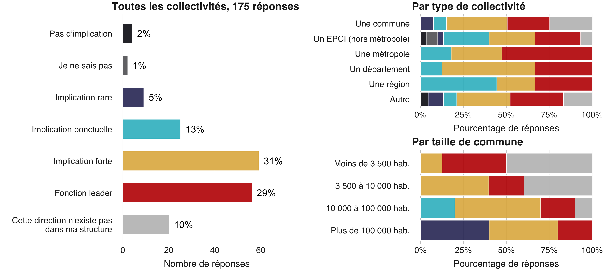